Math Unifying#
UNSW lectures - Analysis & Topology#
Source: UNSW_CPMSoc_MATH3611_Revision
Comparing sizes of sets
Injective map \(\implies|A|\leq|B|\)
Surjective map \(\implies|A|\geq|B|\)
Bijective map \(\implies|A|=|B|\)
\(|A|\leq|B|\) and \(|A|\neq|B|\implies|A|<|B|\)
Schroder-Bernstein theorem: \(|A|\leq|B|\) and \(|B|\leq|A|\implies|A|=|B|\)
Transitivity: \(|A|\leq|B|\) and \(|B|\leq|C|\implies|A|\leq|C|\)
Axiom of choice: If \(\{S_i\}_{i\in I}\) is a non-empty collection of non-empty sets, the Cartesian product \(\prod_{i\in I}S_i\) is also non-empty.
Countability
Countable: \(|S|\leq|\N|\)
Finite: \(|S|<|\N|\)
Countably infinite: \(|S|=|\N|\)
Uncountable: \(|S|>|\N|\)
Dedekind-infinite: There exists a bijection from \(S\) to a proper subset of itself, otherwise, Dedekind-finite.
A set if Dedekind-finite iff it is finite.
If \(\{S_i\}^n_{i=1}\) is a family of countable sets, \(S=\prod_{i=1}^nS_i\) is also countable.
Cantor’s theorem: For all sets \(S\), \(|S|<|\mathcal P(S)|\)
Metric spaces: A function \(d:X\times X\rightarrow[0,\infty)\) where \(X\) is a non-empty set is a metric if it satisfies these conditions.
\(d(x,y)=0\iff x=y\)
\(d(x,y)=d(y,x)\)
\(d(x,y)\leq d(x,z)+d(z,y)\)
Example metrics
\(p\)-metric(\(\R^n, p\geq1\)): \(\large d(x,y)=(\sum_{k=1}^n|x_k-y_k|^p)^\frac1p\)
Discrete metric: \(d(x,y)=\begin{cases}0&\text{if }x=y\\1&\text{otherwise}\end{cases}\)
\(d_\infty\) metric(\(\R^n\)): \(d_\infty(x,y)=\sup_{1\leq k\leq n}|x_k-y_k|\)
Metric inequalities
Minkowski’s inequality(triangle inequality for \(p\)-metric): \(d_p(x,y)\leq d_p(x,z)+d_p(z,y)\) for \(p\geq1\quad x,y,z\in\R^n\) or \(X=\R^n\)
Hölder’s inequality: \(\large|\sum_{i=1}^nx_iy_i|\leq(\sum_{i=1}^n|x_i|^p)^\frac1p(\sum_{i=1}^n|y_i|^q)^\frac1q\)
Convergence: For a metric space \((X,D)\), \(\{x_k\}^\infty_{k=1}\) converges to \(x\) if \(d(x_k,x)\rightarrow0\) as \(k\rightarrow\infty\) and \(\{x_k\}^\infty_{k=1}\subseteq X\) and that \(x\in X\).
Note that limits in a metric space are unique.
Classifying Points
\(\epsilon\)-ball(centred at \(x_0\)): \(B(x_0,\epsilon)=\{x\in X:d(x_0,x)<\epsilon\}\)
Suppose \((X,d)\) is a metric space, \(Y\subseteq X\quad x_0\in Y\).
Interior point: \(B(x_0,\epsilon)\subseteq Y\) for \(\epsilon>0\)
Boundary point: \(B(x_0,\epsilon)\cap Y\neq\emptyset\) and \(B(x_0,\epsilon)\cap X\backslash Y\neq\emptyset\)
Limit point: \(x_0\) if every \(B(x_0,\epsilon)\) contains a point of \(Y\) different from \(x_0\).
Boundedness: \(\emptyset\neq Y\subset X\) is bounded for metric space $(X,d) if…
\(Y\subseteq B(x,R(x))\) if there exists \(R(x)>0\) for every \(x\in X\).
There exists \(y\in Y\) and \(R>0\) such that \(Y\subseteq B(y,R)\).
There exists \(R>0\) such that \(d(y_1,y_2)<R\) for all \(y_1,y_2\in Y\).
Open sets: Set that contains only its interior points or contains no boundary points.
Closed sets: \(X\backslash Y\) is open or \(Y\) contains all of its boundary or limit points.
Continuity: Suppose \(f: X\rightarrow Y\) where \(x,y\) are metric spaces.
Continuous at \(x_0\in X\) if there exist \(\delta>0\) for all \(\epsilon>0\) such that \(d_X(x,x_0)<\delta\implies d_Y(f(x),f(x_0))<\epsilon\).
Continous on \(X\) if continous at every point of \(X\).
Open set continuity: \(f: X\rightarrow Y\) is continous on \(X\iff f^{-1}(U)\) is an open set in \((X,d_x)\) for every open set \(U\) on \((Y,d_Y)\)
Normed space: A real vector space \(V\) is a norm if…
\(||v||\geq0\) for all \(v\in V\) and \(||v||=0\iff v=0\)
\(||\lambda v||=|\lambda|||v||\) for all \(\lambda\in\R,v\in V\)
\(||u+v||\geq||u||+||v||\) for all \(u,v\in V\)
Setting \(d(u,v)=||u-v||\) gives us a metric on \(V\).
Inner product(on vector space \(V\)): \(\langle.,.\rangle:V\times V\rightarrow\R\) such that
\(\langle \langle\langle\langle\langle\rangle\rangle\rangle\rangle v,v\rangle\geq0\) for all \(v\in V\) and \(\langle v,v\rangle=0\iff v=0\)
\(\langle\lambda v,u\rangle=\lambda\langle v,u\rangle\) for all \(\lambda\in\R,~u,v\in\R\)
\(\langle u,v\rangle=\langle v,u\rangle\) for all \(u,v\in V\)
\(\langle u+v,w\rangle=\langle u,w\rangle+\langle v,w\rangle\) for all \(u,v,w\in V\)
Setting \(||v||=\sqrt{\langle v,v\rangle}\) gives us a norm on \(V\).
Cauchy sequence: A sequence in metric space \((X,d)~~\{x_k\}_{k=1}^\infty\) is a Cauchy sequence if for all \(\epsilon>0\) there exists \(K\) such that for all \(k,l\geq K,d(x_k,x_l)<\epsilon\)
Completeness:
UNSW lectures - Graph Theory#
Source: UNSW_CPMSoc_workshop
Graph: Collection of vertices \(v\in V\) and edges \(e\in E\).
Simple graphs: No loops and multiple edges between 2 vertices.
Multi graph: Can have loops and multiple edges.
Cycle(\(C_n\)): \(n\) vertices connected by cycle of edges.
Complete(\(K_n\)): \(n\) vertices connected by every possible edge such that graph is simple.
Tree(\(T_n\)): Undirected graph with no cycle.
Hypercube(\(Q_n\)): \(2^n\) vertices where each element is represented as element of \(\{0,1\}^n\) with adjacent vertices differing by \(1\) pos.
Bipartite graph: Edges map between \(2\) disjoint vertex sets.
We can think of a graph that has colouring such that there are \(2\) colours and \(2\) vertices with the same colour are not connected.
A complete bipartite graph has as many edges as possible.
Degree(of vertex): Number of edges connected to that vertex.
Handshaking lemma: Sum of degrees of vertices is twice the number of edges. This comes from the fact the every edge has exactly \(2\) endpoints.
For graphs with regions: \(2|E|=\sum_{r\in R}\deg(r)\) where \(\deg(r)\) is the number of edges surrounding \(r\).
Pendant vertex: Vertex connected by only \(1\) edge.
Graph complment(\(\bar G\)): Transformation of \(G\) such that all the edges are all possible edges not in \(G\).
\(|E(G)|+|E(\bar G)|=|E(K_n)|\)
Subgraph(\(G'\)): Graph with \(V(G')\subseteq V(G)\) and same for edges.
\(G'\) still must have a graph.
We can have vertices that don’t have any edges even when they have edges in \(G\).
Vertex induced subgraph(\(G[S]\)): \(G\) such that edges are exactly those with endpoints in the subset of vertices \(S\).
Neighbourhood(\(N_g\)): Set of all vertices adjacent to \(v\).
In the same sense, we can define a neighbourhood of a set of vertices.
Isomorphism(\(\cong\)): Transformation \(p: X\rightarrow Y\) such that \(p(x)=p(f(X))\) where \(f\) is an invariant.
For example, we can choose the invariant to be structure, allowing us to bend the graphs.
Planar graph: Graph such that only intersections are endpoints.
We allow bent edges to avoid intersections without endpoints because they are isomorphic.
Dual of planar graph(also dual graph): Transformation where regions(\(r\)) become vertices(\(v\)) and edges(\(e\)) form between \(r\) based on the number of edges separating them.
Euler formula: \(v-e+r=2\) for connected planar multigraphs.
Kuratowski’s Theorem: \(G\) is planar \(\iff\) \(G\) does not have \(K_{3,3}\) or \(K_5\) as subgraph or subdivision.
Subdivision: Graph with extra intermediate vertices.
Hamiltonian graph: Path that visits every vertex of a graph exactly once. We can use backtracking for small graphs.
Euler trail: Travels along every edge exactly once.
Euler tour: Euler trail that returns to the same starting point.
A closed Euler tour exists when every vertex has an even degree.
An euler trail exists when there are \(2\) vertices with an odd degree.
If there are more vertices with an odd degree(e.g. Konigsberg bridges), there is no Euler trail.
Spanning tree: Subgraph of \(G\) that is a tree that connects every vertex.
Minimum spanning tree: Such a tree that minimises weight/cost.
Weighted graph: Has numbers on the edges that may represent distance/time/cost.
Dijkstra’s algorithm: Greedy algorithm that finds the minimum travel time between \(2\) vertices.
Negative weights require different algorithms.
Clique: Set of vertices where every vertex is connected to every other vertex in the clique by edges in the graph.
Triangle free graph: Graph without a cycle length \(3\).
Mantel’s theorem: Triangle free graph with \(n\) vertices has at most \(\large\lfloor\frac{n^2}4\rfloor\) edges, equality iff the graph is \(\large K_{\lfloor\frac n2\rfloor\lceil\frac n2\rceil}\)
Turan’s theorem: Graph with \(n\) vertices with cliques with at most \(r\) vertices has at most \(\large\lfloor(1-\frac1r)\frac{n^2}2\rfloor\) edges.
This is a generalization of Mantel’s theorem and it is the case where \(r=2\).
Matching(\(M\subset E(G)\)): Any set of edges \(e\in G\) such that no \(2\) edges share an endpoint.
Perfect matching: Matching covering every vertex in \(G\).
M-exposed matching: There is a \(v\in G\) such that there is no edge of \(v\) in \(M\).
Hall’s Theorem: \(G=(X,Y,E)\) where \(G\) is a bipartite graph where \(E=e(G)\) only connect \(x\in X\) to \(y\in Y\). Define \(S\subseteq X\) as the set of vertices in \(Y\) adjacent to \(X\). There exists a perfect matching \(M\) for all \(S\subseteq X\iff|\Gamma(S)|\geq|S|\)
Linear Algebra#
LAFF#
Population Dynamics in Endangered Marsupial Breeding
Context: A wildlife conservation sanctuary in New South Wales operates a specialized breeding program for endangered brush-tailed rock-wallabies. The sanctuary tracks two distinct age groups in its population each year: juveniles (under one year old) and mature adults (one year or older). Biologists have established the following annual population dynamics for the program:
Each mature adult produces exactly one juvenile offspring per year.
Juveniles do not reproduce during their first year, but all surviving juveniles transition into mature adults the following year.
Mature adults survive from year to year without any natural mortality in the controlled sanctuary environment.
The program starts in Year 0 with zero juveniles and one mature adult.
Question:
Formulate this two-state population transition system.
To analyze the long-term behavior of the colony (Hints: system’s characteristic equation & eigen).
Calculate the long-term annual growth rate of the total wallaby population and find the steady-state ratio of mature adults to juveniles as time approaches infinity.
# 1. LA for Fibonnaci series
var('x lambda_var n')
A = matrix(SR, [[1, 1], [1, 0]])
show("Transition Matrix", A)
# 2. Characteristic Polynomial
char_poly = A.characteristic_polynomial(lambda_var)
show("Characteristic Polynomial: ", char_poly," = 0")
# 3. Eigenvalues
eigenvals = A.eigenvalues()
for i, val in enumerate(eigenvals):
show("Eigenvalue:", f"λ_{i+1} =", val)
# 4. Eigenvector matrix P and diagonal matrix D
D, P = A.eigenmatrix_right()
show("Eigenvector matrix P:", P)
# 5. Compute D^n and closed-form expression
D_n = diagonal_matrix([D[0, 0]^n, D[1, 1]^n])
A_n = P * D_n * P.inverse() # A^n = P * D^n * P^-1
v0 = vector(SR, [1, 0]) # Initial state [F_1, F_0]^T = [1, 0]^T
F_n = (A_n * v0)[1] # A^n * v0 _ Second component (index 1) yields F_n
show("General term formula (Binet):", F_n.simplify_full())
# 1. LA for Pell series
var('x lambda_var n')
A = matrix(SR, [[2, 1], [1, 0]])
show("Transition Matrix", A)
# 2. Characteristic Polynomial
char_poly = A.characteristic_polynomial(lambda_var)
show("Characteristic Polynomial: ", char_poly, " = 0")
# 3. Eigenvalues
eigenvals = A.eigenvalues()
for i, val in enumerate(eigenvals):
show("Eigenvalue:", f"λ_{i+1} =", val)
# 4. Eigenvector matrix P and diagonal matrix D
D, P = A.eigenmatrix_right()
show("Eigenvector matrix P:", P)
# 5. Compute D^n and closed-form expression
D_n = diagonal_matrix([D[0, 0]^n, D[1, 1]^n])
A_n = P * D_n * P.inverse() # A^n = P * D^n * P^-1
v0 = vector(SR, [1, 0]) # Initial state [P_1, P_0]^T = [1, 0]^T
P_n = (A_n * v0)[1] # Second component yields P_n
show("General term formula (Pell):", P_n.simplify_full())
# 1. LA for Lucas (vs.Fibonnaci, only difference is initial state v0 = vector(SR, [1, 2]))
var('x lambda_var n')
A = matrix(SR, [[1, 1], [1, 0]])
show("Transition Matrix", A)
# 2. Characteristic Polynomial
char_poly = A.characteristic_polynomial(lambda_var)
show("Characteristic Polynomial: ", char_poly," = 0")
# 3. Eigenvalues
eigenvals = A.eigenvalues()
for i, val in enumerate(eigenvals):
show("Eigenvalue:", f"λ_{i+1} =", val)
# 4. Eigenvector matrix P and diagonal matrix D
D, P = A.eigenmatrix_right()
show("Eigenvector matrix P:", P)
# 5. Compute D^n and closed-form expression
D_n = diagonal_matrix([D[0, 0]^n, D[1, 1]^n])
A_n = P * D_n * P.inverse() # A^n = P * D^n * P^-1
v0 = vector(SR, [1, 2]) # Initial state [F_1, F_0]^T = [1, 0]^T
F_n = (A_n * v0)[1] # A^n * v0 _ Second component (index 1) yields F_n
show("General term formula:", F_n.simplify_full())
def gram_schmidt(vec):
"""Takes k linearly independent vectors and outputs orthogonal vector space as a list of vectors(modified versiongram)."""
space=[vec[0]]
for v in vec[1:]:
for s in space:
v-=v.dot_product(s)/norm(s)^2*s
space.append(v)
space=[v/norm(v) for v in space]
return space
def QR(A):
"""Calculates QR factorization(different from .QR()?)"""
Q=transpose(matrix(gram_schmidt([vector(lst) for lst in list(transpose(A))])))
R=transpose(Q)*A
return (Q,R)
A=matrix([[2,1,1],[1,0,-2],[0,1,-1],[0,0,1]])
Q,R=QR(A)
s(Q,R,transpose(Q)*Q,Q*R)
def linear_least_squares(A,b):
"""Finds linear-least square solution to Ax=b(output: x)"""
x=(transpose(A)*A).inverse()*transpose(A)*b
return x
def projection(a,b):
"""Finds projection of vector a onto vector b(also â)"""
return b.dot_product(a)*b/norm(b)^2
A=matrix([[0,1],[1,0],[2,1]])
b=vector([1,1,1])
x=linear_least_squares(matrix([[0,1],[1,0],[2,1]]),vector([1,1,1]))
s(x,A*x)
Primary: ??#
Row echelon form: Get more 0s in bottom-left by adding and subtracting rows, still equivalent for solving equations
Pivots are columns that have the first non-zero number of any row in them.
Variables that correspond to pivots are dependent, others are free.
Eigenvalues: Solve \(\det(A-\lambda I)=0\)
Eigenvectors: Solve for \(A\mathbf{v}=\lambda\mathbf{v}\)
\(2\times2\) inverse: \(\begin{pmatrix}a&b\\c&d\end{pmatrix}^{-1}=\frac1{ad-bc}\begin{pmatrix}d&-b\\-c&a\end{pmatrix}\)
We can use a XOR basis for spans and sets.
%%{init: { "flowchart": { "nodeSpacing": 15, "rankSpacing": 15, "padding": 5 }, 'themeTuning': 'safe', 'themeVariables': { 'fontSize': '12px' }}}%%
flowchart LR
CP[Characteristic polynomial] --> eig["eigenvalues <br> the roots of the polynomial"]
CP --> det[determinant <br>the constant term]
CP --> tr[trace <br>related to the second-highest coefficient]
matrix(3,3,[1,0,0,0,5,2,0,2,1]).inverse()
matrix(3,3,[2,-1,0,0,-1,-2,0,0,1])*matrix(3,3,[1,0,0,0,1,0,0,1,1])*matrix(3,3,[1,0,0,-1,1,0,2,0,1])
matrix(4,4,[0,0,1,0,1,0,0,0,0,0,0,1,0,1,0,0]).inverse()
3*vector([2,4,-1,0])+2*vector([1,0,1,0])
vector([90,30,10,15,5]).dot_product(vector([1.4,1.2,0.6,0.2,2.0]))
var('i x')
vi=vector([3,5])
vj=vector([5,4])-vi
2*vi+3*vj
80+95+95
P=matrix([[.4,.3,.1],
[.4,.3,.6],
[.2,.4,.3]])
P^2
A=matrix([[2,0,1],
[-1,1,0],
[1,3,1],
[-1,1,1]])
B=matrix([[2,1,2,1],
[0,1,0,1],
[1,0,1,0]])
A*B,B*A
A=matrix(2,2,[0,-1,1,0])
A^2,A^3,A^4,A^5
# Weather Probability
prob = matrix([[0.4,0.3,0.1],
[0.4,0.3,0.6],
[0.2,0.4,0.3]])
initial = identity_matrix(3) # column 1,2,3 are sunny,cloudy,rainy
for i in range(10):
s(initial)
initial = prob * initial
# associativity test for multiplication
A=matrix([[0,1],
[1,0]])
B=matrix([[0,2,-1],
[1,1,0]])
C=matrix([[0,1],
[1,2],
[1,-1]])
s(A*B,(A*B)*C,B*C,A*(B*C))
# distributive property
A=matrix([[0,1],
[1,0]])
B=matrix([[2,-1],
[1,0]])
C=matrix([[-1,1],
[0,1]])
s(A*(B+C),A*B+A*C,(A+B)*C,A*C+B*C)
A=matrix([[2,0,1],
[-1,1,0],
[1,3,1],
[-1,1,1]])
B=matrix([[2,1,2,1],
[0,1,0,1],
[1,0,1,0]])
s(transpose(A)*A,A*transpose(A),transpose(A*B),transpose(A)*transpose(B),transpose(B)*transpose(A))
A=matrix([[1,-1,-2],
[0,2,3],
[0,0,1]])
B=matrix([[-2,1,-1],
[0,1,2],
[0,0,1]])
s(A*B)
A=matrix([[1,-2,2],
[-1,2,1],
[0,1,2]])
B=matrix([[-1,0,1],
[2,1,-1],
[1,-1,2]])
s(A*B)
A=matrix([[1,0,0],
[-2,1,0],
[0,0,1]])
B=matrix([[2,4,-2],
[4,-2,6],
[6,-4,2]])
s(A*B)
A=matrix([[1,0,0],
[0,1,0],
[345,0,1]])
B=matrix([[2,4,-2],
[4,-2,6],
[6,-4,2]])
s(A*B)
A=matrix([[1,0,0],
[0,1,0],
[-3,0,1]])
B=matrix([[2,4,-2],
[4,-2,6],
[6,-4,2]])
s(A*B)
var('x')
A=matrix([[1,1,0],
[1,-1,0],
[0,0,1]])
s(A.inverse())
var('x')
A=matrix([[1,0,0],
[x,1,0],
[0,0,1]])
B=matrix([[2,4,-2],
[2,-2,6],
[6,-4,2]])
s(A*B)
x=-1
A=matrix([[1,0,0],
[x,1,0],
[0,0,1]])
B=matrix([[2,4,-2],
[2,-2,6],
[6,-4,2]])
s(A*B)
var('x y')
A=matrix([[1,0,0],
[x,1,0],
[y,0,1]])
B=matrix([[2,4,-2],
[2,-2,6],
[-4,-4,2]])
s(A*B)
x=-1
y=2
A=matrix([[1,0,0],
[x,1,0],
[y,0,1]])
B=matrix([[2,4,-2],
[2,-2,6],
[-4,-4,2]])
s(A*B)
var('x')
A=matrix([[1,0,0],
[0,1,0],
[0,x,1]])
B=matrix([[2,4,-2],
[0,-10,10],
[0,-16,8]])
s(A*B)
x=-8/5
A=matrix([[1,0,0],
[0,1,0],
[0,x,1]])
B=matrix([[2,4,-2],
[0,-10,10],
[0,-16,8]])
s(A*B)
var('x y')
A=matrix([[1,0,x],
[0,1,y],
[0,0,1]])
B=matrix([[2,4,-8],
[1,1,-4],
[-1,-2,4]])
s(A*B)
x=2
y=1
A=matrix([[1,0,x],
[0,1,y],
[0,0,1]])
B=matrix([[2,4,-8],
[1,1,-4],
[-1,-2,4]])
s(A*B)
L=matrix([[1,0,0],
[5,1,0],
[-2,3,1]])
U=matrix([[1,-2,2],
[0,-5,-2],
[0,0,-1]])
s(L*U)
lst=[2,2,2,3] # partial sums
[sum(lst[:i+1]) for i in range(len(lst))]
list(range(2,-1,-1))
def back_substitution(U,b):
"""Performs back substitution given an upper triangular matrix U and a vector b.
Currently only works for vectors of size 3 and matrices of size 3x3."""
lst=[]
# U[2][2]*x2=b[2]
# x2=b[2]/U[2][2]
lst.append(b[2]/U[2][2])
# U[1][1]*x1+U[1][2]*x2=b[1]
# U[1][1]*x1=b[1]-U[1][2]*x2
# x1=(b[1]-U[1][2]*x2)/U[1][1]
lst.append((b[1]-U[1][2]*lst[0])/U[1][1])
# U[0][0]*x0+U[0][1]*x1+U[0][2]*x2=b[0]
# U[0][0]*x0=b[0]-U[0][1]*x1-U[0][2]*x2
# x0=(b[0]-U[0][1]*x1-U[0][2]*x2)/U[0][0]
lst.append((b[0]-U[0][1]*lst[1]-U[0][2]*lst[0])/U[0][0])
return lst[::-1]
def new_back_substitution(U,b):
"""A new back substitution function that works for any size."""
lst=[]
for i in range(len(b)-1,-1,-1):
thingy=b[i]-sum(U[i][len(b)-1-j]*lst[j] for j in range())
lst.append(thingy/U[i][i])
U=matrix([[-2,-1,1],
[0,-3,-2],
[0,0,1]])
b=vector([6,9,3])
back_substitution(U,b)
U=matrix(3,3,[-2,1,-2,0,-1,1,0,0,2])
b=vector([0,1,2])
back_substitution(U,b)
\(\text{Let } \alpha_{0,0} \not= 0 \text{ and } \alpha_{1,1} \not= 0. \text{ Then} \left(\begin{array}{c}\alpha_{0,0}&0\\\alpha_{1,0}&\alpha_{1,1}\end{array}\right)^{-1} = \left(\begin{array}{c}\frac{1}{\alpha_{0,0}}&0\\-\frac{\alpha_{1,0}}{\alpha_{0,0}\alpha_{1,1}}&\frac{1}{\alpha_{1,1}}\end{array}\right)\)
\(\left(\begin{array}{c}\alpha_{0,0}&\alpha_{0,1}\\\alpha_{1,0}&\alpha_{1,1}\end{array}\right)^{-1} = \frac{1}{\alpha_{0,0}\alpha_{1,1} - \alpha_{1,0}\alpha_{0,1}} \left(\begin{array}{c}\alpha_{1,1}&-\alpha_{0,1}\\-\alpha_{1,0}&\alpha_{0,0}\end{array}\right)\)
s(matrix([[-2,0],[4,2]]).inverse())
s(matrix([[1,-2],[0,2]]).inverse())
s(matrix([[1,2],[1,1]]).inverse())
(matrix(3,3,[0,1,0,0,1,0,0,1,0])*transpose(matrix(3,3,[0,1,0,0,1,0,0,1,0]))).eigenvalues()
def triangular_number(i): return (i*(i+1))/2
def positioning(i,j):
if j==0: return 6*triangular_number(i-1)+2
if j>0: layer=i+j
else: layer=i+max(0,j-i)
print(layer)
positioning(2,-3)
Fast Matrix#
# Tiling Corridor Signals
# lists: rrr,rrg,rgr,rgg,grr,grg,ggr,ggg -> f(n)=f(n-1)+f(n-3)
memo={3:[1,1,1,1,1,1,1,1],4:[1,1,2,2,2,2,1,1]}
def tiling(length):
if length in memo: return memo[length]
prev=tiling(length-1)
ans=[prev[4],prev[0],prev[1]+prev[5],prev[1]+prev[5],prev[2]+prev[6],prev[2]+prev[6],prev[7],prev[3]]
memo[length]=ans
return ans
def matrix_tiling(length):
b_vector=vector([18,12,8])
A_matrix=matrix([[1,0,1],
[1,0,0],
[0,1,0]])
return (A_matrix^(length-3)*b_vector)[2]
[sum(tiling(i)) for i in range(3,20)]
# Messenger donguh
memo={0:[1,0,0]}
alt_memo={0:1,1:1,2:2}
def routes(days):
if days in memo: return memo[days]
prev=routes(days-1)
ans=[prev[0]+prev[1],prev[0]+prev[2],sum(prev)]
memo[days]=ansx
return ans
def alt_routes(days):
if days in alt_memo: return alt_memo[days]
ans=2*alt_routes(days-1)+alt_routes(days-2)-alt_routes(days-3)
alt_memo[days]=ans
return ans
def matrix_multiply(m1,m2):
out=[]
for i,row in enumerate(m1):
out.append([sum(row[i]*column[i] for i in range(len(row))) for column in m2])
return out
def mv_multiply(m,v):
return [sum(row[i]*v[i] for i in range(len(v))) for row in m]
def matrix_routes(length): # f(i)=2*f(i-1)+f(i-2)-f(i-3)
b_vector=[2,1,1]
A_matrix=[[2,1,-1],
[1,0,0],
[0,1,0]]
for _ in range(length): b_vector=mv_multiply(A_matrix,b_vector)
return b_vector[-1]
[matrix_routes(i) for i in range(20)]
matrix(3,3,[2,-3,4,2,-2,3,6,-7,9]).inverse()*vector([-8,-5,-17])
matrix(3,3,[-1/2,0,0,0,-1,0,0,0,1])*matrix(3,4,[-2,0,0,2,0,-1,0,2,0,0,1,1])
matrix(3,3,[1/3,0,0,0,-1,0,0,0,-1/2])*vector([-6,-1,-4])
matrix(3,3,[2,-3,4,2,-2,3,6,-7,9]).inverse()
s(matrix(3,3,[9,6,2,-4,-5/2,-1,3,2,1])*matrix(3,3,[3,2,0,-1,-1/2,0,3,2,1]).inverse())
s(matrix(4,4,[1,-2,0,0,0,1,0,0,0,3,1,0,0,-1,0,1])*matrix(4,4,[1,2,0,0,0,1,0,0,0,-3,1,0,0,1,0,1]))
s(matrix(3,3,[2,-1,0,-2,0,6,6,-2,-3]).inverse())
s(matrix(3,3,[0,1,0,1,0,0,0,0,1]).inverse()*matrix(3,3,[1,0,0,1,1,0,-2,0,1])*matrix(3,3,[0,1,0,1,-1,0,0,2,1])*matrix(3,3,[0,1,0,1,0,0,0,0,1])*matrix(3,3,[1/2,0,0,0,1,0,0,0,-1/3]).inverse())
try: s(matrix(3,3,[2,-2,-4,-2,1,4,2,0,-4]).inverse())
except Exception as e: print('ZeroDivisionError:',str(e))
Projection formula(\(A\) is matrix and \(b\) is vector): \(\mathbf{p}=A(A^TA)^{-1}A^T\mathbf{b}\)
Projection formula(\(\vec a\) and \(\vec b\) are vectors): \(\mathbf{p}=\frac{\vec a\cdot\vec b}{|\vec b|^2}\vec b\)
Formula for length only: \(|\mathbf{p}|_2=\frac{\vec a\cdot\vec b}{|\vec b|}\)
This formula projects
A=matrix([[1,1],[1,-1],[-2,4]])
b=vector([1,2,7])
s(b-A*(transpose(A)*A).inverse()*transpose(A)*b)
a=vector([1,1,-2])/sqrt(6)
b=vector([1,-1,4])
s(b-a*b*b)
ALAFF#
Week 1
Norms
Vector norms
2-norm/Euclidean norm: \(||x||_2=\sqrt{x_0^2+x_1^2+...+x_{m-1}^2}\)
1-norm/Manhattan norm: \(||x||_1=|x_0|+|x_1|+...+|x_{m-1}|\)
\(\infty\)-norm: \(||x||_\infty=\max(|x_0|,|x_1|,...,|x_{m-1})\)
\(p\)-norm: \(||x||_p=\sqrt[p]{|x_0|^p+|x_1|^p+...+|x_{m-1}|^p}\)
Matrix norms
Frobenius norm: \(||A||_F=\sqrt{\sum_{i=0}^{m-1}\sum_{j=0}^{n-1}|\alpha_{i,j}|^2}\)
This can be thought of as the vector 2-norm with all the elements stacked.
Induced matrix norm: [Add note(1.3.4)]
Matrix 2-norm: \(\large\| A \|_2 = \max_{x \neq 0}\frac{\| A x \|_2}{\| x \|_2}=\max_{\| x \|_2 = 1}\| A x \|_2\)
This is hard to calculate.
The matrix 1-norm and \(\infty\)-norm are similar, just change the vector norms.
However, they have simple formulae.
Submultiplicative norms: Norm such that \(\|AB\|\leq\|A\|\|B\|\)
Week 2
Orthogonal vectors
Also perpendicular vectors.
Dot product of them is \(0\).
Orthonormal vectors: Set of unit vectors all orthogonal to each other.
Unitary matrix: [Add notes(2.2.4-5)]
SVD
SVD theorem: For a matrix \(A\), there exists \(A=U\Sigma V^H\) such that \(U,V\) are unitary and \(\Sigma\) is a diagonal matrix with values at the top larger.
We can also add more 0s to \(\Sigma\) to make the matrix multiplication work.
For SVD, we can reduce it by removing excess 0s from the diagonal matrix, making it a true diagonal matrix.
Practical method will be discussed in week 11, use
.SVD()
Week 3
Vandermonde matrix: \(X = \left( \begin{array}{c c c c }1 & \chi_0 & \cdots & \chi_0^{n-1} \\1 & \chi_1 & \cdots & \chi_1^{n-1} \\\vdots & \vdots & & \vdots \\1 & \chi_{m-1} & \cdots & \chi_{m-1}^{n-1}\end{array} \right)\)
Add approximate linear system
We can use polynomials to approximate for powers higher than \(1\).
For linear approximations, use linear-least squares formula from LAFF week 11.
Reflector: A mirror that reflects vectors.
We can think of it as a plane with an unit orthogonal vector \(u\) to control it.
Matrix form: \(I-2uu^H\)
# Classical Gram-Schmidt
def classical_gram_schmidt(vec):
"""Takes set of linearly independent vectors and outputs orthonormal basis with same span."""
# step 1: find q_0
ans=[vec[0]/norm(vec[0])]
# step 2: find q_1
a1=vec[1]-ans[0].dot_product(vec[1])*ans[0]
ans.append(a1/norm(a1))
# step 3: find q_2, ...
for v in vec[2:]:
a2=v-sum(q.dot_product(v)*q for q in ans)
ans.append(a2/norm(a2))
return ans
5U - Extension III#
Recurrence Relations and GF#
def a(n): return BinaryRecurrenceSequence(1, 1).period(n)
[a(Integer(i)) for i in range(1,10)]
[1, 3, 8, 6, 20, 24, 16, 12, 24]
# fibonacci generating function
R.<x>=PowerSeriesRing(ZZ,31)
sqrt5=RR(sqrt(5))
alphap=(1+sqrt5)/2
alpham=(1-sqrt5)/2
s(alphap/sqrt5/(1-alphap*x)-alpham/sqrt5/(1-alpham*x))
# Approximation of fibonacci sequence using powers of golden ratio, 13/02/2026
points([(fibonacci(i),floor(golden_ratio^(i-1))) for i in range(20)])
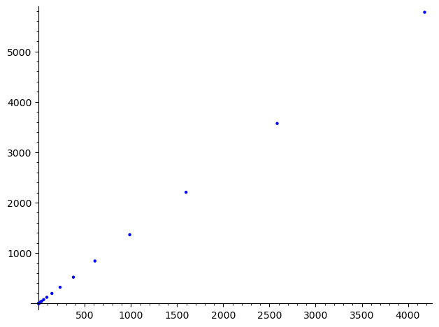
print([floor(golden_ratio^(i-1)*1.17083) for i in range(100)])
print(list(fibonacci_sequence(1,101))) # comparison below(5 digits match)
[0, 1, 1, 3, 4, 8, 12, 21, 33, 55, 88, 144, 233, 377, 610, 987, 1597, 2584, 4181, 6765, 10946, 17711, 28657, 46368, 75025, 121393, 196419, 317813, 514233, 832046, 1346280, 2178326, 3524606, 5702933, 9227540, 14930474, 24158015, 39088489, 63246504, 102334994, 165581499, 267916494, 433497993, 701414488, 1134912482, 1836326970, 2971239452, 4807566422, 7778805874, 12586372297, 20365178171, 32951550469, 53316728640, 86268279109, 139585007750, 225853286860, 365438294611, 591291581471, 956729876083, 1548021457554, 2504751333638, 4052772791192, 6557524124831, 10610296916024, 17167821040855, 27778117956879, 44945938997734, 72724056954613, 117669995952347, 190394052906960, 308064048859307, 498458101766267, 806522150625575, 1304980252391842, 2111502403017418, 3416482655409261, 5527985058426679, 8944467713835940, 14472452772262620, 23416920486098560, 37889373258361180, 61306293744459741, 99195667002820921, 160501960747280663, 259697627750101585, 420199588497382248, 679897216247483833, 1100096804744866081, 1779994020992349914, 2880090825737215995, 4660084846729565910, 7540175672466781906, 12200260519196347816, 19740436191663129722, 31940696710859477539, 51681132902522607262, 83621829613382084802, 135302962515904692064, 218924792129286776867, 354227754645191468932]
[1, 1, 2, 3, 5, 8, 13, 21, 34, 55, 89, 144, 233, 377, 610, 987, 1597, 2584, 4181, 6765, 10946, 17711, 28657, 46368, 75025, 121393, 196418, 317811, 514229, 832040, 1346269, 2178309, 3524578, 5702887, 9227465, 14930352, 24157817, 39088169, 63245986, 102334155, 165580141, 267914296, 433494437, 701408733, 1134903170, 1836311903, 2971215073, 4807526976, 7778742049, 12586269025, 20365011074, 32951280099, 53316291173, 86267571272, 139583862445, 225851433717, 365435296162, 591286729879, 956722026041, 1548008755920, 2504730781961, 4052739537881, 6557470319842, 10610209857723, 17167680177565, 27777890035288, 44945570212853, 72723460248141, 117669030460994, 190392490709135, 308061521170129, 498454011879264, 806515533049393, 1304969544928657, 2111485077978050, 3416454622906707, 5527939700884757, 8944394323791464, 14472334024676221, 23416728348467685, 37889062373143906, 61305790721611591, 99194853094755497, 160500643816367088, 259695496911122585, 420196140727489673, 679891637638612258, 1100087778366101931, 1779979416004714189, 2880067194370816120, 4660046610375530309, 7540113804746346429, 12200160415121876738, 19740274219868223167, 31940434634990099905, 51680708854858323072, 83621143489848422977, 135301852344706746049, 218922995834555169026, 354224848179261915075]
[n((floor(golden_ratio^(i-2)*1.17083)-fibonacci(i))/fibonacci(i)*100) for i in range(1,100)] # approxi rate
[-100.000000000000,
0.000000000000000,
-50.0000000000000,
0.000000000000000,
-20.0000000000000,
0.000000000000000,
-7.69230769230769,
0.000000000000000,
-2.94117647058824,
0.000000000000000,
-1.12359550561798,
0.000000000000000,
0.000000000000000,
0.000000000000000,
0.000000000000000,
0.000000000000000,
0.000000000000000,
0.000000000000000,
0.000000000000000,
0.000000000000000,
0.000000000000000,
0.000000000000000,
0.000000000000000,
0.000000000000000,
0.000000000000000,
0.000000000000000,
0.000509118308912625,
0.000629304838410250,
0.000777863558842461,
0.000721119176962646,
0.000817072962387160,
0.000780421877704219,
0.000794421346328553,
0.000806609003474907,
0.000812790945292125,
0.000817127419366938,
0.000819610480533071,
0.000818662035563753,
0.000819024309305574,
0.000819863123900324,
0.000820146662394737,
0.000820411614018537,
0.000820310411503620,
0.000820491637648315,
0.000820510528664749,
0.000820503312938554,
0.000820506069100707,
0.000820505016340443,
0.000820505418459082,
0.000820513210029689,
0.000820510233914543,
0.000820514405472840,
0.000820512812079356,
0.000820513420701510,
0.000820513904643728,
0.000820514162563190,
0.000820514337692976,
0.000820514270799350,
0.000820514400874010,
0.000820514351189911,
0.000820514410091998,
0.000820514387593403,
0.000820514411436885,
0.000820514411754369,
0.000820514411633101,
0.000820514411679422,
0.000820514411661729,
0.000820514411668487,
0.000820514411665905,
0.000820514411666891,
0.000820514411666515,
0.000820514411666659,
0.000820514411790594,
0.000820514411743255,
0.000820514411808697,
0.000820514411812970,
0.000820514411811338,
0.000820514411811961,
0.000820514411818633,
0.000820514411816085,
0.000820514411817058,
0.000820514411818317,
0.000820514411817836,
0.000820514411818643,
0.000820514411818720,
0.000820514411818691,
0.000820514411818702,
0.000820514411818698,
0.000820514411818699,
0.000820514411818699,
0.000820514411818720,
0.000820514411818725,
0.000820514411818723,
0.000820514411818724,
0.000820514411818727,
0.000820514411818728,
0.000820514411818729,
0.000820514411818728,
0.000820514411818729]
Limits#
Fake Argument
Let \(\sigma=1+3+3^2+\cdots\)
\(3\sigma=3+3^2+\cdots\)
\(\sigma-3\sigma=1\)
\(-2\sigma=1\)
\(\sigma=-\frac12\)
Flaw: \(\sigma\) doesn’t converge to any complex number.
Proper Argument
Show that \(\sigma_n=1+\frac13+\cdots+\frac1{3^n}\rightarrow\frac32\) as \(n\rightarrow\infty\)
\(\large\sigma_n=\frac{1-\frac1{3^{n+1}}}{1-\frac13}\)
# Newton-Raphson Method (extremely fast)
# we are finding sqrt 7
# use graph of x^2-7
# derivative is 2x
val=3
f(x)=x^3-2*x+2
g(x)=diff(f(x),x)
for _ in range(100):
val-=f(val)/g(val)
val=round(val,500)
print(n(val,digits=10))
2.080000000
1.457102885
0.9583119011
-0.3176411607
1.216097598
0.6553824374
2.019888431
1.414287100
0.9142915562
-0.9284091918
-6.145925184
-4.188864702
-2.942362971
-2.208656375
-1.863816703
-1.775124401
-1.769316630
-1.769292355
-1.769292354
-1.769292354
-1.769292354
-1.769292354
-1.769292354
-1.769292354
-1.769292354
-1.769292354
-1.769292354
-1.769292354
-1.769292354
-1.769292354
-1.769292354
-1.769292354
-1.769292354
-1.769292354
-1.769292354
-1.769292354
-1.769292354
-1.769292354
-1.769292354
-1.769292354
-1.769292354
-1.769292354
-1.769292354
-1.769292354
-1.769292354
-1.769292354
-1.769292354
-1.769292354
-1.769292354
-1.769292354
-1.769292354
-1.769292354
-1.769292354
-1.769292354
-1.769292354
-1.769292354
-1.769292354
-1.769292354
-1.769292354
-1.769292354
-1.769292354
-1.769292354
-1.769292354
-1.769292354
-1.769292354
-1.769292354
-1.769292354
-1.769292354
-1.769292354
-1.769292354
-1.769292354
-1.769292354
-1.769292354
-1.769292354
-1.769292354
-1.769292354
-1.769292354
-1.769292354
-1.769292354
-1.769292354
-1.769292354
-1.769292354
-1.769292354
-1.769292354
-1.769292354
-1.769292354
-1.769292354
-1.769292354
-1.769292354
-1.769292354
-1.769292354
-1.769292354
-1.769292354
-1.769292354
-1.769292354
-1.769292354
-1.769292354
-1.769292354
-1.769292354
-1.769292354
Power Series#
L.<z>=LazyPowerSeriesRing(QQ)
C=L.undefined(valuation=1)
C.define(z + C*C)
s([C.coefficient(i) for i in range(11)])
s(taylor(e^x,x,0,6))
s(expand(taylor(1/(1-x),x,0,6)^2)) # ignore terms above x^6
Lazy
Discrete Calculus#
In[]:= RunScheduledTask[NotebookSave[EvaluationNotebook[]], 30]
1. Intro#
keywords : sequences/series, finite differences, sums/products, gfun e . g . Finite Sums / Infinite Sums, Riemann Sums
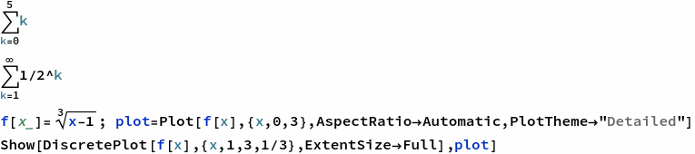
15
1
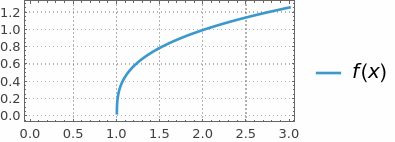
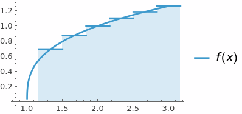
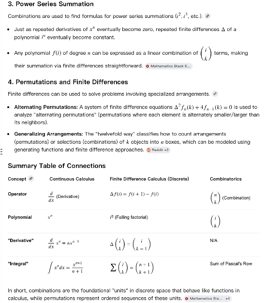
Sigma Notation#
Basic Examples
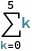
Out[]= 15
Infinite Sums
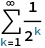
Out[]= 1
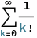
Out[]= E
Riemann Sums#
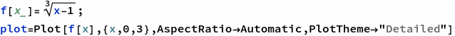
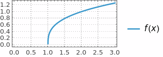
In[]:= Show[DiscretePlot[f[x], {x, 1, 3, 1/3}, ExtentSize -> Full], plot]
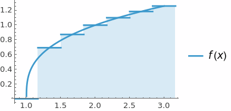
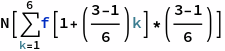
Out[]= 2.03771
Product Notation#
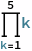
In[]:= 120
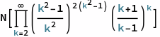
In[]:= 3.0899225749115415`
Taylor Series#
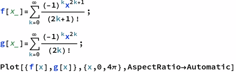

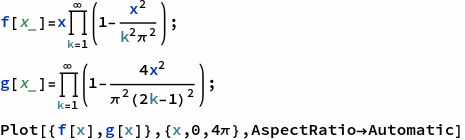
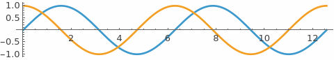
Finite Differences#
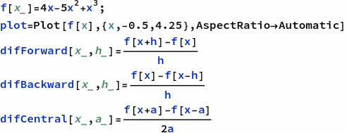
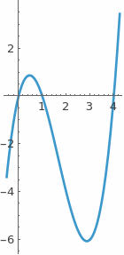
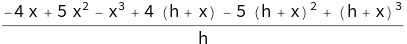
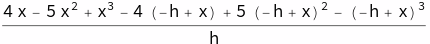
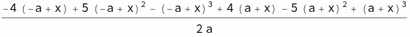
In[]:= (*coding form*)
f'[x]
Limit[difForward[x, h], h -> 0]
Limit[difBackward[x, h], h -> 0]
Simplify[Limit[difCentral[x, h], h -> 0]]
Out[]= 4 - 10 x + 3 x^2
Out[]= 4 - 10 x + 3 x^2
Out[]= 4 - 10 x + 3 x^2
Out[]= 4 - 10 x + 3 x^2
Out[]= 4 - 10 x + 3 x^2
Out[]= 4 - 10 x + 3 x^2
Out[]= 4 - 10 x + 3 x^2
Out[]= 4 - 10 x + 3 x^2
2. Number Theory#
In[]:= Divisible[10, 5]
Mod[12, 10](*cannot use %*)
Out[]= True
Out[]= 2
In[]:= a = 420; (*separate input cell*)
b = 860;
In[]:= (*repeat until output appears*)
r = Mod[a, b];
a = b;
If[r > 0, b = r, Print[a]];
Out[]= 20
In[]:= (*only need to run once*)
r = Mod[a, b];
a = b;
While[r > 0, b = r; r = Mod[a, b]; a = b]
Print[a]
Out[]= 20
In[]:= GCD[a, b]
Out[]= 20
3. Primes#
Basic Things#
In[]:= Table[Prime[i], {i, 10}]
Out[]= {2, 3, 5, 7, 11, 13, 17, 19, 23, 29}
In[]:= PrimeQ[67]
PrimeQ[267]
CompositeQ[6767]
CompositeQ[673]
Out[]= True
Out[]= False
Out[]= True
Out[]= False
In[]:= gap[n_] = Prime[n + 1] - Prime[n];
DiscretePlot[gap[n], {n, 150}]
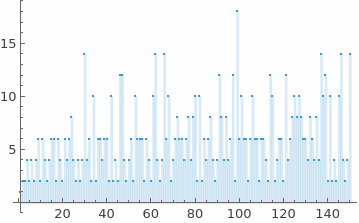
In[]:= RandomPrime[100]
Out[]= 73
In[]:= Plot[PrimePi[x], {x, 0, 50}]
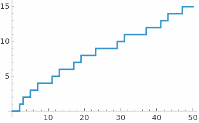
Applications#
In[]:= (*RSA Encryption*)
p = Prime[18];
q = Prime[16];
n = p*q
Out[]= 3233
In[]:= EulerPhi[n]
u = 17;
k = 15;
CoprimeQ[u, EulerPhi[n]]
PrivKey = (k*EulerPhi[n] + 1)/u
Out[]= 3120
Out[]= True
Out[]= 2753
In[]:= data = ToCharacterCode["Secret"]
encrypted = Mod[data^u, n]
Out[]= {83, 101, 99, 114, 101, 116}
Out[]= {2680, 1313, 281, 2412, 1313, 884}
In[]:= decrypted = Mod[encrypted^PrivKey, n]
Out[]= {83, 101, 99, 114, 101, 116}
In[]:= EulerPhi[n] == (p - 1) (q - 1)
Out[]= True
4. Fibonacci#
In[]:= DiscreteAsymptotic[Fibonacci[n]/Fibonacci[n - 1], n -> \[Infinity]]
DiscreteAsymptotic[Fibonacci[n], n -> \[Infinity]]
Out[]= GoldenRatio
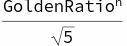
In[]:= Table[Fibonacci[i], {i, -20, 20}] (*including 0 is optional*)
Out[]= {-6765, 4181, -2584, 1597, -987, 610, -377, 233, -144, 89, -55, 34, -21, 13, -8, 5, -3, 2, -1, 1, 0, 1, 1, 2, 3, 5, 8, 13, 21, 34, 55, 89, 144, 233, 377, 610, 987, 1597, 2584, 4181, 6765}
In[]:= Table[Fibonacci[i, x], {i, -5, 5}]
Out[]= {1 + 3 x^2 + x^4, -2 x - x^3, 1 + x^2, -x, 1, 0, 1, x, 1 + x^2, 2 x + x^3, 1 + 3 x^2 + x^4}
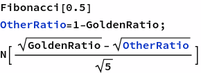
Out[]= 0.568864
Out[]= 0.568864 - 0.351578 I
When Fib inputs expand from integers to continuous, use Euler’s formula to calculate powers. Sage coding: def a(n): return BinaryRecurrenceSequence(1, 1).period(n) Lucas sequence is BinaryRecurrenceSequence and Fib is special Lucas
In[]:= test[{0, 1, _}] := False; test[_] := True;
nest[k_][{a_, b_, c_}] := {Mod[b, k], Mod[a + b, k], c + 1};
A001175[1] := 1;
A001175[k_] := NestWhile[nest[k], {1, 1, 1}, test][[3]];
Table[A001175[n], {n, 100}] (* Leo C. Stein, Nov 08 2019 *)
Out[]= {1, 3, 8, 6, 20, 24, 16, 12, 24, 60, 10, 24, 28, 48, 40, 24, 36, 24, 18, 60, 16, 30, 48, 24, 100, 84, 72, 48, 14, 120, 30, 48, 40, 36, 80, 24, 76, 18, 56, 60, 40, 48, 88, 30, 120, 48, 32, 24, 112, 300, 72, 84, 108, 72, 20, 48, 72, 42, 58, 120, 60, 30, 48, 96, 140, 120, 136, 36, 48, 240, 70, 24, 148, 228, 200, 18, 80, 168, 78, 120, 216, 120, 168, 48, 180, 264, 56, 60, 44, 120, 112, 48, 120, 96, 180, 48, 196, 336, 120, 300}
In[]:= PolarPlot[GoldenRatio^(2 \[Theta]/\[Pi]), {\[Theta], 0, 9 \[Pi]}]
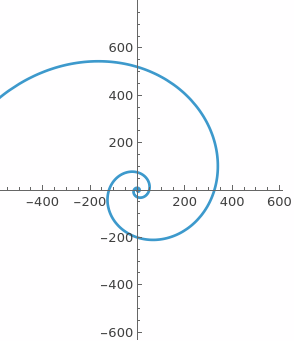
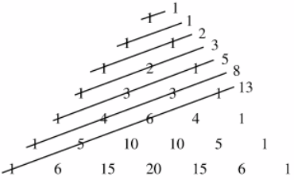
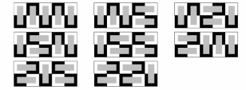
5. Permutations and Combinations#
In[]:= Perm[n_, k_] = n!/(n - k)!;
Perm[11, 11]
Out[]= 39916800
In[]:= Length[Permutations[{1, 2, 3, 4, 5, 6, 7, 8, 9, 10, 11}]]
Out[]= 39916800
Birthday problem (pigeonhole principle, see Twelvefold Way)
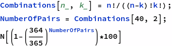
Out[]= 88.2336
In[]:= BirthdayChance[n_] = 100* (1 - ((364/365)^Combinations[n, 2]));
DiscretePlot[BirthdayChance[n], {n, 2, 100}]
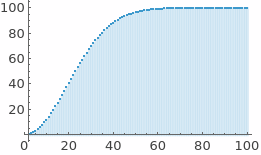
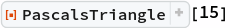
1 |
||||||||||||||||||||||||||||
1 |
1 |
|||||||||||||||||||||||||||
1 |
2 |
1 |
||||||||||||||||||||||||||
1 |
3 |
3 |
1 |
|||||||||||||||||||||||||
1 |
4 |
6 |
4 |
1 |
||||||||||||||||||||||||
1 |
5 |
10 |
10 |
5 |
1 |
|||||||||||||||||||||||
1 |
6 |
15 |
20 |
15 |
6 |
1 |
||||||||||||||||||||||
1 |
7 |
21 |
35 |
35 |
21 |
7 |
1 |
|||||||||||||||||||||
1 |
8 |
28 |
56 |
70 |
56 |
28 |
8 |
1 |
||||||||||||||||||||
1 |
9 |
36 |
84 |
126 |
126 |
84 |
36 |
9 |
1 |
|||||||||||||||||||
1 |
10 |
45 |
120 |
210 |
252 |
210 |
120 |
45 |
10 |
1 |
||||||||||||||||||
1 |
11 |
55 |
165 |
330 |
462 |
462 |
330 |
165 |
55 |
11 |
1 |
|||||||||||||||||
1 |
12 |
66 |
220 |
495 |
792 |
924 |
792 |
495 |
220 |
66 |
12 |
1 |
||||||||||||||||
1 |
13 |
78 |
286 |
715 |
1287 |
1716 |
1716 |
1287 |
715 |
286 |
78 |
13 |
1 |
|||||||||||||||
1 |
14 |
91 |
364 |
1001 |
2002 |
3003 |
3432 |
3003 |
2002 |
1001 |
364 |
91 |
14 |
1 |
100 Prisoners problem 100 prisoners go into a room one by one and choose 50 cabinets numbered cabinets from 1-100 out of 100 to open. They try to find the one that matches their prisoner number(1-100) inside the 50 cabinets.
Random picking strategy
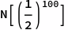
Out[]= 7.88861*10^-31
Another strategy is to start with the cabinet that matches their number. Then, if they don’t find their number inside, they go to the cabinet with the number inside the previous one. This way, the prisoner will end up in a permutation cycle. The prisoners win if no cycle is longer than 50. But if they lose, then at least 51 of them lose.
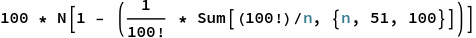
Out[]= 31.1828
6. Harmonic Numbers#
In[]:= Table[N[HarmonicNumber[i]], {i, 100}]
Out[]= {1., 1.5, 1.83333, 2.08333, 2.28333, 2.45, 2.59286, 2.71786, 2.82897, 2.92897, 3.01988, 3.10321, 3.18013, 3.25156, 3.31823, 3.38073, 3.43955, 3.49511, 3.54774, 3.59774, 3.64536, 3.69081, 3.73429, 3.77596, 3.81596, 3.85442, 3.89146, 3.92717, 3.96165, 3.99499, 4.02725, 4.0585, 4.0888, 4.11821, 4.14678, 4.17456, 4.20159, 4.2279, 4.25354, 4.27854, 4.30293, 4.32674, 4.35, 4.37273, 4.39495, 4.41669, 4.43796, 4.4588, 4.47921, 4.49921, 4.51881, 4.53804, 4.55691, 4.57543, 4.59361, 4.61147, 4.62901, 4.64625, 4.6632, 4.67987, 4.69626, 4.71239, 4.72827, 4.74389, 4.75928, 4.77443, 4.78935, 4.80406, 4.81855, 4.83284, 4.84692, 4.86081, 4.87451, 4.88802, 4.90136, 4.91451, 4.9275, 4.94032, 4.95298, 4.96548, 4.97782, 4.99002, 5.00207, 5.01397, 5.02574, 5.03737, 5.04886, 5.06022, 5.07146, 5.08257, 5.09356, 5.10443, 5.11518, 5.12582, 5.13635, 5.14676, 5.15707, 5.16728, 5.17738, 5.18738}
\(\) \(\) \(\) \(\)
There are some applications of Harmonic numbers in problems such as card stacking and traffic bunching.
7. Partitions#
8. Bernoulli Numbers#
This sequence is somewhat abstract and unintuitive, so we will go over how Bernoulli discovered this. \(\)
In[]:= Grid[Table[{m, Expand[Sum[k^m, {k, 0, n - 1}]]}, {m, 0, 10}]]
0 |
n |
1 |
-Plus- |
2 |
-Plus- |
3 |
-Plus- |
4 |
-Plus- |
5 |
-Plus- |
6 |
-Plus- |
7 |
-Plus- |
8 |
-Plus- |
9 |
-Plus- |
10 |
-Plus- |
\(S_m(n)=\frac{1}{m+1}\left(B_0n^{m+1}+\left( \begin{array}{c} m+1 \\ 1 \\ \end{array} \right)B_1n^m+\text{...}+\left( \begin{array}{c} m+1 \\ m \\ \end{array} \right)B_mn\right)\) \(S_m(n)=\frac{1}{m+1}\sum _{k=0}^m \left(\left( \begin{array}{c} m+1 \\ k \\ \end{array} \right)B_kn^{(m+1-k)}\right)\)
In[]:= Expand[Sum[k^15, {k, 0, n - 1}]*(16)]
Table[Coefficient[%, n, i]/Binomial[16, 16 - i], {i, 1, 16}]
Reverse[%]
Table[BernoulliB[n], {n, 0, 15}]
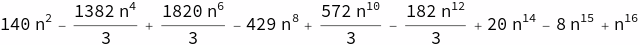
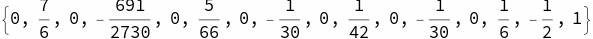
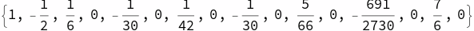

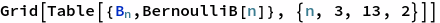
-Subscript- |
0 |
-Subscript- |
0 |
-Subscript- |
0 |
-Subscript- |
0 |
-Subscript- |
0 |
-Subscript- |
0 |
Recursive definition: \(B^+{}_n=1-\sum _{k=0}^{n-1} \left( \begin{array}{c} n \\ k \\ \end{array} \right)\frac{B_k}{(n-k+1)}\).
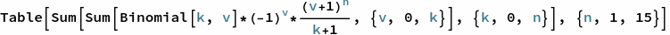
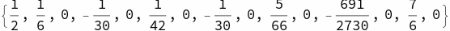
\(B_n=\delta _{n,0}-\sum _{k=0}^{n-1} \left( \begin{array}{c} n \\ k \\ \end{array} \right)\frac{B_k}{(n-k+1)}\) \(\) if i=j and 0 otherwise \(B_{2n}=(-1)^{n+1}2\frac{(2n!)}{(2\pi )^{2n}}\zeta (2n).B^+{}_n=-\text{n\)\zeta \(}(1-n) \text{for} \text{\textit{\)n\(}} \geq 1.\)
9. Stirling Numbers#
Map problem Suppose that there are 6 markers on a map, and they are all connected by exactly one edge. How many ways are there to visit each marker exactly once(starting point doesn’t matter)?
Stirling numbers(1st kind) \(\) is the number of ways to separate \(\) objects into \(\) cycles If \(\), \(\) For each new object, add it to an existing cycle or start a new one. Recurrence relation: \(\)
Stirling numbers(2nd kind) \(\)(this is different) is the number of ways to partition a set of \(\) objects into \(\) subsets If \(\) or \(\), \(\) For each new element, add it to an existing subset or a new one. Recurrence relation: \(\)
In[]:= Abs[StirlingS1[6, 1]] (*to verify our solution to the map problem*)
Out[]= 120
In[]:= Grid[Table[{n, Table[Abs[StirlingS1[n, k]], {k, 0, 10}]}, {n, 0, 10}],Alignment -> Left]
0 |
{1, 0, 0, 0, 0, 0, 0, 0, 0, 0, 0} |
1 |
{0, 1, 0, 0, 0, 0, 0, 0, 0, 0, 0} |
2 |
{0, 1, 1, 0, 0, 0, 0, 0, 0, 0, 0} |
3 |
{0, 2, 3, 1, 0, 0, 0, 0, 0, 0, 0} |
4 |
{0, 6, 11, 6, 1, 0, 0, 0, 0, 0, 0} |
5 |
{0, 24, 50, 35, 10, 1, 0, 0, 0, 0, 0} |
6 |
{0, 120, 274, 225, 85, 15, 1, 0, 0, 0, 0} |
7 |
{0, 720, 1764, 1624, 735, 175, 21, 1, 0, 0, 0} |
8 |
{0, 5040, 13068, 13132, 6769, 1960, 322, 28, 1, 0, 0} |
9 |
{0, 40320, 109584, 118124, 67284, 22449, 4536, 546, 36, 1, 0} |
10 |
{0, 362880, 1026576, 1172700, 723680, 269325, 63273, 9450, 870, 45, 1} |
In[]:= Grid[Table[{n, Table[Abs[StirlingS2[n, k]], {k, 0, 10}]}, {n, 0, 10}],Alignment -> Left]
0 |
{1, 0, 0, 0, 0, 0, 0, 0, 0, 0, 0} |
1 |
{0, 1, 0, 0, 0, 0, 0, 0, 0, 0, 0} |
2 |
{0, 1, 1, 0, 0, 0, 0, 0, 0, 0, 0} |
3 |
{0, 1, 3, 1, 0, 0, 0, 0, 0, 0, 0} |
4 |
{0, 1, 7, 6, 1, 0, 0, 0, 0, 0, 0} |
5 |
{0, 1, 15, 25, 10, 1, 0, 0, 0, 0, 0} |
6 |
{0, 1, 31, 90, 65, 15, 1, 0, 0, 0, 0} |
7 |
{0, 1, 63, 301, 350, 140, 21, 1, 0, 0, 0} |
8 |
{0, 1, 127, 966, 1701, 1050, 266, 28, 1, 0, 0} |
9 |
{0, 1, 255, 3025, 7770, 6951, 2646, 462, 36, 1, 0} |
10 |
{0, 1, 511, 9330, 34105, 42525, 22827, 5880, 750, 45, 1} |
Rising factorial: \(x^{\bar{n}}=\sum _{k=0}^n \left[ \begin{array}{c} n \\ k \\ \end{array} \right]x^k\) Falling factorial: \(x^n=\sum _{k=0}^n \left\{ \begin{array}{c} n \\ k \\ \end{array} \right\}x^{\underline{k}}\)
As \(\) grows without bounds for a fixed value of \(\): \(\left\{ \begin{array}{c} n \\ k \\ \end{array} \right\}\Longrightarrow \frac{k^n}{k!}\) As \(\) grows without bounds for a fixed value of \(\): \(\left[ \begin{array}{c} n+k \\ k \\ \end{array} \right]\Longrightarrow \frac{k^{2n}}{2^nn!}\)
Lah numbers: \(L(n,k)=\left( \begin{array}{c} n-1 \\ k-1 \\ \end{array} \right)\frac{n!}{k!}\) They represent the number of ways to partition a set with \(\) elements into \(\) linearly ordered subsets(every element of the subset is comparable). \(L(n,k)=\sum _{j=0}^n \left[ \begin{array}{c} n \\ j \\ \end{array} \right]\left\{ \begin{array}{c} j \\ k \\ \end{array} \right\}\) Bell Numbers: \(B_n=\sum _{k=0}^n \left\{ \begin{array}{c} n \\ k \\ \end{array} \right\}\)
Formulae \(\left\{ \begin{array}{c} n \\ k \\ \end{array} \right\}=\sum _{j=1}^k (-1)^{k-j}\frac{j^{n-1}}{(j-1)!(k-j)!}\) \(B_m=\sum _{k=0}^m \frac{(-1)^kk!}{k+1}\left\{ \begin{array}{c} m \\ k \\ \end{array} \right\}\)
10. Sequence Recognition#
This section is all about how to recognize a sequence based on its elements.
In[]:= {49, 89, 141, 205, 281, 369, 469, 581};
In[]:= Differences[%]
Out[]= {12, 12, 12, 12, 12, 12}
In[]:= Table[6 x^2 - 2 x + 1, {x, 3, 10}]
Out[]= {49, 89, 141, 205, 281, 369, 469, 581}
In[]:= {150.489, 394.42, 1053.04, 2831.3, 7632.6, 20596.1, 55597.6, 150102}
N[Ratios[%]]
Table[2.7 - %[[x]], {x, 1, 7}]
150.489 - 2.7^5 (*close enough to 7*)
Table[2.7^n + 7, {n, 5, 12}]
Out[]= {150.489, 394.42, 1053.04, 2831.3, 7632.6, 20596.1, 55597.6, 150102}
Out[]= {2.62092, 2.66984, 2.68869, 2.69579, 2.69844, 2.69942, 2.69979}
Out[]= {0.0790775, 0.0301557, 0.0113082, 0.00420655, 0.00156172, 0.000576323, 0.000207203}
Out[]= 6.99993
Out[]= {150.489, 394.42, 1053.04, 2831.3, 7632.6, 20596.1, 55597.6, 150102.}
In[]:= FindSequenceFunction[{2, 2, 3, 4, 6, 9, 14}, n]
FindSequenceFunction[{{0, 1}, {1, 2}, {2, 4}, {3, 8}, {4, 16}, {5, 32}},n]
Out[]= 1 + Fibonacci[n]
Out[]= 2^n
In[]:= FindGeneratingFunction[{-1, -1, -2, -3, -5, -8}, x]
FindLinearRecurrence[{5, 11, 17, 23, 29, 35}]
Clear[f]
RSolve[{f[n] == 2 f[n - 1] - f[n - 2], f[1] == 5, f[2] == 11}, f[n], n]
Clear[f]
RSolve[f[n] == f[n - 1] + f[n - 2], f[n], n]
RSolve[{f[n] == f[n - 1] + f[n - 2], f[1] == 1, f[2] == 2}, f[n], n]
RSolveValue[{f[n] == f[n - 1] + f[n - 2], f[1] == 1, f[2] == 2}, f[n],n]
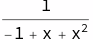
Out[]= {2, -1}
Out[]= {{f[n] -> -1 + 6 n}}
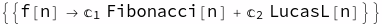
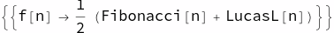
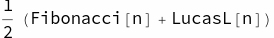
In[]:= Table[{x, 11.76 x + RandomInteger[{-5, 5}]}, {x, 0, 10}];
LinearModelFit[%, x, x]
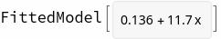
11. Generating Functions#
Generating function of \(\) is \(\).
Let \(\) be the number of ways to tile a \(\) grid with \(\) dominoes. We find that \(\), \(\), \(\), \(\), \(\). Each time we add new blocks, we can add 2 horizontal blocks or 1 vertical block. We find the recurrence relation \(\). This has the same initial values and recurrence relation as the Fibonacci sequence, so we can say that this is the Fibonacci sequence.
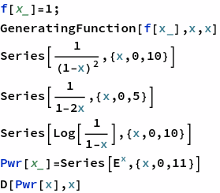
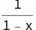
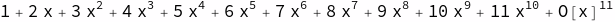
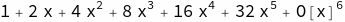
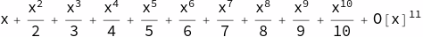
Properties of generating functions#
\(\text{\)\alpha \(F}(x)+\text{\)\beta \(G}(x)=\alpha \sum _{n=0}^{\infty } f_nx^n+\beta \sum _{n=0}^{\infty } g_nx^n\)\(=\sum _{n=0}^{\infty } f\left(\alpha f_n+\beta g_n\right) x^n\)
\(F(c x)=\sum _{n=0}^{\infty } f_n (c x)^n=\sum _{n=0}^{\infty } f_nc^nx^n\)
\(F'(x)=\sum _{n=0}^{\infty } (n+1)f_{n+1}x^n\)
\(x F'(x)=\sum _{n=0}^{\infty } n f_n x^n\)
\(\int_0^x f(t) \, dt=\sum _{n=0}^{\infty } \frac{1}{n}g_{n-1}x^n\)
\(x^mF(x)=\sum _{n=0}^{\infty } f_nx^{n+m}=\sum _{n=0}^{\infty } f_{n-m}x^n\)
Convolutions are like multiplication for generating functions.
\(F(x)G(x)=\sum _{n=0}^{\infty } \left(\sum _{k=0}^{\infty } f_kg_{n-k}\right)x^n\)
\(F(x)G(x)=\left(f_0+f_1x+f_2x^2\text{...}\right)\left(g_0+g_1x+g_2x^2\text{...}\right)\)
This is sometimes also called the Cauchy product.
\(\left[x^n\right](F(x)G(x))=\sum _{k=0}^n f_kg_{n-k}\)
12&13. Summing Finite & Infinite Series#
Summation of finite series: \(\)
In[]:= Sum[i, {i, 5}]
Out[]= 15
\(\sum _{i=0}^n c a_i=c\sum _{i=0}^n a_i\) \(\sum _{i=0}^n a_i+\sum _{i=0}^n b_i=\sum _{i=0}^n a_i+b_i\) \(\sum _{i=0}^n a_i=\sum _{n-i=0}^n a_i\) \(\sum _{i=0}^{n+1} a_i=a_0+\sum _{i=1}^{n+1} a_i=\left(\sum _{i=0}^n a_i\right)+a_{n+1}\)
Summation of arithmetic series \(S=\sum _{i=0}^n a+b i\) \(S=\frac{ (2a+b n)(n+1)}{2}\) Summation of geometric series \(S_n=\sum _{i=0}^n a b^i\) \(S_n= \frac{a\left(b^{n+1}-1\right)}{(b-1)}\)
Suppose we wanted to calculate the volume of a gable house with a slanted roof centered at its midpoint. The slope of the roof is 60 degrees and the house has a \(\) base with 10m walls.
In[]:= sumVolume = N[Sum[Sum[((10 - Abs[x])* Tan[60*(\[Pi]/180)] + 10), {y, -10, 10}], {x, -10, 10}]]
base = 20*20*10;
roof = 10*Tan[60*\[Pi]/180] * 20*10;
volume = N[base + roof]
error = Abs[sumVolume - volume]/volume * 100
Out[]= 2
But, our definition of divergence says that \(\) is convergent, but it oscillates between 0 and 1 periodically. If we manipulate this sum as if it was convergent, we find that it is \(\), which can’t be, because the value if always either 0 or 1. Therefore, we must change our definition of convergent to if the series converges to a limit as the length of the series becomes infinite. This means the sum above is divergent, as it does not approach to a limit. If a series converges absolutely if it converges and if you take the absolute value of each term is also does.
In[]:= Plot[SetPrecision[Table[20*Sinf[x, 10^n], {n, 0, 3}], MachinePrecision], {x, -30, 30}, PlotRange -> 100]
Out[]= {8000., 7864.1, 7504.1, 7468.1, 7464.5, 7464.14}
14. Convergence Tests#
Based on our earlier definition of convergence, a series is only convergent if the terms approach 0. But, if the terms approach 0, this tells us nothing, as the sum \(\) has terms that approach 0, even though it is divergent. This test is only designed for checking some divergent series.
Integral test Integral: \(\int_{n_0}^{\infty } a(x) \, dx\)
\(\) must be a natural number.
\(\) must decrease as \(\) increases.
\(\) must be positive for all \(\).
\(\) must be continuous for all \(\).
** Limit comparison** test \(\) If \(\) and \(\) is divergent, then \(\) is also divergent. Otherwise, \(\) is convergent.
** Alternating Series** Test Sum: \(\) Conditions: \(\) is non-negative for \(\), \(\) is monotone decreasing(never increasing), and \(\). If all conditions hold, then \(\) converges.
Ratio Test The ratio test states that if the absolute value of the ratio between one term and the next is larger than 1(the series is increasing), then the series will diverge. Similarly, if it is less than 1, then the series will converge. If the ratio is 1(no change between terms), then no conclusion can be made.
15. Volume of N-D sphere#
In[]:= ParametricPlot3D[Spherical[r, s, 0], {r, 2, 3}, {s, 0, 1}, ViewPoint -> Front]
ParametricPlot3D[{r, s, 0}, {r, 2, 3}, {s, 0, 1}, ViewPoint -> Top]
In[]:= Clear[x, y, z, t, r, s, u, v, r, Second, p, s, q, v, u];
x[p_, s_, q_, v_, u_] = p Sin[u] Cos[q] Cos[s];
y[p_, s_, q_, v_, u_] = p Sin[u] Cos[q] Sin[s];
z[p_, s_, q_, v_, u_] = p Sin[u] Sin[q] Cos[v];
t[p_, s_, q_, v_, u_] = p Sin[u] Sin[q] Sin[v];
g[p_, s_, q_, v_, u_] = p Cos[u];
Clear[gradx, grady, gradz, Vxyz];
gradx[p_, s_, q_, v_, u_] = {D[x[p, s, q, v, u], p], D[x[p, s, q, v, u], s], D[x[p, s, q, v, u], q], D[x[p, s, q, v, u], v], D[x[p, s, q, v, u], u]};
grady[p_, s_, q_, v_, u_] = {D[y[p, s, q, v, u], p], D[y[p, s, q, v, u], s], D[y[p, s, q, v, u], q], D[y[p, s, q, v, u], v], D[y[p, s, q, v, u], u]};
gradz[p_, s_, q_, v_, u_] = {D[z[p, s, q, v, u], p], D[z[p, s, q, v, u], s], D[z[p, s, q, v, u], q], D[z[p, s, q, v, u], v], D[z[p, s, q, v, u], u]};
gradt[p_, s_, q_, v_, u_] = {D[t[p, s, q, v, u], p], D[t[p, s, q, v, u], s], D[t[p, s, q, v, u], q], D[t[p, s, q, v, u], v], D[t[p, s, q, v, u], u]};
gradg[p_, s_, q_, v_, u_] = {D[g[p, s, q, v , u], p], D[g[p, s, q, v, u], s], D[g[p, s, q, v, u], q], D[g[p, s, q, v, u], v], D[g[p, s, q, v, u], u]};
Vxyz[p_, s_, q_, v_, u_] = Abs[Det[{gradx[p, s, q, v, u], grady[p, s, q, v, u], gradz[p, s, q, v, u], gradt[p, s, q, v, u], gradg[p, s, q, v, u]}]];
Integrate[Vxyz[p, s, q, v, u], {p, 0, r}, {s, 0, 2 Pi}, {q, 0, Pi/2}, {v, 0, Pi}, {u, 0, 2 Pi}]
In[]:= RSolveValue[{v[n] == 2 Pi v[n - 2]/n, v[2] == Pi, v[3] == 4/3 Pi}, v[n], n]
Table[%, {n, 2, 6}]

In[]:= Clear[Spherical, r, s, t, x]
Spherical[r_, s_, t_] = r * {Sin[s] Cos[t], Sin[s] Sin[t], Cos[s]};
ParametricPlot3D[Spherical[r, s, 0], {r, 0, 3}, {s, 0, 2 \[Pi]}, ViewPoint -> Front]
ParametricPlot3D[Spherical[r, s, 0], {r, 2, 3}, {s, 0, 2 \[Pi]}, ViewPoint -> Front]
ParametricPlot3D[Spherical[r, s, 0], {r, 2.8, 3}, {s, 0, 2 \[Pi]}, ViewPoint -> Front]
Out[]= {0.19, 0.271, 0.3439, 0.40951, 0.468559, 0.521703, 0.569533, 0.61258, 0.651322, 0.686189, 0.71757, 0.745813, 0.771232, 0.794109, 0.814698}
Symbolic Computation#
CAS Foundation#
Intro#
sin(pi)
pi
pi20=n(pi,digits=20);pi20
type(pi20) # pi20 is approximation
plot(sin,(-pi,pi)) # plot of sin function(x not used in plot function)
from sage.misc.citation import get_systems
get_systems('n(pi,digits=20)') # systems used to calculate approximations(real numbers)
[QQ(n(pi,digits=k)) for k in range(1,21)] # rational approximations of pi
pi10=n(pi,digits=10) # pi to 10 decimal places
delta=pi-pi10 # error of approximation
[n(delta,digits=k) for k in range(10,21)] # calculating error
Precision and Accuracy#
#
Precision: The smallest number you can add to one in a system that changes the number.
The decimal system with \(3\) digits has \(1=1.00\).
\(1.00+0.001=1.00\)
\(1.00+0.005=1.01\)
\(0.005\) is the precision of this system.
Accuracy: The relative error of an approximation
Approximation of \(\pi\): \(\frac{22}7\)
Accuracy: \(|\frac{\frac{22}7-\pi}\pi|\)
error=abs((22/7-pi)/pi) # error of 22/7 approximation for pi
n(100*error) # x100 for percentage
type(error)
n(log(error,10)) # logarithm of error(correct digits)
Getting Help#
help(n)
n?
n??
search_doc('numerical approximation') # documentation might not be available
Arbitrary Precision Floating-Point Arithmetic#
RealField?? # default precision 53 bits(cannot use digits)
def conversion(bits):
return ceil(bits*log(10,2))
R8=RealField(conversion(8));R8
Assignments#
exp(ln(2))
approx=n(e,digits=30)
error=abs(e-approx)
print(approx)
n(error,digits=40)
R = RealField(30*log(10,2))
print(tan(R(pi)))
print(R(tan(pi)))
factor(2015)
Rational Approximations#
#
QQ(n(pi,digits=15))
c=continued_fraction(sqrt(2))
ascii_art(c)
conv=list(c.convergents()[:16]);conv # first 16 convergents of sqrt(2)
error=[n(abs(sqrt(2)-convergent)) for convergent in conv]
error
QQ(n(sqrt(2),digits=6))
Assignments#
3^4^5
3^4^5==3^(4^5),3^4^5==(3^4)^5
factor(5^4^3-1)
gcd(12214,2012),xgcd(12214,2012)[0]
approx=continued_fraction(pi).convergents()[:5][4]
n(approx),n(pi)
r=(1+sqrt(5))/2 # golden ratio
num=QQ(n(r,digits=3));print(num)
n(num),n(r),n(golden_ratio) # 4 decimal places(1 skipped)
[QQ(n(r,digits=k)) for k in range(1,11)]
c=continued_fraction(sqrt(3));print(c)
ascii_art(c)
num=c.convergents()[9];print(num)
n(num),n(sqrt(3)) # 5 decimal places
Complex & Algebraic Numbers, Finite Field Extensions#
Complex Numbers#
z=CC.random_element();s(z) # random complex number
real(z),imag(z)
r=abs(z) # radius(polar coords)
t=arg(z) # argument/angle(radians)
r,t
r*cos(t),r*sin(t) # verification of polar coords
P.<x>=CC[];print(P)
factor(x^2+1)
sqrt(-1,all=True)
Algebraic Numbers#
reset() # reset all symbols to default
P.<x>=QQ[];print(P)
p=x^2-2
q=x^2+1
factor(p) # x^2-2 does not have any rational roots
Q.<sqrt2>=QQ.extension(p) # finite field extension to rational numbers(sqrt2)
Q
P1.<y>=Q[];print(P1) # using finite field extension to factor x^2-2
factor(y^2-2),factor(q)
P.<x>=RR[];print(P)
factor(x^2-2) # x^2-2 has 2 irrational roots(roots are approximated)
C.<im>=Q.extension(q) # finite field extension to rational numbers(sqrt2)
C
P2.<z>=C[];print(P2)
factor(z^2+1)
Finite Field Extensions#
reset() # alternatively, restart kernel
Z2=Integers(2);print(Z2)
P.<x>=Z2[]
factor(x^2+1)
q=x^3+x+1
factor(q)
K.<a>=Z2.extension(q);print(K)
[x for x in K]
s(matrix([[x*y for y in K] for x in K])) # every non-zero element has an inverse
1/a^2
Assignments#
def coor(rp,ip):
xc=rp*cos(ip)
yc=rp*sin(ip)
return xc+i*yc
def polar(x,y):
r=abs(x+i*y)
a=arg(x+i*y)
return r,a
lst=polar(1,-2);print(lst)
coor(lst[0],lst[1])
solve(x^3-5==0,x)
z=1+i
s(sqrt(1/z)),s(1/sqrt(z))
bool(sqrt(1/z)==1/sqrt(z))
factor(x^4+3*x+4)
coe=[1]+[0]*13
while sum(coe[:-4])!=0:
for i in range(13):
if coe[i]!=0:
coe[i]-=1
coe[i+3]+=3
coe[i+4]+=4
break
var('z')
poly=0
for i,num in enumerate(coe[-4:]): poly+=num*z^(3-i)
s(poly)
Symbols, Names, References#
Mutability vs Immutability#
var('x y')
x=y # x is immutable by default
y=3 # x is not set to 3
# x=y # we can change this by executing this line(switch order?)
x,y
eval(str(x))
var('x y')
y=3
x=y
x,y
restore('x y') # only resets variables given ?(.VS. reset('x'))
Coefficient extraction & Grouping#
var('a b c d')
p1=a+b*sqrt(2) # 1st part
p2=c+d*sqrt(2) # 2nd part
nexp=p1*p2 # ?(without expansion)
yexp=expand(p1*p2) # product(with expansion)
s(nexp,yexp)
s(yexp.coefficient(sqrt(2))) # coefficient extraction
type(yexp)
coe=yexp.coefficient(sqrt(2))
new_expr=expand(yexp-sqrt(2)*coe) # delete ungrouped part
new_expr+=sqrt(2)*coe # add grouped part
s(new_expr)
restore('a b c d')
Variable Evaluation#
s(sqrt(x^2))
bool(sqrt(x^2)==abs(x))
plot(sqrt(x^2))
s(sqrt(x^2).canonicalize_radical())
sqrt4=sqrt(SR(4),hold=True);s(sqrt4) # sage does not automatically simplify symbols(SR)
s(sqrt4.unhold())
Assignments#
var('a b c d')
solve((a+b*sqrt(2))*(c+d*sqrt(2))==1,c,d) # solve for 1/(a+b*sqrt(2))=c+d*sqrt(2)
reset([c,d])
c=-(sqrt(2)*a*x+2*b*x-1)/(sqrt(2)*b+a)
d=x
bool((a+b*sqrt(2))*(c+d*sqrt(2))==1)
reset([a,b,c,d])
var('a b')
b=a;a=2
a,b
reset([a,b])
var('a b')
a=3
a,b
Number Types & Functions#
#
ZZ,QQ,RR,CC
ZZ(2026).digits(base=16)
ZZ(2026).digits(base=2)
ZZ(ZZ(1717409).digits(base=2),base=10)
# ascii encrypter/decrypter
def encode_ascii(message,base=2): # encrypts message with ascii characters into numbers(bases 2-10,16)
tot=0
for i,char in enumerate(message[::-1]): tot+=ord(char)*(base^7)^i
if base==2: return int(tot.binary()) # debug other options
elif base==8: return int(tot.oct())
elif base==10: return tot
elif base==16: return tot.hex().upper()
elif base<10: return ZZ(ZZ(tot).digits(base=base),base=10)
else: raise ValueError('Invalid base. Valid bases: 2-10,16') # add bases 11-36
def decode_ascii(num,base=2): # decrypts message encrypted using above function(any base)
message=''
for i in range(len(str(num))//7): message+=chr(ZZ(ZZ(int(str(num)[7*i:7*(i+1)])).digits(base=10),base=base))
return message
message=input('Input message(max 18 chars): ')
base=int(input('Input base(2-10,16)'))
if len(message)>18: raise ValueError('Message is too long.')
print(encode_ascii(message,base=base),decode_ascii(encode_ascii(message,base=base)))
ZZ(ZZ().digits(base=10),base=3)
0.1.hex()
RR.prec()
R106=RealField(prec=106)
R106(0.1).hex()
num=RR.random_element()
[num.nearby_rational(max_denominator=10^k) for k in range(1,11)]
id(1)
Assignments#
QQ.random_element()
QQ(pi)
def coor(rp,ip):
xc=rp*cos(ip)
yc=rp*sin(ip)
return xc+i*yc
def polar(x,y):
r=abs(x+i*y)
a=arg(x+i*y)
return r,a
num=CC.random_element()
re=real(num)
im=imag(num)
coor(1,polar(re,im)[1])
R100=RealField(100)
x=R100(sqrt(2));print(x)
lst=[QQ(n(x,digits=k)) for k in range(1,11)];print(lst)
[n(100*abs(val-x)/x) for val in lst]
reset([x])
s(solve(x^3+8*x-3==0,x))
Evaluation & Execution#
#
Z2=Integers(2)
P.<x>=Z2[];P
q=x^2+x+1 # irreducible polynomial
factor(q)
K.<a>=Z2.extension(q);K,list(K)
for x in K: print([x+y for y in K]) # addition table
print('----------------')
for x in K: print([x*y for y in K]) # multiplication table
K.addition_table(),K.multiplication_table()
GF(4).addition_table(),GF(4).multiplication_table()
from sage.ext.fast_callable import ExpressionTreeBuilder
etb=ExpressionTreeBuilder(['x','y']);etb
x=etb.var('x')
y=etb.var('y')
p=x^3+4*x*y^3;p
L1=LabelledBinaryTree([None,None],label='v_0')
L2=LabelledBinaryTree([None,None],label='3')
L3=LabelledBinaryTree([None,None],label='4')
L4=LabelledBinaryTree([None,None],label='v_1')
N12=LabelledBinaryTree([L1,L2],label='ipow')
N31=LabelledBinaryTree([L3,L1],label='mul')
N42=LabelledBinaryTree([L4,L2],label='ipow')
N3142=LabelledBinaryTree([N31,N42],label='mul')
N123142=LabelledBinaryTree([N12,N3142],label='add')
ascii_art(N123142)
fast_callable(p).op_list()
Assignment#
from sage.ext.fast_callable import ExpressionTreeBuilder
etb=ExpressionTreeBuilder(['x','y']);etb
x=etb.var('x')
y=etb.var('y')
p=x^2*y^3-3*x^3+2*y-9;p
L1=LabelledBinaryTree([None,None],label='v_0')
L2=LabelledBinaryTree([None,None],label='2')
L3=LabelledBinaryTree([None,None],label='3')
L4=LabelledBinaryTree([None,None],label='v_1')
L5=LabelledBinaryTree([None,None],label='9')
N12=LabelledBinaryTree([L1,L2],label='ipow')
N43=LabelledBinaryTree([L4,L3],label='ipow')
N13=LabelledBinaryTree([L1,L3],label='ipow')
N24=LabelledBinaryTree([L2,L4],label='mul')
N313=LabelledBinaryTree([L3,N13],label='mul')
N1243=LabelledBinaryTree([N12,N43],label='mul')
N1243313=LabelledBinaryTree([N1243,N313],label='sub')
N124331324=LabelledBinaryTree([N1243313,N24],label='add')
N1243313245=LabelledBinaryTree([N124331324,L5],label='sub')
ascii_art(N1243313245)
from sage.ext.fast_callable import ExpressionTreeBuilder
etb=ExpressionTreeBuilder(['x','y']);etb
x=etb.var('x')
y=etb.var('y')
p=2*x^3*y^5-6*x^3+y^8;p
L1=LabelledBinaryTree([None,None],label='v_0')
L2=LabelledBinaryTree([None,None],label='2')
L3=LabelledBinaryTree([None,None],label='3')
L4=LabelledBinaryTree([None,None],label='v_1')
L5=LabelledBinaryTree([None,None],label='5')
L6=LabelledBinaryTree([None,None],label='6')
L7=LabelledBinaryTree([None,None],label='8')
N13=LabelledBinaryTree([L1,L3],label='ipow')
N45=LabelledBinaryTree([L4,L5],label='ipow')
N47=LabelledBinaryTree([L4,L7],label='ipow')
N213=LabelledBinaryTree([L2,N13],label='mul')
N613=LabelledBinaryTree([L6,N13],label='mul')
N21345=LabelledBinaryTree([N213,N45],label='mul')
N21345613=LabelledBinaryTree([N21345,N613],label='sub')
N2134561347=LabelledBinaryTree([N21345613,N47],label='add')
ascii_art(N2134561347)
Formats & Data#
Use
preparsebefore usingevalto not lose accuracy.Use
openwith'r'or'w'to read/edit the file.saveskips the intermediate step. Loading is also in one step(load).
f=lambda x:x+1
print(f)
pickled=pickle_function(f);print(pickled)
unpickled=unpickle_function(pickled);unpickled(1.5)
def f(x): return x+1
dumps(f) # pickling(without using pickle_function)
Speeding up with Vectorization and Cython#
def python_sum_symbolic(n):
return float( sum(sqrt(1-(k/n)^2) for k in range(1, n+1)) )/n
timeit('4*python_sum_symbolic(1000)')
t1 = cputime()
python_sum_symbolic(10^4)
ct1 = cputime(t1)
print('time for python_sum_symbolic :', ct1)
def python_sum(n):
from math import sqrt
return sum( sqrt(1-(k/n)^2) for k in range(1, n+1) )/n
timeit('4*python_sum(1000)')
t2 = cputime()
python_sum(10^4)
ct2 = cputime(t2)
print('time for python_sum :', ct2)
timeit('python_sum(10^4)')
print('speedup :', ct1/ct2)
def numpy_sum(n):
from numpy import sqrt, sum, arange
x = arange(n)/float(n)
return sum(sqrt(1-x**2))/n
timeit('4*numpy_sum(1000)')
t3 = cputime()
python_sum(10^6)
ct3 = cputime(t3)
print('time for python_sum :', ct3)
t4 = cputime()
numpy_sum(10^6)
ct4 = cputime(t4)
print('time for numpy_sum :', ct4)
print('speedup :', ct3/ct4)
def python_ln_symbolic(n):
return float(sum(ln(1+k/n) for k in range(1,n+1))/n)
timeit('python_ln_symbolic(1000)')
def python_ln(n):
from math import log
return float(sum(log(1+k/n) for k in range(1,n+1))/n)
timeit('python_ln(1000)')
t1=cputime()
for _ in range(10): python_ln_symbolic(1000)
ct1=cputime(t1)/10
t2=cputime()
for _ in range(100): python_ln(1000)
ct2=cputime(t2)/100
print(1000*ct1,1000*ct2) # times in milliseconds
print(f'speedup: {ct1/ct2}') # around 50 times
def numpy_ln(n):
"""
Uses numpy functions to find a unknown constant using ln/log.
[this is where the docstring goes]
"""
from numpy import log,sum,arange
return float(sum(log(1+arange(1,n+1)/n)/n))
timeit('numpy_ln(1000)'),timeit('python_ln(1000)')
t3=cputime()
for _ in range(100): python_ln(25000)
ct3=cputime(t3)/10
t4=cputime()
for _ in range(100): numpy_ln(25000)
ct4=cputime(t4)/10
print(1000*ct3,1000*ct4)
print(f'speedup: {ct3/ct4}')
Polynomials#
Univariate and Multivariate Polynomials#
#
Types of factorisation
Numeric: Defined over the complex numbers
Degree \(d\) polynomial has \(d\) complex roots and \(d\) linear factors.
Exact: Defined over the rational numbers
Number of linear factors = number of rational roots
Symbolic: Defined over the algebraic numbers
Algebraic numbers are added for nonlinear factors.
p=x^3-x^2+2*x-2
p,type(p),factor(p),p.coefficients()
q=QQ[x](p) # rational polynomial
q,type(q),q.degree(),factor(q),list(q),q.coefficients(),q.leading_coefficient(),bool(q==p),bool(type(q)==type(p))
p=PolynomialRing(QQ,x)(x^3-x^2+2*x-2)
p,type(p),p.degree(),factor(p),list(p),p.coefficients(),p.leading_coefficient()
q.roots(CC) # try RR,QQ,ZZ
factor(CC[x](q))
RR[x](x^2+2).is_irreducible()
PR.<x,y>=QQ[];PR # multivariate polynomial ring
p=PR.random_element(degree=5,terms=10);p # default order: degree lexicographic
factor(x^3-1)
pdeglex.<y,x>=PolynomialRing(QQ,order='deglex');p,pdeglex(p)
Assignments#
restore('x')
p=prod([x-k for k in range(20)]);print(p)
q=expand(p)
q.roots(),q.roots(ring=CDF)
var('k l')
x=polygen(QQ)
p=2*x^5+11*x^4+14*x^3+11*x^2+12*x
q=2*x^5+5*x^4+7*x^3+8*x^2+5*x+3
xgcd(p,q)
x=polygen(RR)
s(factor(x^2-2.25))
x=polygen(QQ)
s(factor(x^2-9/4))
restore('x')
p=2*x^5+9*x^4+16*x^3+15*x^2+12*x+9
s(p.roots())
plot(2*x^5+9*x^4+16*x^3+15*x^2+12*x+9,-2.5,0.5)
restore('x y z')
P.<x,y,z>=PolynomialRing(ZZ,order='deglex') # orders by total degree then lex
s(x^2*y*z^4+x*y^4*z^2+x^3) # this polynomial is different for all orderingsd
restore('x y z P')
P.<x,y,z>=PolynomialRing(ZZ,order='lex') # orders by first variable(s)
s(x^2*y*z^4+x*y^4*z^2+x^3)
restore('x y z P')
P.<x,y,z>=PolynomialRing(ZZ,order='degrevlex') # reverses tiebreaking method(same output as deglex for most cases)
s(x^2*y*z^4+x*y^4*z^2+x^3)
P.<x>=Integers(17)[x]
s(factor(x^3+4*x+7))
Rational Expressions and Polynomials#
#
var('x')
expr=(x^3-1)/(x-1);type(expr),expr # expressions have no auto simplification
expr.numerator(normalize=False),expr.numerator(normalize=True),expr.denominator(normalize=False),expr.denominator(normalize=True)
x=polygen(QQ)
r=(x^3-1)/(x-1);type(r),r # auto simplification with polynomials
q=QQ[x].random_element(degree=8)
SR(q).horner(x)
fr=QQ[x].random_element(degree=4)/QQ[x].random_element(degree=4);s(fr),type(fr),s(SR(fr).partial_fraction())
expr=SR(fr)
expr.numerator(normalize=False),expr.numerator(normalize=True),expr.denominator(normalize=False),expr.denominator(normalize=True)
Assignments(do)#
r=(4*x^2 + x)/(x^2 + 4)
r.operands(),r.operator()
Expression Trees#
set_random_seed(191854)
P.<x,y,z>=QQ[]
p=SR(P.random_element(degree=13,terms=3));print(p)
print(p.operands(),p.operator())
p0=p.operands()[0]
p1=p.operands()[1]
p2=p.operands()[2]
print(p0.operands(),p0.operator())
print(p1.operands(),p1.operator())
print(p2.operands(),p2.operator())
p00=p0.operands()[0]
p01=p0.operands()[1]
print(p00.operands(),p00.operator())
print(p01.operands(),p01.operator())
p11=p1.operands()[1]
p12=p1.operands()[2]
print(p11.operands(),p11.operator())
print(p12.operands(),p12.operator())
p20=p2.operands()[0]
print(p20.operands(),p20.operator())
leafx=LabelledOrderedTree([],label='x')
leafy=LabelledOrderedTree([],label='y')
leafz=LabelledOrderedTree([],label='z')
leaf2=LabelledOrderedTree([],label='2')
leaf4=LabelledOrderedTree([],label='4')
leaf5=LabelledOrderedTree([],label='5')
leaf11=LabelledOrderedTree([],label='11')
leafc0=LabelledOrderedTree([],label='-3/4')
nodey11=LabelledOrderedTree([leafy,leaf11],label='^')
nodez2=LabelledOrderedTree([leafz,leaf2],label='^')
nodey5=LabelledOrderedTree([leafy,leaf5],label='^')
nodez4=LabelledOrderedTree([leafz,leaf4],label='^')
nodex2=LabelledOrderedTree([leafx,leaf2],label='^')
term0=LabelledOrderedTree([nodey11,nodez2],label='*')
term1=LabelledOrderedTree([leafx,nodey5,nodez4,leafc0],label='*')
term2=LabelledOrderedTree([nodex2,leafy,leafz,leaf2],label='*')
final=LabelledOrderedTree([term0,term1,term2],label='+')
ascii_art(final)
f=fast_callable(p,vars=['x','y','z']) # using fast callable, we can also create binary expression trees
timeit('f(1,2,3)'),timeit('p(x=1,y=2,z=3)') # speedup: ~15
f.op_list()
Symbolic Expressions#
flowchart
fs[Factorisation] --> rf[Root Finding]
rf --> av[Algebraic View]
rf --> nv[Numeric View]
rf --> ev[Exact View]
rf --> sv[Symbolic View]
fs --> av
nv --> cn[Complex Numbers]
ev --> irff[Integers, Rationals, Finite Fields]
tc[Type Casting] --> nv
tc --> ev
tc --> sv
sv --> en[Extended Numbers]
ex[Expansion] --> rf
ex --> fs
var('x y')
p=(x+y)^2+1/(x+y)^2;s(p) # we are trying to simplify without expanding the numerator
s(factor(p)) # factor() expands the numerator
var('z')
q=p.subs({x+y:z});s(q) # .subs() directly substitutes
s(factor(q))
new_p=q(z=x+y);s(new_p) # this syntax also works for single variables
bool(new_p==p)


reset('x y p q')
var('a b c')
p=a+2*b+3*c;s(p)
q=p.subs({a:b,b:c,c:a});s(q) # p(a=b,b=c,c=a) also works
r=p(a=b)(b=c)(c=a);s(r) # using .subs() 3 times also works
reset('a b c p q r')
var('a b c x')
p=(a+b+c)*(x^2+x+1);s(p) # no expansion due to expression swell
s(ZZ[a,b,c][x](p)) # we could have also done substitution
expand((x+y)^2+1/(x+y)^2)
Normalizing Expressions#
We can determine whether expressions are the same by putting them in normal form.
Consider \(p=x(1+y)\) and \(q=x+xy\). These are mathematically equivalent but are different expressions.
p=x*(1+y)
q=x+x*y
print(p.operator(),q.operator()) # p and q are different expressions
d=p-q;s(d) # no expansion due to possibility of expression swell
s(expand(d)) # force expansion
set_random_seed(20260510)
P.<x,y>=PolynomialRing(ZZ,order='lex')
p=P.random_element();s(p)
Q.<x,y>=PolynomialRing(ZZ,order='deglex')
q=Q(p);s(q) # expression is different from p
s(ZZ[x,y](p),ZZ[x,y](q))
s(integrate((x^2+2*x+1+(3*x+1)*sqrt(x+ln(x)))/(x*sqrt(x+ln(x))*(x+sqrt(x+ln(x)))),x))
integrate??
Review(1-15)#
type(1.0+10^-32),type(1+10^-32)
The difference between 1.0+10^-32 and 1+10^-32 is 1.0 means it is a real number and 1 does not specify which makes the second a rational.
gelfond_schneider=2^sqrt(2)
rat_apr=QQ(n(gelfond_schneider,digits=5));print(rat_apr)
# definitions={} # run to initialize
def whatis(term,definition=None):
if definition!=None: definitions.update({term:definition})
elif term in definitions: return definitions[term]
else: return f'call again with the definition for {term}'
whatis('hihihihihihihihihihi')
def python_sum(n):
from math import cos,pi
return float(pi/n*sum(cos(-pi/2+i*pi/n) for i in range(1,n)))
timeit('python_sum(1000)')
def numpy_sum(n):
from numpy import arange,cos,pi
return float(pi/n*sum(cos(-pi/2+i*pi/arange(1,n))))
timeit('numpy_sum(1000)')
reset('x')
P.<x>=Integers(29)[x]
factor(25*x^3+12*x^2+26*x+4)
var('x')
s(factor(x^4+x^2+1))
P.<x>=Integers(2)[x]
s(factor(x^4+x^2+1))
var('x')
p=(x^2-1)/(x-1)
s(p)
s(p.numerator(normalize=True)/p.denominator(normalize=True))
Calculus#
Defining Mathematical Functions#
var('x y')
f=exp(-x^2-y^2)*(sin(x)+cos(x))
plot3d(f,[-2,2],[-2,2],adaptive=True) # adaptive creates texture and colour
s(integral(f,x))
def func(x,y): return f(x=x,y=y)
type(func)
plot(unit_step)
plot(1/(1+exp(-32*x)))
kronecker_delta(0,0)
f=piecewise([[(-infinity,0),0],[(0,infinity),1]])
f(1)
Recursion & Memoization#
from functools import cache # use dictionary/list indexing memoization for large inputs
import sys
sys.setrecursionlimit(10**8)
@cache
def fib(n): # for memoization, run first 2 lines
if 0<=n<=1: return n
return fib(n-1)+fib(n-2)
import time
loops=10**6
size=3000
start=time.time()
for _ in range(loops): fib(size)
time_took=(time.time()-start)/loops
print(f'Time took for `fib({size})`({loops} loops): {round(time_took*10**9,3)}ns')
import sys
sys.setrecursionlimit(10^8)
memo={0:0,1:1}
def memo_fib(n):
if n in memo: return memo[n]
ans=memo_fib(n-1)+memo_fib(n-2)
memo.update({n:ans})
return ans
timeit('num=memo_fib(300000)')
# sierpinski's fractal from pascal triangle
def line(num):
ans=''
for i in range(num+1):
if binomial(num,i)%2: ans+=' '
else: ans+='@ '
return ans
size=2^4
for num in range(size): print(' '*(size-num-1)+line(num))
L0=LabelledBinaryTree([],'F(0)')
L1=LabelledBinaryTree([],'F(1)')
L2=LabelledBinaryTree([L0,L1],'F(2)')
L3=LabelledBinaryTree([L1,L2],'F(3)')
L4=LabelledBinaryTree([L2,L3],'F(4)')
L5=LabelledBinaryTree([L3,L4],'F(5)')
L6=LabelledBinaryTree([L4,L5],'F(6)')
L7=LabelledBinaryTree([L5,L6],'F(7)')
L8=LabelledBinaryTree([L6,L7],'F(8)')
L9=LabelledBinaryTree([L7,L8],'F(9)')
ascii_art(L9)
[chebyshev_T(k,x) for k in range(10)]
Computing with Functions#
size=5
lst=[var('x%d'%k) for k in range(size)];print(lst[1:])
def f(i): return lst[i]^3+sum([(i+j+1)*lst[j] for j in range(1,size) if i!=j])-1
for i in range(1,5): s(f(i))
var('t')
x(t)=120/45*t
y(x)=x*(120-x)
f(t)=y(x=x(x=t))
plot(f,0,120,aspect_ratio=1/50)
set_random_seed(193935)
m=8
size=5
C=[QQ.random_element() for _ in range(m)];print(C)
E=[tuple([abs(ZZ.random_element()) for _ in range(size)]) for _ in range(m)];E
# i test exact and approximate newton-raphson methods
def exact_newton_raphson(f,prev,steps=1):
ans=f(x=prev)
for _ in range(steps):
ans=prev-f(x=prev)/diff(f,x)(x=prev)
prev=ans
return ans
def approx_newton_raphson(f,prev,steps=1,digits=16):
ans=n(f(x=prev),digits=digits+10)
for _ in range(steps):
ans=n(prev-f(x=prev)/diff(f,x)(x=prev),digits=digits+10)
prev=ans
return ans
d=10000
n(sqrt(2),digits=d),approx_newton_raphson(x^2-2,2,steps=50,digits=d) # digit accuracy doubles each step for x^2
Symbolic, Numeric, Implicit Differentiation#
Solutions |
category |
depends |
error |
|---|---|---|---|
Analytical/Closed-form |
Exact |
Symbolic computation |
error-free |
Series |
Approx. |
Symbolic + Numerical Truncation |
controlled error |
Numerical |
Approx. |
Numerical computation |
rounding & discretization error |
Asymptotic/Perturbation |
Approx. |
Symbolic computation |
asymptotic error |
Semi-analytical |
Approx + Exact |
Symbolic + Numerical |
partly error-free |
f=sin(2*pi*x)
[diff(f,x,k) for k in range(1,5)]
P.<x,y>=QQ[]
q=P.random_element(degree=5,terms=8);print(q,type(q))
f=SR(q);print(f,type(f)) # this is an expression
func(x,y)=f;print(func,type(func)) # this is a function
print(func(1,1)) # functions have direct input based on variable order
print(f(x=1,y=1)) # expression require input with variables
try: print(f(1,1)) # TypeError without variables
except TypeError as error: print(f'TypeError: {error}')
func_no_var(z)=z # functions define variables when needed
reset('z')
try: f_no_var=z # expressions require fixed variables
except NameError as error: print(f'NameError: {error}')
from scipy.differentiate import derivative as numdiff
f(x)=sin(2*pi*x)
numdiff(f,1.0,dx=1)
var('x y')
circle=x^2+y^2-1
circ=implicit_plot(circle,(x,-1.2,1.2),(y,-1.2,1.2),figsize=4);show(circ)
Y(x)=function('Y')(x)
dy=diff(Y,x);print(dy)
Ycircle=circle(y=Y)
dc=diff(Ycircle,x);print(dc)
sol=solve(dc,dy);print(sol)
slope=sol[0].rhs()
set_random_seed()
angle=RR(pi)*RR.random_element();print(angle)
a,b=cos(angle),sin(angle);print(a,b)
print(-a/b)
valslope=slope.subs({Y(x):b}).subs({x:a});print(valslope)
plotpoint=point((a,b),color='red',size=50)
tangent=y-b-valslope*(x-a)
print(tangent)
show(plotpoint+circ+implicit_plot(tangent,[x,-1.5,1.5],[y,-1.5,1.5]))
other_tangent=b+valslope*(x-a);print(other_tangent)
show(plotpoint+circ+plot(other_tangent,xmin=-1.5,xmax=1.5,ymin=-1.5,ymax=1.5))
Integration and Summation#
Typical definite integrals(continuous) do not work at singularities(a type of discontinuity).
Infinite summations(discrete): \(\sum_{k=1}^\infty\frac1{k^2}=\frac16\pi^2\)
try: s(integral(1/x^2,x,-1,1)) # by using the standard method, this integral is convergent(wrong)
except Exception as error: print('error:',error)
s(sum(1/x^2,x,1,oo))
f=cos(x);print('f:',f)
deri=diff(f,x);print('derivative:',deri)
integr=integral(f,x);print('integral:',integr)
print(bool(diff(integral(f,x),x)==f)) # fundamental theorem of calculus
print(bool(integral(diff(f,x),x)==f)) # invertible
print(integral(cos(exp(-x^2)),x)) # no symbolic antiderivative/integral
var('x k')
S=sum(x,x,1,k,hold=True)
s(S,'=',S.unhold());s(factor(S.unhold()))
var('x k r')
S=sum(x^r,x,1,k,hold=True)
s(S,'=',S.unhold());s(factor(S.unhold())) # S.unhold() should use geometric series formula
Series and Approximations#
size=int(input())
time=cputime()
ra=size^0.77
tcos=taylor(cos(x),x,0,size)
show(plot(tcos,xmin=-ra,xmax=ra,figsize=4)+plot(cos,xmin=-ra,xmax=ra,figsize=4))
pcos=tcos.power_series(QQ);print(pcos) # put taylor series in QQ
icos=pcos.inverse();print(icos) # inverse of power series
print(pcos*icos,icos*pcos) # test for inverse
print(f'time took: {round(cputime(time),10)}')
taylor(function('f')(x),x,0,4) # taylor series formula
g = x/(1-x-x^2) # fibonacci generating function(expanded using taylor series)
tg = taylor(g, x, 0, 10)
print(tg)
print(tg.coefficients())
var('x y a b')
circle=x^2+y^2-1
tc=taylor(circle,(x,a),(y,b),1);tc
angle=RR.random_element()*RR(pi);print(f'angle: {angle}')
# angle=pi/2
A,B=cos(angle),sin(angle);print(f'x: {A}, y: {B}')
tangent=tc(a=A,b=B);print(f'tangent: {tangent} = 0')
try: slope=-A/B
except: slope=infinity
print(f'slope: {slope}')
pp=point((A,B),size=25,color='red')
tangent_plot=implicit_plot(tangent,xrange=[-1.5,1.5],yrange=[-1.5,1.5],figsize=3,color='blue')
circ_plot=implicit_plot(circle,xrange=[-1.2,1.2],yrange=[-1.2,1.2],figsize=3,color='green')
show(circ_plot+pp+tangent_plot)
size=9.5
P.<z>=PowerSeriesRing(QQ);print(P)
ts=taylor(sin(x),x,0,20);print(f'taylor series for sin: {ts}') # 20 is quite chunky
pd=sin(z).pade(7,7);print(f'pade approximation for sin: {pd}') # much better approximation globally
show(plot(sin(x),xmin=-size,xmax=size)+plot(pd,xmin=-size,xmax=size,color='red')+plot(ts,xmin=-size,xmax=size,color='green',figsize=4))
Symbolic-Numeric Computing#
Interval arithmetic
RIF(Real interval field): Field of real numbers that tracks floating-point error and returns interval instead of exact value.
prec=for different precision. Higher precision -> less error.
CIF(Complex interval field): Same as RIF except with complex numbers.
d=int(input()) # few values work
formula(x,y)=(QQ(333.75)-x^2)*y^6+x^2*(11*x^2*y^2-121*y^4-2)+QQ(5.5)*y^8+x/(2*y)
exact=formula(77617,33096)
print(f'exact answer: {exact}')
numerical=n(exact,digits=16)
print(f'numerical approx: {numerical}')
num_prec=formula(n(77617,digits=d), n(33096,digits=d))
print(f'approx with limited prec: {n(num_prec,digits=16)}')
num=formula(RIF(77617),RIF(33096));print(num,type(num)) # RIF(real interval field) gives error with e22 magnitude of error
bound=RIF(num);print(bound.str(style='brackets')) # bracket notation
print(bound.diameter()) # .diameter() is range
error=int(bound.upper())-int(bound.lower());error
R100=RealIntervalField(prec=100);print(R100) # extra precision for less error
num=formula(R100(77617),R100(33096))
bound=RIF(num);print(bound.str(style='brackets'))
print(bound.diameter())
error=int(bound.upper())-int(bound.lower());error
R200=RealIntervalField(prec=200);print(R200)
num=formula(R200(77617),R200(33096))
bound=RIF(num);print(bound.str(style='brackets'))
print(bound.diameter())
error=int(bound.upper())-int(bound.lower());error # no error now
P.<x>=PolynomialRing(QQbar) # factor with roots in complex ring
q=x^3+x+1
factor(q) # ? means uncertainty
q.roots(CIF)
R=q.roots(ComplexIntervalField(prec=200));R
prod([(x-r) for (r,m) in R]) # almost x^3+x+1
var('x y z')
target=x^2+2*x*y*z-z^2
constraint=x^2+y^2+z^2-1==0
show(implicit_plot3d(target-1,(x,-2,2),(y,-2,2),(z,-2,2),color='red')+
implicit_plot3d(constraint.lhs(),(x,-2,2),(y,-2,2),(z,-2,2),color='blue'))
# export html and open in browser
# gradients of surfaces
ft(x,y,z)=target;print(ft)
gt=diff(ft);print(gt)
fc(x,y,z)=constraint.lhs();print(fc)
gc=diff(fc);print(gc)
var('w')
eqs=[gt(x,y,z)[k]-w*gc(x,y,z)[k] for k in range(3)];print(eqs)
eqs.append(constraint.lhs());print(eqs)
sols=solve(eqs,[x,y,z,w]);sols
L=[[e.rhs() for e in sol] for sol in sols];L
T=[e[:3] for e in L];print(T)
[ft(x,y,z) for (x,y,z) in T]
Plotting and Solving Equations#
2D Plots#
show(plot(exp(-x^2)*sin(pi*x^3),(x,-2,2),color='blue',figsize=4)+
plot(exp(-x^2),(x,-2,2),color='red')+
plot(-exp(-x^2),(x,-2,2),color='green')) # sinusoidal curve with bounds
plot(1/(x^3-x),(x,-2,2),ymin=-5,ymax=5,detect_poles='show',figsize=4) # handling singularties & asymptotes
watt=(x^2+y^2)^3+5.12*(x^2+y^2)^2-5.15*(x^4-y^4)-14.7456*y^2
show(implicit_plot(watt==0,xrange=[-1.5,1.5],yrange=[-1.5,1.5],figsize=4))
x, y = var('x,y')
show(plot3d(cos(x*y), (x, -pi, pi), (y, -pi, pi)),viewer='tachyon',figsize=3)
var('r t')
polar=watt(x=r*cos(t),y=r*sin(t));print(polar)
polar=polar.trig_simplify();print(polar)
sols=solve(polar,r);print(sols) # we see that this degree 6 function has a double root at the origin(invisible)
polar_plot(sols[0].rhs(),(t,0,2*pi),figsize=4,color='forestgreen',axes=False) # 0, 1 work, 2, 3 are complex, 4 is singularity
var('r t')
polar_plot(r^2,(t,0,2*pi),figsize=4) # polar coordinates
var('t')
parametric_plot((sin(2*t),sin(3*t)),(t,0,2*pi),figsize=4) # lissajous curve in parametric form
Animating Plots(come back later)#
f(k)=exp(-x^2)*sin(2*k*pi*x)
one=plot(f(1),(x,-2,2),figsize=3)
two=plot(f(2),(x,-2,2),figsize=3)
show(animate([one,two]))
frames=[plot(f(i),(x,-2,2),figsize=5) for i in range(1,11)]
show(animate(frames),iterations=5,delay=1)
Solving Equations#
Problem of Apollonius: Find a circle that touches 3 fixed circles.
There are different cases with different solutions(can be small in the middle or large with 3 circles in it).
# One circle(inside or outside for unit circle)
unitcircle=circle((0,0),1)
angle=RR(pi)*RR.random_element()
if randint(1,2)==1: radius=abs(RR.random_element())
else: radius=abs(RR.random_element())+1
rpt=((1-radius)*cos(angle),abs(1-radius)*sin(angle));print(rpt)
ppt=point(rpt,color='red',size=radius*70)
tangent=circle(rpt,radius,color='green')
show(unitcircle+ppt+tangent,figsize=2,axes=False)
# Two circles(inside and outside for unit circle)
unitcircle=circle((0,0),1)
angle=RR(pi)*RR.random_element()
radius=abs(RR.random_element())
rpt=((1-radius)*cos(angle),abs(1-radius)*sin(angle));print(rpt)
ppt=point(rpt,color='red',size=radius*70)
inner=circle(rpt,radius,color='green')
rpt2=((1+radius)*cos(angle),abs(1+radius)*sin(angle))
ppt2=point(rpt2,color='red',size=radius*70)
outer=circle(rpt2,radius+2,color='green')
show(unitcircle+ppt+ppt2+inner+outer,figsize=2,axes=False)
# 3 circles(1 inner+2 outer)
unitcircle=circle((0,0),1)
angle=RR(pi)*RR.random_element()
radius=abs(RR.random_element())
rpt=((1-radius)*cos(angle),abs(1-radius)*sin(angle));print(rpt)
ppt=point(rpt,color='red',size=radius*70)
inner=circle(rpt,radius,color='green')
rpt2=((1+radius)*cos(angle),abs(1+radius)*sin(angle))
ppt2=point(rpt2,color='red',size=radius*70)
outer1=circle(rpt2,radius,color='green')
outer2=circle(rpt2,radius+2,color='green')
show(unitcircle+ppt+ppt2+inner+outer1+outer2,figsize=2,axes=False)
c1x,c1y,r1=0,0,1
c2x,c2y,r2=2,0,2/3
c3x,c3y,r3=1,1,1/3
var('x y r')
c1=(x-c1x)^2+(y-c1y)^2-r1^2
c2=(x-c2x)^2+(y-c2y)^2-r2^2
c3=(x-c3x)^2+(y-c3y)^2-r3^2
p1=implicit_plot(c1,(x,-1.2,3),(y,-1.2,3))
p2=implicit_plot(c2,(x,-1.2,3),(y,-1.2,3))
p3=implicit_plot(c3,(x,-1.2,3),(y,-1.2,3))
show(p1+p2+p3,figsize=5)
e1=(x-c1x)^2+(y-c1y)^2-(r-r1)^2 # edit r-r1 to r+r1 to show different pairs
e2=(x-c2x)^2+(y-c2y)^2-(r-r2)^2
e3=(x-c3x)^2+(y-c3y)^2-(r-r3)^2
eqs=[e1,e2,e3]
sols=solve(eqs,solution_dict=True)
tc1x=sols[0][x]
tc1y=sols[0][y]
tc1r=sols[0][r]
tc2x=sols[1][x]
tc2y=sols[1][y]
tc2r=sols[1][r]
ptc1=circle((tc1x,tc1y),tc1r,color='red')
ptc2=circle((tc2x,tc2y),tc2r,color='green')
show(p1+p2+p3+ptc1+ptc2)
QQbar: Algebraic field for complex numbers(extension to rationals)
Ideals: Special subset of ring(e.g. even numbers for integers)
Closure: Performing 1 operation on a element creates another element in subset.
Absorption: Performing the other operation on any element in ring creates element in subset.
P.<x,y,r>=PolynomialRing(QQ,order='lex');print(P)
Q=[P(e) for e in eqs]
J=Ideal(Q);print(J) # ignore the long text about boring stuff
G=J.groebner_basis();s(G) # not as boring
J.variety(QQbar)
Linear Algebra(merge with previous)#
Matrix Factorization#
m=matrix([[3,-1,2],
[6,3,1],
[-9,-1,11]])
m.LU()
A=random_matrix(QQ,3,num_bound=100,den_bound=100); print(A,'\n')
b=random_vector(QQ,3,num_bound=100,den_bound=100); print(b,'\n')
x=A.solve_right(b);print(x)
h=lambda i,j:1/((i+1)+(j+1)); print(h(0,0),h(i,j))
H=Matrix(QQ,5,h);print(H)
P,L,U=A.LU();s(P,L,U)
s(P*L*U,A)
s(P*A)
s(L*U)
rows=A.rows();print(rows)
nbrs=[[val for val in row] for row in rows];s(matrix(nbrs))
C=Matrix(CDF,3,nbrs);s(C)
Q,R=C.QR();s(Q,R)
s(Q*R,C)
s(Q.transpose()*Q) # Q is orthogonal(ignore the floating point errors)
s(A.eigenvalues())
D,V=A.right_eigenmatrix();s(D,V)
s(V*D,A*V)
U,S,V=C.SVD();s(U,S,V)
s(U.transpose()*U) # both u and v are orthogonal(again, ignore floating point errors)
s(V.transpose()*V)
A=random_matrix(ZZ,3,x=100,y=999);s(A)
H,U=A.hermite_form(transformation=True);s(H,U)
print(det(U)) # U is invertible
s(U*A,H)
D,U,V=A.smith_form();s(D,U,V)
print(det(A))
s(U*A*V) # note that this is based on the determinant above
P.<x,y>=PolynomialRing(QQ);print(P)
p=P.random_element(degree=2,terms=5);s(p)
q=P.random_element(degree=2,terms=5);s(q)
s(p.resultant(q,x),q.resultant(p,x))
S=q.sylvester_matrix(p,x);s(S)
s(det(S)) # note that the determinant of the sylvester matrix is the same as the resultants
Multivariate Polynomial Ring in x, y over Rational Field
Unified under Groebner basis:
Polynomial algebra (e.g., F[x] over a field F), linear algebra (vector spaces and matrices over F), and group theory (especially via representations or composition) share many parallel concepts.
Matrices can be seen as “linearized polynomials” (via companion matrices or the algebra of linear operators), and groups act linearly on vector spaces.
Matrices have rough analogs in polynomial factorization (roots, division algorithm, partial fractions, etc.) and group decompositions (e.g., composition series, semidirect products, Sylow theory)
Concept |
Polynomial Algebra (F[x]) |
Linear Algebra (Vector Spaces/Matrices) |
Abstract Algebra (Groups/Modules) |
|---|---|---|---|
Basic Object |
Polynomials p(x) ∈ F[x] (ring) |
Vectors in V (module over F); Matrices as linear maps End(V) |
Groups G (or modules over rings); Group algebra F[G] |
“”Elements”” / Generators |
Coefficients or roots; Monomials as basis |
Vectors; Basis (standard or eigenbasis) |
Group elements; Generators (presentations) |
Addition |
Polynomial addition |
Vector addition / Matrix addition |
Group operation (often non-abelian); Abelian case like ℤ-modules |
Multiplication |
Polynomial multiplication (convolution of coeffs) |
Matrix multiplication / Composition of linear maps |
Group multiplication; Convolution in group algebra |
Division / Reduction |
Division algorithm (Euclidean domain) |
Gaussian elimination; Row reduction |
Cosets, quotients G/H; Normal series |
Factorization / Decomposition (General) |
Unique factorization into irreducibles (if UFD); Finding roots |
Matrix factorizations (see below) |
Composition series (Jordan-Hölder); Semidirect products |
CR Factorization |
Rank-1 terms or basic span (e.g., partial sums) |
A = C R (independent columns C × row space basis R) |
Generating set × relations (presentations) |
LU Factorization |
Synthetic division; Long division |
A = L U (lower/upper triangular; Gaussian elim.) |
Filtrations or flags; Triangularizable actions |
QR Factorization |
Gram-Schmidt orthogonalization on powers |
A = Q R (orthogonal Q × upper triangular R) |
Orthogonalization in representations; Gram-Schmidt on orbits |
Eigen / Spectral |
Root factorization p(x) = c ∏ (x - λ_i) |
Diagonalization A = P D P⁻¹ (eigenvalues on diagonal) |
Simultaneous triangularization; Characters / Representations |
SVD |
Singular values (via companion matrix) or polar decomp. analogs |
A = U Σ Vᵀ (singular values; best low-rank approx.) |
Polar decomposition in unitary reps; Invariant subspaces |
Dimension / Degree |
Degree of polynomial |
Dimension of vector space / Matrix rank |
Order of group; Composition length |
Kernel / Roots |
Roots of p(x) = 0 |
Kernel of linear map (nullspace) |
Kernel of homomorphism |
Quotient |
F[x] / (p(x)) ≅ companion matrix algebra |
Quotient space V / W |
Quotient group G/N |
Isomorphism Theorem |
Chinese Remainder Theorem for coprime factors |
First Iso Theorem: V / ker T ≅ im T |
First Iso Theorem for groups/modules |
Basis / Generating Set |
Monomial basis {1, x, x², …} |
Basis of vector space |
Generating set; Free groups |
Invariant Substructure |
Invariant factors; Multiplicity of roots |
Invariant subspaces; Generalized eigenspaces |
Normal subgroups; Subnormal series |
Representation Link |
Companion matrix of p(x) linearizes multiplication |
Linear operators on V |
Group representations ρ: G → GL(V) |
Permutation Puzzles - Group#
# AKA Startup
def sg(a):
return SymmetricGroup(a)
def ag(a):
return AlternatingGroup(a)
def perm(a):
return Permutation(a)
def cpg(a):
return CyclicPermutationGroup(a)
def dg(a):
return DihedralGroup(a)
def pg(a):
return PermutationGroup(a)
def comm(a,b):
return a*b*a.inverse()*b.inverse()
def cg(a):
return CubeGroup()(a)
Note: Lecture numbers are based on number of lectures available because some are lengthy.
Foundations#
flowchart
Group --> sub[Subgroup]
Set -->|operation| Group
Group --> sg[Symmetric Group]
sg -->|element| perm[Permutation]
perm --> Cycle
Set --> perm
perm --> Commutator
perm --> Conjugate
perm --> Parity
Group --> ag[Alternating Group]
Group --> cg[Cyclic Group]
ag --> Parity
cg --> Cycle
perm --> Inverse
Inverse --> Commutator
Inverse --> Conjugate
sg -->|subset| ag
Group --> gen[Generator]
gen --> cg
sub --> gen
flowchart
Relation --> |Equivalence relation| ec[Equivalence class]
ec --> rep[Representative]
ec --> Coset
Coset --> l[Left coset]
Coset --> r[Right coset]
Group --> sub[Subgroup]
sub --> Coset
Coset --> rep
Coset --> Partition
Set -->|operation| Group
Set --> Relation
Set --> Subset
Subset --> Partition
Group --> sg[Symmetric Group]
sg -->|element| perm[Permutation]
Set --> perm
perm --> Commutator
perm --> Conjugate
perm --> Inverse
Inverse --> Commutator
Inverse --> Conjugate
Set --> Coset
Group --> gen[Generator]
Puzzles#
# Swap Puzzle
G=SymmetricGroup(8)
current=G.random_element()
target=G(())
count=0
while current!=target:
print(perm(current))
try:
i,j=input('Enter two numbers: ').split()
i,j=int(i),int(j)
swap=G("({},{})".format(i,j))
current=swap*current
count+=1
except:
pass
print('DONE',count)
# 15 Puzzle(needs improvement)
def m15(current):
lst=list(perm(current))
s(matrix([lst[:4],lst[4:8],lst[8:12],lst[12:]]))
current=sg(16).random_element()
target=sg(16)()
count=0
while current!=target:
m15(current)
try:
dir=input('Enter direction: ') # WASD 4 directions
i=list(perm(current)).index(16)+1
if dir=='w':
j=i+4
elif dir=='a':
j=i+1
elif dir=='s':
j=i-4
elif dir=='d':
j=i-1
else:
continue
swap=sg(16)('({},{})'.format(i,j))
current=swap*current
count+=1
except:
pass
print('DONE',count)
Cube Moves#
CubeGroup().display2d('')
perm(CubeGroup()('R U R-1'))[42]
moves=['R','U','F','L','B','D','R-1','U-1','F-1','L-1','B-1','D-1']
for move in moves:
for move1 in moves:
for move2 in moves:
if move==move1==move2:
continue
elif move==move1:
p=perm(cg(move+'2 '+move2))
elif move1==move2:
p=perm(cg(move+' '+move1+'2'))
else:
p=perm(cg(move+' '+move1+' '+move2))
if p[41]==42 and p[43]==44 and p[44]==45 and p[46]==47 and p[42]==25:
print(move+move1+move2)
Combinatorics#
Identity: \(R_0\)
Inverse(of \(a\))
Reflections: \(a\)
Rotations: \(R(360-a)\)
Associativity: because we can represent them using permutations
# Poker
shape=[1,2,3,4]
number=[1,2,3,4,5,6,7,8,9,10,11,12,13]
cards=list(cartesian_product([shape,number]))
def st(i,j,k):
so=sorted([i,j,k])
return so[2]==so[1]+1==so[0]+2
leopard=0
flush=0
gf=0
straight=0
pair=0
ran=0
for i in cards:
for j in cards:
for k in cards:
if i!=j!=k:
stra=st(i[1],j[1],k[1])
if i[1]==j[1]==k[1]:
leopard+=1
elif i[0]==j[0]==k[0] and stra:
flush+=1
elif i[0]==j[0]==k[0]:
gf+=1
elif stra:
straight+=1
elif i[1]==j[1] or i[1]==k[1] or j[1]==k[1]:
pair+=1
else:
ran+=1
leopard,flush,gf,straight,pair,ran
# Booth
def booth(y10,y20,mo):
if mo==0:
return booth(y10-1,y20,mo+1)
elif y10==0:
return mo>=y20
return booth(y10-1,y20,mo+1)+booth(y10,y20-1,mo-1)
booth(4,4,0)
Generating function: Read off coefficients to find sequence
# Dice
def gen_dice(m):
return expand((x+x^2+x^3+x^4+x^5+x^6)^m)
s(gen_dice(2))
Lecture 0 - Course Intro#
This course deals with permutation puzzles.
Swap puzzle(row of 8)
Oval track puzzle
Hungarian rings
Rubik’s cube(2x2x2 & 3x3x3)
Why study puzzles?
Puzzles are the normal persons experience with abstraction and the main idea is that maths deals with abstract objects which we assign to model real world things.
So to get a good feel of how these abstract objects work, we need to get a physical one and just play with them.
These puzzles are physical manifestations of abstract objects and they’re often built on mathematical ideas and any common person can just go there and pick it up and play with it.
In this course we learn abstract maths from these puzzles we wouldn’t have learned in our undergraduate experience but because these are physical manifestations, these give us a good opportunity to learn this.
Puzzles also help illustrate and reinforce the fundamental technique of problem solving which is to find a simpler problem you know how to solve if you don’t know how to solve a problem.
The main goals of the course includes group theory, theory of permutations, CAS and problem solving.
Group theory
Group theory is really just the study of symmetry.
Symmetry is anything that stays the same under some transformation.
Physics
Conservation laws of physics are related to the symmetry of physical laws under transformations.
Modern particle physics would not exist without group theory and in fact, many particles were predicted using group theory before they were found experimentally.
Mathematics
Group theory is closely linked to symmetry in geometry.
Classical problems in algebra have been resolved in group theory(e.g. no general solution to quintic equation).
Everyday life
The maths of public-key cryptography uses group theory.
This is used in online purchases.
IDs are all around us
ISBN for a book
VIN(Vehicle ID No.) for your car
Barcode for packages
Credit card numbers
For fun
With group theory we can understand puzzles.
Group theory solved the 15-puzzle problem in the 1880’s.
Sci-fi shows feature problems requiring group theory.
Lecture 1 - Permutation Puzzles Intro#
# Swap Puzzle
G=SymmetricGroup(8)
current=G.random_element()
target=G(())
count=0
while current!=target:
print(current)
try:
i,j=input('Enter two numbers: ').split()
i,j=int(i),int(j)
swap=G("({},{})".format(i,j))
current=swap*current # Group theory way not coding way as below
count+=1
except:
pass
print('DONE')
# Swap Puzzle
lst=[1,2,3,4,5,6,7,8]
shuffle(lst)
lst=[1,6,4,2,3,5]
count=0
while lst!=list(range(1,7)):
print(lst)
try:
i,j=input('Enter two numbers: ').split()
i,j=int(i)-1,int(j)-1
num=lst[i]
lst[i]=lst[j]
lst[j]=num
count+=1
except:
pass
print('DONE!')
print(count)
Two very important permutation identities
Every permutation can be restored by swapping two things at a time.
Even permutations always take an even amount of moves and odd permutations always take an odd amount of moves.
[add notes about permutations puzzles]
Lecture 2 - Set theory#
Basic set theory
A set is a well defined collection of objects.
The objects in the set are called elements of the set.
Convention: Sets are denoted by capital letters and elements are denoted by lowercase letters.
\(x\in A\): \(x\) is an element of \(A\).
\(y\notin A\): \(y\) is not an element of \(A\).
Two definitions of a set
Elements between curly brackets: \(\{\{1,2\},3,4\}\)
Set-builder notation: \(A=\{x|x\text{ has property }p\}\)
Example: \(E=\{x|x\text{ is even}\}=\{\cdots,-6,-4,-2,0,2,4,6,\cdots\}\)
Common sets
\(\Z\): Set of integers(\(\{\cdots,-2,-1,0,1,2,3,\cdots\}\))
\(\N\): Set of natural numbers or nonnegative integers(\(\{0,1,2,3,\cdots\}\))
Some people disagree about whether it begins at 0 or 1. In this course we say it starts at 0.
\(\Z_+\): Set of positive integers(${1,2,3,\cdots})
\(\mathbb Q\): Set of rational numbers(\(\{\frac ab|a,b\in\Z,b\ne0\}\))
\(\mathbb Q_+\): Set of positive rational numbers(\(\{x\in Q|x>0\}\))
\(\R\): Set of real numbers
\([n]=\{1,2,\cdots,n\}\) is the set of integers from \(1\) to \(n\), where \(n\in Z_+\).
Let \(A\) and \(B\) be sets:
If every element of \(A\) is an element of \(B\), then \(A\) is a subset of \(B\)(\(A\sub B\)).
If \(A\sub B\) and \(B\sub A\), \(A=B\).
The set with no elements is the empty set, denoted by \(\emptyset\) or \(\{\}\).
Set operations
Union: \(A\cup B=\{x|x\in A\text{ or }x\in B\}\)
Intersection: \(A\cap B=\{x|x\in A\text{ and }x\in B\}\)
Complement: \(A^c=\bar A=\{x|x\notin A\}\)
The complement only makes sense when you have specified what the universal set(something that \(A\) is a subset of) which is denoted by \(U\) is.
Difference: \(A-B=\{x|x\in A\text{ and }x\notin B\}=A\cap B^c\)
Cartesian product: \(A\times B=\{(x,y)|x\in A\text{ and }y\in B\}\)
Cardinality: Number of elements in \(A\)(\(|A|\))
Laws of set theory
Law of Double Negation: \((A^c)^c=A\)
DeMorgan’s Laws: \((A\cup B)^c=A^c\cap B^c\) and \((A\cap B)^c=A^c\cup B^c\)
Commutative Laws: \(A\cup B=B\cup A\) and \(A\cap B=B\cap A\)
Associative Laws: \(A\cup(B\cup C)+(A\cup B)\cup C\) and \(A\cap(B\cap C)=(A\cap B)\cap C\)
Distributive Laws: \(A\cup(B\cap C)=(A\cup B)\cap(A\cup C)\) and \(A\cap(B\cup C)=(A\cap B)\cup(A\cap C)\)
Idempotent Laws: \(A\cup A=A\) and \(A\cap A=A\)
Identity Laws: \(A\cup\emptyset=A\) and \(A\cap U=A\)
Inverse Laws: \(A\cup A^c=U\) and \(A\cap A^c=\emptyset\)
Domination Laws: \(A\cup U=A\) and \(A\cap\emptyset=\emptyset\)
Absorbtion Laws: \(A\cup(A\cap B)=A\) and \(A\cap(A\cup B)=A\)
Exercise: For a 3x3 grid \(\begin{matrix}1&2&3\\4&5&6\\7&8&9\end{matrix}\), prove that it is impossible to obtain \(\begin{matrix}1&2&3\\6&5&4\\7&8&9\end{matrix}\) by swapping two columns or two rows at a time?
\(\tiny\text{Because a column has to have the same numbers even if the ordering is different. The column sets remain invariant(don't change) under puzzle moves}\).
A={1,2,3,4,5}
B={1,2,4,8}
C={1,2,3,5,7}
U=set(1..10)
(A.union(B)).intersection(C),(A.union(B))-C,(U-A).intersection(U-B),len(A.union(B))
S1=set([1,2,3,4,5])
S2=set([3,4,5,6,7])
print(S1,S2)
print(len(S1), # cardinality
S1.union(S2),
S1.intersection(S2),
S1.difference(S2), # S1-S2
S2.difference(S1)) # S2-S1
print(cartesian_product([S1, S2]),list(cartesian_product([S1,S2])))
print(2 in S1,1 in S2)
print(ZZ,1 in ZZ,1/2 in ZZ,0 in NN,-1 in NN)
print(set(x for x in range(0,10) if x%2==0),set(x for x in range(0,10) if x%2==1))
print(is_prime(29),is_prime(4),set(x for x in range(0,10) if is_prime(x)),len(set(x for x in range(0,1000) if is_prime(x))))
print(list(filter(is_prime,set(1..20))))
Appendix B: Properties of integers(Note: All numbers are integers in this section)
\(a\) divides \(b\) (\(a|b\)) if \(b=ad\) for an integer \(d\).
We say that \(d\) is the greatest common divisor(gcd) of \(a\) and \(b\) if and only if \(d|a\) and \(d|b\)(common divisor) and if \(c|a\) and \(c|b\), \(c\leq d\)(greatest such divisor).
Below, we find that the gcd of 35 and 24 are 1, so they are relatively prime or coprime.
Relatively prime: \(gcd(a,b)=1\)
Division Algorithm: Let \(a,b\in\Z\). Suppose \(b\ne0\). Then there exist such \(q\) and \(r\) with \(0\leq r<|b|\) that \(a=qb+r\).
Quotient: \(q\)
Remainder: \(r\)
Example: \(43=8*5+3\)
[continued in next section]
gcd(10,18),gcd(150,105),gcd(35,24),gcd(2372,2374),43//8,43%8,divmod(43,8)
Lecture 3 - Appendix B: Basic properties of integers#
Appendix B(continued)
If \(a=bq+r\) then \(gcd(a,b)=gcd(b,r)\).
Proof
\(d|a,b\implies d|a-bq=r\implies d|r\implies d|b,r\implies d\leq g\)
We can do the same thing in reverse.
Because \(d\leq g\) and \(g\leq d\), \(d=g\).
Using the equation above, we find that \(gcd(210,154)=gcd(154,56)=gcd(56,42)=gcd(42,14)=14\).
Extended Euclidean Algorithm: If \(gcd(a,b)=d\) then there exist integers \(u\) and \(v\) such that \(au+bv=d\).
Converse it not true as scaled pronumerals cause \(d\) to be a multiple of the greatest common divisor.
Primes: Natural number >1, and has only two factors(1 and itself).
If \(p\) is a prime number and \(a\) and \(b\) are integers, \(p|ab\implies p|a\text{ or }p|b\).
Euler-phi function: \(\phi(n)\) is how many numbers from \(1\) to \(n\) are coprime with \(n\).
Formula: \(\phi(n)=|\{m\in \mathbb{Z} \mid 1\le m \le n, \gcd(m,n)=1 \}|\)
Prime factorisation formula: \(n=p_1^{\epsilon_1}p_2^{\epsilon_2}\cdots p_k^{\epsilon_k}\implies\phi(n)=p_1^{\epsilon_1-1}(p_1-1)p_2^{\epsilon_2-1}(p_2-1)\cdots p_k^{\epsilon_k-1}(p_k-1)\)
\(a\text{ mod }n\) denotes the remainder when \(a\) is divided by \(n\).
\(a\equiv b\text{ mod }n\) when \(n\) divides \(a-b\).
Example: \(67\equiv22\text{ mod }9\) since \(67-22=45=5*9\)
If \(a=c\) mod \(n\) and \(b=d\) mod \(n\), \((a+b)\equiv(c+d)\) mod \(n\) and \(a\cdot b\equiv c\cdot d\) mod \(n\).
Show that \(2^74+3^74\) is divisible by 13.
Rewrite: \(2^74+3^74\) mod \(13=0\)
\(2^2=4\) mod 13
\(2^3=8\) mod 13
\(2^4=3\) mod 13
\(2^5=3*2=6\) mod 13
\(2^6=6*2=12=-1\) mod 13
\(2^12=(2^6)^2=-1^2=1\) mod 13
\(3^2=9\) mod 13
\(3^3=27=1\) mod 13
\(2^74=(2^12)^6*2^2=1^6*2^2=4\) mod 13
\(3^74=(3^3)^24*3^2=1^24*3^2=9\) mod 13
\(2^74+3^74=4+9=13=0\) mod 13
def euclid_gcd(a,b):
a,b=max(a,b),min(a,b)
while b!=0:
a,b=b,a%b
return a
a=int(str(randint(10^2500,10^2501))+str(randint(1,7)*120))
b=int(str(randint(10^2500,10^2501))+str(randint(1,7)*120))
print(timeit('gcd(a,b)')) # Time comparisons
print(timeit('xgcd(a,b)'))
print(timeit('euclid_gcd(a,b)'))
print(gcd(210,154),euclid_gcd(210,154),xgcd(210,154)) # Actual values
euler_phi(6),euler_phi(10),euler_phi(16)
25%7,-37%3
Permutation#
Lectures 4&5 - Permutations#
Note: All permutations listed below may be overrided by following permutations of the same name.
Permutations: A permutation of a list of objects is a rearrangement of those objects.
\(123,132,213,231,312,321\) are all permutations of \(\{1,2,3\}\).
The number of permutations of \(\{1,2,3,4,5,6,7,8\}\) is \(8!\).
This means the number of permutations of the swap puzzle is \(8!\).
15 Puzzle, if the empty spot has to be box 16(bottom-right), the number of ways to arrange the tiles into permutations is \(15!\).
Mathematical definition of permutation: A permutation of a set \(A\) is a function \(\alpha:A\rightarrow A\) that is bijective(one-to one and onto)
A function or mapping from a nonempty set \(A\) to a nonempty set \(B\) is a rule that associates each element of \(A\) to an element of \(B\).
A function is injective if it is one-to-one(no two elements of \(A\) map to the same element of \(B\)).
A function is surjective if every element of \(B\) is mapped by an element of \(A\).
A function is bijective if it is both injective and surjective.
We will focus on the permutations of the set \([n]=\{1,2,\cdots,n\}\) for various \(n\).
Examples of permutations
\(\alpha:[3]\rightarrow[3]\)
\(\alpha(1)=3\)
\(\alpha(2)=1\)
\(\alpha(3)=2\)
\(\beta:[5]\rightarrow[5]\)
\(\alpha(1)=1\)
\(\alpha(2)=2\)
\(\alpha(3)=3\)
\(\alpha(4)=5\)
\(\alpha(5)=4\)
Array form
\(\alpha=\begin{pmatrix}1&2&3\\\alpha(1)&\alpha(2)&\alpha(3)\end{pmatrix}=\begin{pmatrix}1&2&3\\3&1&2\end{pmatrix}\)
\(\beta=\begin{pmatrix}1&2&3&4&5\\\beta(1)&\beta(2)&\beta(3)&\beta(4)&\beta(5)\end{pmatrix}=\begin{pmatrix}1&2&3&4&5\\1&2&3&5&4\end{pmatrix}\)
Arrow form: Label the elements of the set in order on both top and bottom and draw arrows from top to bottom depending on the function output. This helps visualize what changes the function makes.
Cycle form: We focus on this in lecture 6 or section 4.
Composition: Since permutations are functions, we can combine two or more permutations together using function composition.
\(\alpha=\begin{pmatrix}1&2&3&4&5\\5&3&1&4&2\end{pmatrix}\)
\(\beta=\begin{pmatrix}1&2&3&4&5\\5&3&2&1&4\end{pmatrix}\)
We can use an arrow diagram and stack \(\alpha\) on top of \(\beta\).
\(\alpha\beta=\begin{pmatrix}1&2&3&4&5\\4&2&5&1&3\end{pmatrix}\)
We can use a similar process in array form and this is how we will do it in practice.
\(\alpha\beta(k)=\beta(\alpha(k))\)
\(\alpha=\begin{pmatrix}1&2&3&4&5\\3&4&1&5&2\end{pmatrix}\)
\(\beta=\begin{pmatrix}1&2&3&4&5\\5&3&4&1&2\end{pmatrix}\)
\(\gamma=\begin{pmatrix}1&2&3&4&5\\3&5&1&2&4\end{pmatrix}\)
\(\alpha(\beta\gamma)=\begin{pmatrix}1&2&3&4&5\\3&4&1&5&2\end{pmatrix}\begin{pmatrix}\begin{pmatrix}1&2&3&4&5\\5&3&4&1&2\end{pmatrix}\begin{pmatrix}1&2&3&4&5\\3&5&1&2&4\end{pmatrix}\end{pmatrix}=\begin{pmatrix}1&2&3&4&5\\3&4&1&5&2\end{pmatrix}\begin{pmatrix}1&2&3&4&5\\4&1&2&3&5\end{pmatrix}=\begin{pmatrix}1&2&3&4&5\\2&3&4&5&1\end{pmatrix}\)
\((\alpha\beta)\gamma=\begin{pmatrix}\begin{pmatrix}1&2&3&4&5\\3&4&1&5&2\end{pmatrix}\begin{pmatrix}1&2&3&4&5\\5&3&4&1&2\end{pmatrix}\end{pmatrix}\begin{pmatrix}1&2&3&4&5\\3&5&1&2&4\end{pmatrix}=\begin{pmatrix}1&2&3&4&5\\2&3&4&5&1\end{pmatrix}\)
It turns out that it doesn’t matter where the brackets are or if there are brackets at all.
In general, \(\alpha(\beta\gamma)=(\alpha\beta)\gamma\) for permutation compositions.
\(\alpha\gamma=\begin{pmatrix}1&2&3&4&5\\1&2&3&4&5\end{pmatrix}=\epsilon\)
Because \(\alpha\gamma\) is the identity, so \(\gamma\) is the inverse of \(\alpha\) because it undos what \(\alpha\) did and vice versa.
[continued in next section]
We can also calculate \(\alpha^n=\alpha\alpha\cdots\alpha\) where there are \(n\) \(\alpha\text{s}\) on the RHS.
\(\alpha^2=\begin{pmatrix}1&2&3&4&5\\1&5&3&2&4\end{pmatrix}\)
\(\alpha^3=\begin{pmatrix}1&2&3&4&5\\3&2&1&4&5\end{pmatrix}\)
\(\alpha^4=\begin{pmatrix}1&2&3&4&5\\1&4&3&5&2\end{pmatrix}\)
\(\alpha^5=\begin{pmatrix}1&2&3&4&5\\3&5&1&2&4\end{pmatrix}\)
\(\alpha^6=\epsilon\)
\(\alpha\beta=\begin{pmatrix}1&2&3&4&5\\4&1&5&2&3\end{pmatrix}\)
\(\beta\alpha=\begin{pmatrix}1&2&3&4&5\\2&1&5&3&4\end{pmatrix}\)
If \(\alpha\beta=\beta\alpha\) then we say that \(\alpha\) and \(\beta\) commute.
In general, permutation compositions are not commutative.
Inverse: Given a permutation \(\alpha\), we can always find its inverse \(\beta\) such that \(\alpha\beta=\beta\alpha=\epsilon\) because permutations are bijective.
\(\alpha=\begin{pmatrix}1&2&3&4&5\\4&5&1&3&2\end{pmatrix}\)
We can find \(\beta\) its inverse using an arrow diagram: \(\beta=\begin{pmatrix}1&2&3&4&5\\3&5&4&1&2\end{pmatrix}\)
We denote the inverse of \(\alpha\) as \(\alpha^{-1}\)
It is also the same as flipping the original permutation in array form even though the input will become scrambled(it is just a convention to put the input in numerical order).
We can find inverses either by flipping the diagram in arrow form or flipping the array in array form.
Inverse of products: \((\alpha\beta)^{-1}=\beta^{-1}\alpha^{-1}\)
In general, \((\alpha_1\alpha_2\cdots\alpha_k)^{-1}=\alpha_k^{-1}\alpha_{k-1}^{-1}\cdots\alpha_2^{-1}\alpha_1^{-1}\)
Cancellation property
Left cancellation: \(\alpha\beta=\alpha\gamma\implies\beta=\gamma\)
Right cancellation: \(\beta\alpha=\gamma\alpha\implies\beta=\gamma\)
Proof of left cancellation
\(\alpha\beta=\alpha\gamma\)
Inverse: \(\alpha^{-1}(\alpha\beta)=\alpha^{-1}\alpha\gamma\)
Associative property: \((\alpha^{-1}\alpha)\beta=(\alpha^{-1}\alpha)\gamma\)
Cancellation: \(\epsilon\beta=\epsilon\gamma\)
Identity does nothing: \(\beta=\gamma\)
A similar proof can be found for the right cancellation.
Example: Is \(RUF^{-1}\) equivalent to \(R^3F^3\) on the Rubik’s cube?
\(RUF^{-1}\stackrel?=R^3F^3\)
Left cancellation: \(UF^{-1}\stackrel?=R^2F^3\)
\(F^{-1}\) is equivalent to \(F^3\): \(UF^3\stackrel?=R^2F^3\)
Right cancellation: \(U\stackrel?=R^2\)
But \(U\ne R^2\) so they are not equivalent.
Summary
Symmetric group: \(S_n=\{\alpha|\alpha\text{ is a permutation of }[n]\}\)
\(S_n\), the symmetric group of degree \(n\), is the set of all permutations of \([n]=\{1,2,\cdots,n\}\).
\(|S_n|=n!\)
Two elements \(\alpha,\beta\in S_n\) can be composed(multiplied) to make another element \(\alpha\beta\in S_n^2\).
Identity permutation: \(\epsilon=\begin{pmatrix}1&2&\cdots&n\\1&2&\cdots&n\end{pmatrix}\)
Inverse: Every permutation has an inverse such that \(\alpha\alpha^{-1}=\alpha^{-1}\alpha=\epsilon\).
\((\alpha_1\alpha_2\cdots\alpha_k)^{-1}=\alpha_k^{-1}\cdots\alpha_2^{-1}\alpha_1^{-1}\)
Associative property: \(\alpha(\beta\gamma)=(\alpha\beta)\gamma\)
Permutation compositions are not necessarily commutative.
Cancellation properties: \(\alpha\beta=\alpha\gamma\implies\beta=\gamma\) and \(\beta\alpha=\gamma\alpha\implies\beta=\gamma\)
Example: Show that \(\alpha\beta\alpha^{-1}=\beta\) if and only if \(\alpha\) and \(\beta\) commute.
To prove this, we have to show that \(\alpha\beta\alpha^{-1}=\beta\) means that \(\alpha\) and \(\beta\) commute and vice versa.
Assumption for first half: \(\alpha\beta\alpha^{-1}=\beta\)
Add \(\alpha\) using right cancellation: \((\alpha\beta\alpha^{-1})\alpha=\beta\alpha\)
Regroup and use inverse identity: \(\alpha\beta=\beta\alpha\)
Therefore, \(\alpha\) and \(\beta\) must commute.
Assumption for second half: \(\alpha\) and \(\beta\) commute.
\(\alpha\beta=\beta\alpha\)
Add \(\alpha^{-1}\) to right because inverses must exist and right cancellation: \((\alpha\beta)\alpha^{-1}=(\beta\alpha)\alpha^{-1}\)
Regroup and use inverse identity: \(\alpha\beta\alpha^{-1}=\beta\)
Order of a permutation: The smallest number \(m\) such that \(\alpha^m=\epsilon\enspace(\text{ord}(\alpha))\).
Example: Find the order of permutation of \(\alpha=\begin{pmatrix}1&2&3&4&5\\3&2&5&4&1\end{pmatrix}\)
\(\alpha^2=\begin{pmatrix}1&2&3&4&5\\5&2&1&4&3\end{pmatrix}\)
\(\alpha^3=\begin{pmatrix}1&2&3&4&5\\1&2&3&4&5\end{pmatrix}=\epsilon\)
Thus, the order of permutation of \(\alpha\) is 3.
In fact, such a number must always exist for any permutation because \(S_n\) is finite and there are not infinitely many permutations.
Permutations have 3 representation forms: array, cycle(see next section) and matrix.
Feature |
Array Notation |
Cycle Notation |
Matrix Notation |
|---|---|---|---|
Best Use Case |
Manual mapping |
Group Theory / Research |
Linear Algebra |
Space Efficiency |
Moderate (2n) |
High (minimal) |
Low (n2) |
Visual Focus |
Direct mapping |
Orbits and Loops |
Linear Transformations |
m=matrix([[0,1,0,0],
[0,0,0,1],
[0,0,1,0],
[1,0,0,0]]).transpose()
s(m,m^2) # Matrix form is good for multiplication
Permutation compositions: \((\alpha \circ \beta) (k) = \beta(\alpha(k)), \text{ for k in [n].}\)
print(set([1,2,3])==set([2,1,3]),{1,2,3}=={2,1,3}, # Sets aren't ordered
[1,2,3]==[2,1,3], # Lists are ordered
factorial(7)) # Ways to arrange 7 items
terms=[1,2,3]
p = Permutations(terms)
print(p,'\n', # Generator for list
list(p),'\n', # Full list
p.cardinality(), # Cardinality
factorial(3)) # Formula for cardinality is the factorial of the length
var('a,b')
terms=[a,a,b,b,b]
p = Permutations(terms)
print(p,'\n', # Generator
list(p),'\n', # List
p.cardinality(), # Cardinality
factorial(5)/(factorial(2)*factorial(3))) # Formula now combination function(5C2/5C3)
a=Permutation([2,1,3]);print(a,a(1),a(2)) # permutation which maps 1->2, 2->1, 3->3
s(matrix([[1,2,3],[a(i) for i in [1,2,3]]]))
a=Permutation([5,3,1,4,2]); print("a =", a) # Permutation a
b=Permutation([5,3,2,1,4]); print("b =", b) # Permutation b
a*b,b*a # Permutations are generally noncommutative
a=Permutation([3,1,2,5,4])
b=Permutation([3,4,1,2])
a.inverse(),b.inverse()
Book exercises#
alpha=Permutation([3,1,2,4]) # Bottom row of array form
beta=Permutation([4,3,1,2])
gamma=Permutation([2,1,4,3])
(alpha*beta)*gamma,alpha*(beta*gamma) # Evidence for associative law
alpha=Permutation([3,4,6,7,1,5,8,2]) # Permutations
beta=Permutation([8,7,6,5,4,3,2,1])
gamma=Permutation([5,4,6,7,1,3,2,8])
print(alpha*beta,'\n',
alpha*gamma*beta,'\n', # Associative, so brackets not needed
beta.inverse(),'\n', # Inverse
(gamma*beta).inverse(), # Proven to be equal to next line(this is an identity)
beta.inverse()*gamma.inverse(),'\n',
alpha.inverse()*gamma*alpha,'\n', # Not commutative so not equal to gamma
order(alpha), # Order(minimum number that 'kills' the permutation)
order(beta),
order(alpha.inverse()*gamma*alpha))
alpha=Permutation([3,4,2,1])
beta=Permutation([4,1,5,7,3,8,2,6])
alpha.inverse(),beta.inverse() # Inverses can be verified using multiplication
alpha=Permutation([5,1,2,3,4])
power(alpha,2011),power(alpha,2011%order(alpha)),order(alpha)
Lecture 6 - Permutations: Cycle Form#
Unfinished work from last lecture
Example: If \(\alpha\) has order 7, what is \(\alpha^35\)?
\(\alpha^7=\epsilon\)
\(\alpha^35=(\alpha^7)^5=\epsilon^5=\epsilon\)
Follow-up: \(\alpha^37=\alpha^35\alpha^2=\epsilon\alpha^2=\alpha^2\)
Example: \(\beta=\begin{pmatrix}1&2&3\\2&3&1\end{pmatrix}\), is \(\beta^{62}=\epsilon\)?
\(\beta\) has order 3 because it is just a 3-cycle.
\(\beta^{62}=\beta^{60}\beta^2=(\beta^3)^{20}\beta^2=\epsilon^{20}\beta^2=\beta^2=\beta^{-1}\ne\epsilon\)
Let \(\alpha\) be a permutation. Then if \(\alpha^m=\epsilon\), \(m\) is a multiple of \(ord(\alpha)\)
Cycle Notation
\(\alpha=\begin{pmatrix}1&2&3&4&5\\2&3&4&5&1\end{pmatrix}\)
In normal arrow from, we draw an arrow from the 1 at the top to the 2 at the bottom. We express this as an arrow from 1 to 2(there is only 1 of each number) in cycle arrow form to help visualize cycles.
Cycle form: \(\alpha=\begin{pmatrix}1&2&3&4&5\end{pmatrix}\)
This represents that each of the numbers in each of the brackets(cycles) map to the number on its right, and the rightmost number maps to the one on its left.t
Since we are representing them in cycles, \(\alpha=\begin{pmatrix}3&4&5&1&2\end{pmatrix}\) is really just equivalent to the cycle form above. We just shifted the cycle and each number still maps to the same one.
\(\beta=\begin{pmatrix}1&2&3&4&5&6&7&8\\3&7&6&8&5&1&4&2\end{pmatrix}\)
Cycle form: \(\beta=\begin{pmatrix}1&3&6\end{pmatrix}\begin{pmatrix}2&7&4&8\end{pmatrix}\begin{pmatrix}5\end{pmatrix}\)
It can also sometimes be helpful to draw the cycle arrow form to identify which numbers are in which cycle.
It turns out that there is no power \(k\) such that \(\beta^k(1)=4\) because \(1\) and \(4\) are in different cycles.
Cycle form is a compact way to represent the permutation. It retains all the information, and also reveals more structure about the permutation than array form.
\(\gamma=\begin{pmatrix}1&2&3&4&5&6&7&8&9&10\\4&9&5&2&3&7&10&8&1&6\end{pmatrix}\)
Cycle form: \(\gamma=\begin{pmatrix}1&4&2&9\end{pmatrix}\begin{pmatrix}3&5\end{pmatrix}\begin{pmatrix}6&7&10\end{pmatrix}\)
We have a convention to leave numbers of when they are part of a 1-cycle(we still don’t lose info).
\(\alpha=\begin{pmatrix}1&5&3&7&2\end{pmatrix}\begin{pmatrix}4&6&9\end{pmatrix}\)
\(\alpha(3)=7\) because 7 is the number after 3 in the cycle.
\(\alpha(9)=4\) because the last number in the cycle loops back to the front.
\(\alpha^2(1)=3\) because just move two numbers for \(\alpha^2\).
\(\alpha(8)=8\) because we assume that it is a one cycle when the number isn’t present.
Example: Find the product \(\alpha\beta\) of \(\alpha=\begin{pmatrix}1&3&5&7\end{pmatrix}\) and \(\beta=\begin{pmatrix}1&4\end{pmatrix}\begin{pmatrix}2&5&3\end{pmatrix}\)
\(\alpha\beta=\begin{pmatrix}1&3&5&7\end{pmatrix}\begin{pmatrix}1&4\end{pmatrix}\begin{pmatrix}2&5&3\end{pmatrix}=\begin{pmatrix}1&2&5&7&4\end{pmatrix}\begin{pmatrix}3\end{pmatrix}\begin{pmatrix}6\end{pmatrix}=\begin{pmatrix}1&2&5&7&4\end{pmatrix}\)
Each number is calculated by going through each of the cycles applying them.
When a number goes back to the start of the cycle, simply close the bracket.
Properties of cycle form
Every permutation can be represented as a product of disjoint cycles.
Disjoint cycles commute.
\(\alpha=\begin{pmatrix}1&3&4\end{pmatrix}\quad\beta=\begin{pmatrix}2&5\end{pmatrix}\)
\(\alpha\beta=\begin{pmatrix}1&3&4\end{pmatrix}\begin{pmatrix}2&5\end{pmatrix}=\begin{pmatrix}2&5\end{pmatrix}\begin{pmatrix}1&3&4\end{pmatrix}=\beta\alpha\)
\(\beta\alpha\beta=\begin{pmatrix}2&5\end{pmatrix}\begin{pmatrix}1&3&4\end{pmatrix}\begin{pmatrix}2&5\end{pmatrix}=\begin{pmatrix}2&5\end{pmatrix}\begin{pmatrix}2&5\end{pmatrix}\begin{pmatrix}1&3&4\end{pmatrix}=\begin{pmatrix}1&3&4\end{pmatrix}=\alpha\)
In general, if \(\alpha\) and \(\beta\) commute, \((\alpha\beta)^m=\alpha^m\beta^m\) for any \(m\).
\(\alpha=\begin{pmatrix}1&7&4&3&2\end{pmatrix}\)
\(\alpha^{-1}=\begin{pmatrix}2&3&7&4&1\end{pmatrix}=\begin{pmatrix}1&2&3&7&4\end{pmatrix}\)
[continued]
S5=SymmetricGroup(5) # symmetric group on 5 objects, and names it S5
a=S5("(2,3)(1,4)") # constructs the permutation (2,3)(1,4) in S5
b=S5("") # constructs the identity permutation in S5
c=S5("(2,5,3)") # constructs the 3-cycle (2,5,3) in S5
print(a, b, c)
a*c # compose permutations by using multiplication sign
c.inverse() # computes inverse
c.order() # computes order
a=Permutation([2,4,3,1])
b=Permutation([8,5,4,7,1,3,6,2,10,9])
c=Permutation([10,11,9,4,8,15,5,2,7,3,6,1,12,13,14])
print(SymmetricGroup(4)(a), # Use SymmetricGroup to convert into cycle form
SymmetricGroup(10)(b),
SymmetricGroup(15)(c))
S8=SymmetricGroup(8)
a=S8('(1,5,2)(3,4)(7,8)')
b=S8('(1,7,4,6)(3,5,8)')
c=SymmetricGroup(2)('(1,2)')
print(Permutation(a),Permutation(b),Permutation(c)) # Use Permutation to convert into array form
S7=SymmetricGroup(7)
S9=SymmetricGroup(9)
alpha=S7('(1,4,3,5)')*S7('(3,7,6)')*S7('(2,5,7,3,1)(6,4)')*S7('(2,3,5,4)')*S7('(4,5,3)')
beta=S9('(1,2,3)')*S9('(1,4,5)')*S9('(1,6,7)')*S9('(1,8,9)')
gamma=S9('(9,3,5,6)')*S9('(4,5,2,3,7)')*S9('(3,7,8,2)(1,4)')*S9('(7,4)')
alpha,beta,gamma
alpha=sg(10)('(1,5,2,7)(3,4)(8,10,9)')
beta=sg(10)('(1,10,9,7,6,5,2,4,8)')
gamma=sg(10)('(1,2,3,4)(6,10,8,7,9)')
delta=sg(10)('(1,5,8,4)(2,9,10,7)(3,6)')
print(alpha*beta,'\n',
beta*delta,'\n',
gamma*alpha,'\n',
delta^4,'\n',
alpha*gamma*delta,'\n',
alpha.inverse(),'\n',
delta.inverse()*beta.inverse(),'\n',
(alpha*delta).inverse())
sigma=sg(7)('(3,7,4)')
alpha=sg(10)('(1,5,8,4)(2,9,10,7)(3,6)')
beta=sg(10)('(2,6,8,3,10,9,7,4)')
gamma=Permutation([2,7,1,5,4,3,6])
delta=Permutation([2,3,4,1,5,10,9,7,6,8])
print(order(sigma),order(alpha),order(beta),order(gamma),order(delta))
print(alpha.inverse(),'\n',
beta.inverse(),'\n',
sg(7)(gamma.inverse()),'\n',
sg(10)(delta.inverse()))
alpha=sg(6)('(1,3,6)(2,4)')
beta=sg(5)('(1,4,5,2)')
print(alpha.inverse(),beta.inverse(),alpha*beta,beta*alpha)
alpha=sg(5)('(1,2)(4,5)')
beta=sg(6)('(1,6,5,3,2)')
beta.inverse()*alpha*beta
Lectures 7&8 - Representing puzzles by Permutations#
In all cells representing 15 puzzles(of various size), the biggest number corresponds to the empty square.
Cycle form[continued]
First you reverse the cycle, then you put the smallest number back in front by convention.
Another method is to simply reverse the numbers except for the first one because it is already in the correct spot by convention.
If \(\alpha\) is expressed as a product of disjoint cycles \(\alpha=\sigma_1\sigma_2\cdots\sigma_k\) then \(\alpha^{-1}=\sigma_k^{-1}\sigma_{k-1}^{-1}\cdots\sigma_2^{-1}\sigma_1^{-1}=\sigma_1^{-1}\sigma_2^{-1}\cdots\sigma_k^{-1}\)
\(\alpha=\begin{pmatrix}2&5&4&9\end{pmatrix}\begin{pmatrix}3&7\end{pmatrix}\begin{pmatrix}6&10&8\end{pmatrix}\)
\(\alpha^{-1}=\begin{pmatrix}2&9&4&5\end{pmatrix}\begin{pmatrix}3&7\end{pmatrix}\begin{pmatrix}6&8&10\end{pmatrix}\)
\(\beta=\begin{pmatrix}3&7&4\end{pmatrix}\begin{pmatrix}5&9\end{pmatrix}\)
\(\beta^{-1}=\begin{pmatrix}3&4&7\end{pmatrix}\begin{pmatrix}5&9\end{pmatrix}\)
The structure of the permutations are staying the same even when we are taking the inverse because we are just changing each of the cycles individually so \(\beta^{-1}\) still contains a 2-cycle and a 3-cycle just like \(\beta\).
We will see how we can use cycle form to find the order now.
\(\beta=\begin{pmatrix}1&3&2&5\end{pmatrix}\)
\(ord(\beta)=4\) because only after 4 times we put the numbers into the cycle do they go back to themselves.
In general, \(ord(\begin{pmatrix}a_1&a_2\cdots a_m\end{pmatrix})=m\).
\(\alpha=\begin{pmatrix}1&3\end{pmatrix}\begin{pmatrix}2&4&5\end{pmatrix}\)
The order is 6 here because 6 is the smallest number(lcm) that kills both of the cycles.
\(\beta=\begin{pmatrix}2&4&5\end{pmatrix}\begin{pmatrix}3&1&7\end{pmatrix}\begin{pmatrix}6&9&10&11\end{pmatrix}\)
Order is 12 because \(lcm(3,3,4)=12\).
\(\beta^3=\begin{pmatrix}6&11&10&9\end{pmatrix}\)
\(\beta^4=\begin{pmatrix}2&4&5\end{pmatrix}\begin{pmatrix}3&1&7\end{pmatrix}\)
If \(\alpha\) has order 7,
\(\alpha^{35}=\epsilon\)
\(\alpha^{106}=\alpha\)
The Rubik’s cube sequence RU contains a 15-cycle, a 3-cycle, and two 7-cycles.
\(ord(RU)=lcm(15,3,7,7)=105\)
\(\alpha=\begin{pmatrix}2&4&3\end{pmatrix}\begin{pmatrix}1&5\end{pmatrix}\)
If \(\alpha^k\) is a 3-cycle, we can tell that \(k\) must be even because the 2-cycle vanishes.
Now we prove that if \(\alpha^m=\epsilon\) then \(ord(\alpha)(k)\) divides \(m\).
\(m=qk+r\)
\(\alpha^m=(\alpha^k)^q\alpha^r=\alpha^r=\epsilon\)
But if \(0\leq r<k\), \(r=0\) is the only option that kills \(\alpha\).
Therefore \(m=qk+r=qk\) which means it is a multiple of \(k\).
Puzzles to permutations
Swap Puzzle: 5,4,1,2,3(in 1,2,3,4,5,boxes respectively)
\(\alpha=\begin{pmatrix}1&3&5\end{pmatrix}\begin{pmatrix}2&4\end{pmatrix}\)
1 goes to 3 instead of 5 because the number 1 went to box 3 not box 1 has number 5.
7,4,6,1,3,2,5 \(\rightarrow\alpha=\begin{pmatrix}1&4&2&6&3&5&7\end{pmatrix}\)
15 Puzzle(16 corresponds to empty square and is read in rows): 6,9,10,13,12,4,5,3,7,8,1,14,11,16,15,2 \(\rightarrow\begin{pmatrix}1&11&13&4&6\end{pmatrix}\begin{pmatrix}2&16&14&12&5&7&9\end{pmatrix}\begin{pmatrix}3&8&10\end{pmatrix}\)
alpha=Permutation([5,4,1,2,3]) # Construct permutation
alpha=alpha.inverse() # Because we want to know where the tile has gone instead
sg(5)(alpha) # Convert into cycle form
alpha=Permutation([7,4,6,1,3,2,5])
alpha=alpha.inverse()
sg(7)(alpha)
alpha=Permutation([6,9,10,13,12,4,5,3,7,8,1,14,11,16,15,2])
alpha=alpha.inverse()
sg(16)(alpha)
Below, we convert the permutation \(\alpha=\begin{pmatrix}1&5&3&2\end{pmatrix}\begin{pmatrix}4&8\end{pmatrix}\) into the swap puzzle position for length 8.
alpha=sg(8)('(1,5,3,2)(4,8)') # Construct in cycle form
alpha=Permutation(alpha) # Convert into array form
alpha.inverse() # Because the permutation says where the tiles went
In the next two cells, we find what permutation takes us from the initial position to the end position.
ini=Permutation([5,3,1,4,2])
end=Permutation([5,3,2,4,1])
sg(5)(end*ini.inverse()).inverse() # Second inverse really not needed because it does nothing
ini=Permutation([4,1,3,6,2,5])
end=Permutation([6,5,4,3,2,1])
sg(6)(end*ini.inverse()).inverse() # Inverse because we care which square it went to
Now we find the end position instead.
ini=Permutation([4,5,1,3,2])
alpha=sg(5)('(1,4,5)')
Permutation(alpha).inverse()*ini
We find the moves required to solve a random swap puzzle arrangement.
ini=perm([1,6,7,3,4,8,2,5]).inverse()
print(sg(8)(ini))
beta1=sg(8)('(2,7)')
beta2=sg(8)('(3,4)')
beta3=sg(8)('(4,5)')
beta4=sg(8)('(5,8)')
beta5=sg(8)('(6,7)')
beta6=sg(8)('(7,8)')
end=ini*perm(beta1*beta2*beta3*beta4*beta5*beta6) # Initial and solved state shows that all of the permutations multiplied make the identity
ini.inverse(),end
We find that \(\alpha\beta_1\beta_2\cdots\beta_k=\epsilon\) where \(\alpha\) is the initial configuration, \(\beta_n\) are the moves, and \(\epsilon\) is the solved configuration.
ini=perm([7,4,2,5,3,8,6,1]).inverse()
print(sg(8)(ini))
beta1=sg(8)('(1,8)')
beta2=sg(8)('(6,8)')
beta3=sg(8)('(4,5)')
end=ini*perm(beta1*beta2*beta3)
ini,end,end==perm(sg(8)('(2,3,4)(6,7)'))
From these, we find that \(\alpha\beta_1\beta_2\cdots\beta_k=\gamma\) where \(\alpha\) is the initial state, \(\beta_n\) are the moves and \(\gamma\) is the final state.(Note that in the previous cells we multiply it in reverse order).
If \(\gamma=\epsilon\), \(\alpha=\beta_k^{-1}\cdots\beta_2^{-1}\beta_1^{-1}\)
ini=perm([5,3,6,7,4,2,1]).inverse() # Inverse is here because it is not the position of the pieces
t1=sg(7)('(1,7)') # Use t for transposition
t2=sg(7)('(2,6)')
t3=sg(7)('(3,6)')
t4=sg(7)('(4,5)')
t5=sg(7)('(5,7)')
end=perm(t1*t2*t3*t4*t5*sg(7)(ini))
end,ini==perm((t1*t2*t3*t4*t5).inverse())
ini=sg(3)('(1,2,3)')
t1=sg(3)('(1,2)')
t2=sg(3)('(2,3)')
print(ini,(t1*t2).inverse()) # Writing a 3-cycle in terms of 2 transpositions
t1=sg(3)('(1,3)')
t2=sg(3)('(1,2)')
print(ini,(t1*t2).inverse()) # Alternative way
Using a factorisation method, we find that \(\alpha=\begin{pmatrix}1&7&4&5\end{pmatrix}\begin{pmatrix}2&6&3\end{pmatrix}=\begin{pmatrix}1&7\end{pmatrix}\begin{pmatrix}1&4\end{pmatrix}\begin{pmatrix}1&5\end{pmatrix}\begin{pmatrix}2&6\end{pmatrix}\begin{pmatrix}2&3\end{pmatrix}\). The factorisation method is that you just take the first number and write the transpositions with the other numbers in order.
ini=perm([5,3,4,1,2]).inverse()
b1=sg(5)('(1,5,4)')
b2=sg(5)('(2,3,4)')
ini,ini==perm((b1*b2).inverse())
Alternative method: \(\alpha=\begin{pmatrix}1&4&3&2&5\end{pmatrix}=\begin{pmatrix}1&&4\end{pmatrix}\begin{pmatrix}1&3\end{pmatrix}\begin{pmatrix}1&2\end{pmatrix}\begin{pmatrix}1&5\end{pmatrix}=\begin{pmatrix}1&4&3\end{pmatrix}\begin{pmatrix}1&2&5\end{pmatrix}\)
#Hungarian Rings Puzzle
S38=SymmetricGroup(38)
L=S38("(1,20,19,18,17,16,15,14,13,12,11,10,9,8,7,6,5,4,3,2)")
R=S38("(1,38,37,36,35,6,34,33,32,31,30,29,28,27,26,25,24,23,22,21)")
R^(-1)*L*R,L^5*R^5*L^(-5)*R^(-5)
#Rubik's Cube
S48=SymmetricGroup(48)
R=S48("(25,27,32,30)(26,29,31,28)(3,38,43,19)(5,36,45,21)(8,33,48,24)")
L=S48("(9,11,16,14)(10,13,15,12)(1,17,41,40)(4,20,44,37)(6,22,46,35)")
U=S48("(1,3,8,6)(2,5,7,4)(9,33,25,17)(10,34,26,18)(11,35,27,19)")
D=S48("(41,43,48,46)(42,45,47,44)(14,22,30,38)(15,23,31,39)(16,24,32,40)")
F=S48("(17,19,24,22)(18,21,23,20)(6,25,43,16)(7,28,42,13)(8,30,41,11)")
B=S48("(33,35,40,38)(34,37,39,36)(3,9,46,32)(2,12,47,29)(1,14,48,27)")
R*U,(R*U).order(),(R*U)^(15),R^2*U^2,(R^2*U^2)^3,(R^2*U*F)^(18)
Book exercises#
def swap_sg(pos):
pos=perm(pos)
return sg(len(pos))(pos.inverse())
print(swap_sg([2,3,1]),
swap_sg([1,4,5,2,3]),
swap_sg([1,8,3,2,5,4,7,6,9,10]),
swap_sg([9,5,10,6,2,1,3,8,4,7]),
swap_sg([4,6,9,12,8,10,1,7,2,5,3,11]))
def swap_pos(pos):
return perm(pos.inverse())
print(swap_pos(sg(8)('(1,5,3,8)(2,4,7)')),
swap_pos(sg(10)('(3,7,4,10,6,5,8)')),
swap_pos(sg(12)('(1,12)(2,11)(3,10)(5,6,7)')))
alpha=perm([3,4,5,2,1])
t1=sg(5)('(1,5)')
t2=sg(5)('(3,5)')
sg(5)(alpha).inverse(),sg(5)(perm(t2*t1)*alpha).inverse() # sage treats permutation compositions from right to left
alpha=perm([5,4,2,8,1,3,6,7])
t1=sg(8)('(2,3)')
t2=sg(8)('(1,4)')
t3=sg(8)('(1,5)')
t4=sg(8)('(6,7)')
sg(8)(alpha).inverse(),sg(8)(perm(t4*t3*t2*t1)*alpha).inverse() # here it is noncommutative unlike above(so we could technically switch the order of the transpositions and alpha above)
alpha=perm([5,10,4,1,6,7,2,3,8,9])
t1=sg(10)('(5,6)')
t2=sg(10)('(1,4)')
t3=sg(10)('(2,10)')
t4=sg(10)('(4,5)')
t5=sg(10)('(2,7)')
sg(10)(alpha).inverse(),sg(10)(perm(t5*t4*t3*t2*t1)*alpha).inverse()
ini=perm([4,1,5,3,2])
end=perm([1,5,3,4,2])
sg(5)(end*ini.inverse()).inverse()
ini=perm([3,8,1,2,5,7,4,6])
end=perm([1,2,3,4,5,8,7,6])
sg(8)(end*ini.inverse()).inverse()
alpha=sg(3)('(1,2,3)')
t1=sg(3)('(1,2)')
t2=sg(3)('(1,3)')
alpha==t1*t2
alpha=sg(8)('(1,2,8,3,7)(4,5,6)')
t1=sg(8)('(1,2)')
t2=sg(8)('(1,8)')
t3=sg(8)('(1,3)')
t4=sg(8)('(1,7)')
t5=sg(8)('(4,5)')
t6=sg(8)('(4,6)')
alpha==t1*t2*t3*t4*t5*t6
alpha=sg(4)('(1,2)(3,4)')
b1=sg(4)('(1,3,2)')
b2=sg(4)('(2,4,3)')
alpha==b1*b2
alpha=sg(8)('(1,2,8,3,7)(4,5,6)')
b1=sg(8)('(1,2,8)')
b2=sg(8)('(1,3,7)')
b3=sg(8)('(4,5,6)')
alpha==b1*b2*b3
def puz15(lst):
return sg(16)(lst).inverse()
alpha=[4,3,2,1,5,6,7,8,16,15,14,13,12,11,10,9]
beta=[15,8,12,1,6,7,9,10,3,2,4,5,11,14,13,16]
gamma=[1,2,3,4,5,6,7,8,9,10,15,11,13,14,12,16]
puz15(alpha),puz15(beta),puz15(gamma)
def pos15(pos):
return perm(pos).inverse()
alpha=sg(16)('(6,7,11,10)')
beta=sg(16)('(1,5,3,10,15,2,14,12,11,6,7,4)(9,16)')
gamma=sg(16)('(2,10,13,5)(1,3)(7,8,9)')
pos15(alpha),pos15(beta),pos15(gamma)
ini=perm([13,3,5,9,2,4,11,10,15,1,14,8,12,7,6,16])
end=perm([1,2,3,4,5,6,7,8,9,10,11,12,14,15,13,16])
sg(16)(end*ini.inverse()).inverse()
alpha=perm([1,2,3,4,5,6,7,8,9,10,11,12,13,14,15,16])
t1=sg(16)('(12,16)')
t2=sg(16)('(11,12)')
sg(16)(alpha).inverse(),sg(16)(perm(t2*t1)*alpha).inverse()
alpha=perm([9,3,2,14,5,4,13,10,12,1,7,8,11,16,6,15])
t1=sg(16)('(13,14)')
t2=sg(16)('(9,13)')
t3=sg(16)('(5,9)')
t4=sg(16)('(1,5)')
t5=sg(16)('(1,2)')
t6=sg(16)('(2,6)')
sg(16)(alpha).inverse(),sg(16)(perm(t6*t5*t4*t3*t2*t1)*alpha).inverse()
def oval20(pos):
return sg(20)(pos).inverse()
alpha=[2,8,17,12,18,3,4,14,7,11,5,15,6,9,10,20,1,13,19,16]
beta=[18,2,6,7,13,1,15,20,11,14,12,19,3,10,17,16,4,5,8,9]
oval20(alpha),oval20(beta)
ini=perm([2,8,17,12,18,3,4,14,7,11,5,15,6,9,10,20,1,13,19,16])
end=perm([3,2,7,4,5,6,1,8,9,10,11,12,13,14,15,16,17,18,19,20])
sg(20)(end*ini.inverse()).inverse()
T=sg(20)('(1,4)(2,3)')
R=sg(20)('(1,2,3,4,5,6,7,8,9,10,11,12,13,14,15,16,17,18,19,20)')
T^2,R^19,R^-1*T*R,T*R^-1*T*R
ini=perm([2,38,3,4,5,6,7,8,9,10,11,12,13,14,15,16,17,18,19,20,21,22,23,24,25,26,27,28,29,30,31,32,33,34,35,36,37,1])
end=perm([34,2,3,4,5,6,7,8,9,10,11,12,13,14,15,16,17,18,19,20,1,21,22,23,24,25,26,27,28,29,30,31,32,33,35,36,37,38])
sg(38)(end*ini.inverse()).inverse()
ini=perm([9,15,3,4,5,6,7,8,10,33,11,12,13,14,2,16,17,18,19,20,21,22,23,24,25,26,27,28,29,30,31,32,1,34,35,36,37,38])
end=perm([1,2,3,4,5,6,7,8,9,10,11,12,13,14,15,16,17,18,19,20,21,22,23,24,25,26,27,28,29,30,31,32,33,34,35,36,37,38])
sg(38)(end*ini.inverse()).inverse()
L=sg(38)("(1,20,19,18,17,16,15,14,13,12,11,10,9,8,7,6,5,4,3,2)")
R=sg(38)("(1,38,37,36,35,6,34,33,32,31,30,29,28,27,26,25,24,23,22,21)")
R^2,R*L,L^5*R^5*L^-5*R^-6*L*R^6*L^5*R^-5*L^-5*R^-1*L^-1*R
#Rubik's Cube
S48=SymmetricGroup(48)
R=S48("(25,27,32,30)(26,29,31,28)(3,38,43,19)(5,36,45,21)(8,33,48,24)")
L=S48("(9,11,16,14)(10,13,15,12)(1,17,41,40)(4,20,44,37)(6,22,46,35)")
U=S48("(1,3,8,6)(2,5,7,4)(9,33,25,17)(10,34,26,18)(11,35,27,19)")
D=S48("(41,43,48,46)(42,45,47,44)(14,22,30,38)(15,23,31,39)(16,24,32,40)")
F=S48("(17,19,24,22)(18,21,23,20)(6,25,43,16)(7,28,42,13)(8,30,41,11)")
B=S48("(33,35,40,38)(34,37,39,36)(3,9,46,32)(2,12,47,29)(1,14,48,27)")
R*U,(R*U).order(),(R*U)^(15),R^2*U^2,(R^2*U^2)^3,(R^2*U*F)^(18)
(U^2*F*U*R*U^-1*R^-1*F^-1*U^2*R*U^2*R^-1*U^-1*R*U^-1*R^-1*U^-1*R*U*R^-1*U*R*U^2*R^-1*R*B^-1*R*F^2*R^-1*B*R*F^2*R^2*U^-1*R*B^-1*R*F^2*R^-1*B*R*F^2*R^2*U^2).inverse()
Lecture 9 - Products of 2-cycles#
alpha=sg(16)([1,2,3,4,16,15,9,8,14,6,5,12,11,7,10,13]).inverse() # 15 Puzzle where 16 is empty space
t1=sg(16)('(5,9)')
t2=sg(16)('(5,10)')
s(alpha,alpha*t1*t2,perm(alpha))
# 3x3 15 puzzle
ini=perm([6,1,9,3,8,7,2,5,4]) # 9 corresponds to empty square
end=perm([1,2,3,9,5,4,7,6,8]).inverse()
sg(9)(ini*end)
ini=perm([4,6,2,3,1,5,9,8,7]).inverse()
alpha=sg(9)('(1,4,3,2,6,5)')
ini*perm(alpha)
alpha=perm([3,5,2,1,6,4,7,8,9,10,11,12,13,14,15,16,17,18,19,20]).inverse()
sg(20)(alpha)
# Oval track
R=sg(20)('(1,2,3,4,5,6,7,8,9,10,11,12,13,14,15,16,17,18,19,20)')
T=sg(20)('(1,4)(2,3)')
print(R*T,(R*T)^2,(R*T)^17,R^-3*T*R^3*T,(R^-3*T*R^3*T)^2)
print(R*T*R^(-1),R^(-4)*T*R^(2)*T*R^(-1))
#Rubik's Cube
S48=SymmetricGroup(48)
R=S48("(25,27,32,30)(26,29,31,28)(3,38,43,19)(5,36,45,21)(8,33,48,24)")
L=S48("(9,11,16,14)(10,13,15,12)(1,17,41,40)(4,20,44,37)(6,22,46,35)")
U=S48("(1,3,8,6)(2,5,7,4)(9,33,25,17)(10,34,26,18)(11,35,27,19)")
D=S48("(41,43,48,46)(42,45,47,44)(14,22,30,38)(15,23,31,39)(16,24,32,40)")
F=S48("(17,19,24,22)(18,21,23,20)(6,25,43,16)(7,28,42,13)(8,30,41,11)")
B=S48("(33,35,40,38)(34,37,39,36)(3,9,46,32)(2,12,47,29)(1,14,48,27)")
print(R*U,(R*U).order(),(R*U)^(15))
print(R^2*U^2,(R^2*U^2)^3,(R^2*U*F)^(18))
alpha=sg(5)('(1,5,3,4,2)')
t1=sg(5)('(1,5)')
t2=sg(5)('(2,5)')
t3=sg(5)('(3,4)')
t4=sg(5)('(4,5)')
alpha*t1*t2*t3*t4,alpha==t4*t3*t2*t1
In general, \(\begin{pmatrix}a_1\enspace a_2\cdots a_k\end{pmatrix}=\begin{pmatrix}a_1\enspace a_2\end{pmatrix}\begin{pmatrix}a_1\enspace a_3\end{pmatrix}\begin{pmatrix}a_1\enspace a_4\end{pmatrix}\cdots\begin{pmatrix}a_1\enspace a_k\end{pmatrix}\).
alpha=sg(9)('(1,5,4)(2,8,3,6)(7,9)')
t1=sg(9)('(1,5)')
t2=sg(9)('(1,4)')
t3=sg(9)('(2,8)')
t4=sg(9)('(2,3)')
t5=sg(9)('(2,6)')
t6=sg(9)('(7,9)')
alpha==t1*t2*t3*t4*t5*t6
Book exercises#
sg(3)('(1,2,3)')==sg(3)('(2,3)')*sg(3)('(1,2)') # decomposing using our formula(sage reads permutation composition from right to left)
Lecture 10&11 - The parity theorem#
Using this formula, we can find that every permutation can be represented as a product of 2-cycles. This is why the swap puzzle is always solvable when the rule is to swap any two boxes.
Earlier, we found that a swap puzzle can only be solved with 3-cycles if it requried an even number of swaps to solve.
alpha=sg(8)([4,8,1,7,6,5,3,2]).inverse()
sign(alpha) # -1 corresponds to odd permutation and 1 even
sign(sg(1)()),sign(sg(2)('(1,2)')),sign(sg(5)('(1,5,4)')),sign(sg(8)('(1,7,3,5,6,8)')),sign(sg(10)('(1,4,7)(2,6,3,10)(5,9)'))
For a swap puzzle with only 3-cycles allowed, if the position is solvable, it means the initial position can be represented using only 3-cycles and so it must be even.
alpha=sg(8)([7,4,3,1,6,8,2,5]).inverse()
sign(alpha) # position is odd and not solvable.
Parity theorem
Now we will prove the parity theorem, which is that any permutation can only be represented using an even or odd amount of 2-cycles. If this was not true, then the parity and the sign of a permutation wouldn’t make sense.
First we show that if a permutation can only represent \(\epsilon\) if there are an even amount of two cycles then we can prove the parity theorem.
We prove that the identity can always be represented by 2 fewer transpositions by simply moving a transposition to the left again and again until it cancels out. Reordering techniques are shown below.
count=0
for i in range(1,2100):
for j in range(i,2100):
if lcm(i,j)<=2048:
count+=1
count
num=0
for i in range(1,9):
num+=16//i
num-=1
for i in range(3,9):
num+=16//i
num-=1
for i in [5,7,7,8]:
num+=16//i
num-=1
for i in [5,7,7,8]:
num+=16//i
num-=1
num*=6
num
ans=str(factorial(8000))
d={0:'0',1:'1',2:'2',3:'3',4:'4',5:'5',6:'6',7:'7',8:'8',9:'9',10:'A',11:'B',12:'C',13:'D',14:'E',15:'F'}
lst=ZZ(ans).digits(base=16)[::-1]
ans=''
for num in lst:
ans=ans+d[num]
ans
Useful stuff for reordering
\(\begin{pmatrix}a&b\end{pmatrix}\begin{pmatrix}a&b\end{pmatrix}=\epsilon\)
\(\begin{pmatrix}a&c\end{pmatrix}\begin{pmatrix}a&b\end{pmatrix}=\begin{pmatrix}a&b\end{pmatrix}\begin{pmatrix}b&c\end{pmatrix}\)
\(\begin{pmatrix}c&d\end{pmatrix}\begin{pmatrix}a&b\end{pmatrix}=\begin{pmatrix}a&b\end{pmatrix}\begin{pmatrix}c&d\end{pmatrix}\)
\(\begin{pmatrix}b&c\end{pmatrix}\begin{pmatrix}a&b\end{pmatrix}=\begin{pmatrix}a&c\end{pmatrix}\begin{pmatrix}c&b\end{pmatrix}\)
Lecture 12 - \(A_n\) and 3-cycles#
Permutations are come in 2 types, even and odd.
Even permutations(Alternating group): \(A_n\)
Odd permutations(this is less important so normally not denoted by anything): \(O_n\)
Even permutations have an extra property that they can be represented using 3-cycles.
Cardinality: \(|A_n|=|O_n|=\frac{n!}2\)
We can use the one-to-one and onto mapping(bijection) \(\alpha\rightarrow\begin{pmatrix}1&2\end{pmatrix}\alpha\) and since \(\begin{pmatrix}1&2\end{pmatrix}\) is odd, we go from even to odd.
Example: How many elements of order 5 in \(A_8\)?
\(\begin{pmatrix}8\\5\end{pmatrix}\) ways to choose numbers
\(4!\) ways to choose order because shifting cycle doesn’t matter
\(\begin{pmatrix}8\\5\end{pmatrix}4!=1344\)
binomial(8,5)*factorial(4) # calculation for above example
At the start of the course we analyzed some swap puzzle positions. Using our current methods, we find that the ones that require even swaps really are solvable with 3-cycles while the odd ones aren’t.
Below we investigate which swap positions are solvable using 3-cycles.
alpha=perm([8,7,6,5,4,3,2,1]).inverse()
print(sign(alpha)) # 1 solvable using 3-cycles and -1 not
move1=sg(8)('(1,2,8)')
move2=sg(8)('(2,8,7)')
move3=sg(8)('(3,4,6)')
move4=sg(8)('(4,6,5)')
alpha*perm(move1*move2*move3*move4) # this is identity meaning puzzle is solved
alpha=perm([8,1,2,3,4,5,6,7]).inverse()
print(sign(alpha)) # not solvable but we can get one move away
move1=sg(8)('(1,3,2)')
move2=sg(8)('(3,5,4)')
move3=sg(8)('(5,7,6)')
move4=sg(8)('(7,8)')
alpha*perm(move1*move2*move3*move4)
Lectures 13&14 - The 15-puzzle#
For 15-puzzle, see puzzles section.
In the 1880s, the world went crazy trying to solve the 14-15 puzzle.
The 14-15 puzzle was to swap the 14 and the 15 in the 15 puzzle without dumping the pieces out(it is actually impossible unless there are identical tiles).
Solvability criteria: The permutation must be an even permutation if the empty box is box 16(the bottom-right).
alpha=perm([13, 4, 7,14,
5, 8, 1, 3,
2, 9, 6,15,
12,10,11]).inverse() # the 16 is already in the right spot so we don't need to include it
beta=perm([ 6,11,15, 5,
13,14, 1, 8,
9,10, 4,12,
3, 7, 2]).inverse()
gamma=perm([ 5, 1, 3, 4,
2, 6, 7, 8,
9,10,11,12,
13,14,15]).inverse()
sign(alpha),sign(beta),sign(gamma) # the first and last are solvable while the second is not
Because of the solvability criteria, the number of solvable positions where the empty box is box 16 is \(|A_n|=\frac{15!}{2!}=653,837,184,000\).
sign(perm([ 1, 2, 3, 4,
5, 6, 7, 8,
9,16,10,11,
13,14,15,12])) # the 16 is not in the right spot so we need to include it
To determine whether the above position is solvable, we check whether the permutation is odd or even and then add the number of swaps needed to move the empty box to box 16. This means that the solvability of the puzzle depends on where the empty space is.
We can also use a checkboard pattern and colour the tiles such that box 16 is shaded. Then for the puzzle to be solvable it has to be an even configuration when the empty box is shaded and vice versa.
Using this new solvability criteria, we find that the number of configurations is \(\frac{16!}{2!}=10,461,394,944,000\).
On a 1950’s version of the 15 puzzle, it actually said there were \(2,615,348,736,000\) configurations.
A common mistake people make when using the solvability criteria is to check the number of the box and check if it is odd or even. It turns out it depends on which row the number is on.
alpha=perm([ 9, 5,16, 2,
3, 6, 1, 8,
7,13, 4,12,
14,10,15,11])
beta=perm([ 1, 2, 3, 4,
5, 6, 7, 8,
14,12, 9,16,
13,11,10,15])
sign(alpha),sign(beta) # these permutations are both odd but we find that alpha is not solvable while beta is because the empty spot in beta is one step away
Group Theory#
Lectures 15&17 - Groups#
Lecture 16 is a review for midterm 1.
Group basics#
Group: A nonempty set \(G\) together with a binary operation.
The operation can be thought of as a function \(*(G\times G\rightarrow G)\) that assigns each ordered pair of elements \((a,b)\in G\) to an element of \(a*b\in G\).
It has the following properties:
Associativity: \((a*b)*c=a*(b*c)\) for all \(a,b,c\in G\)
Identity: \(e\in G\)(\(e\) is called the identity) such that \(a*e=e*a=a\)
Inverses: For every \(a\in G\), \(b\in G\) such that \(a*b=b*a=e\)
Order: Number of elements in a group(finite or infinite)
We use \(|G|\) to denote the order because the order is just the cardinality of the set.
This notion of order and the order of a permutation actually agree with each other so there is no ambiguity between them(we prove this in the next section).
Cayley/Multiplication table: this is basically just the times table except with the operation in the group and those elements instead of just numbers and multiplication.
Unlike the times table, this table encodes all information about the function for finite groups.
If the table is symmetric along the diagonal going from top-left to bottom-right, then the group is Abelian or all of the elements are commutative.
Examples of groups
Symmetric group
Alternating group
Cyclic group
Dihedral group
U groups
Rubik’s cube positions
Cayley tables#
A4=AlternatingGroup(4)
print(A4.cayley_table())
print(A4.cayley_table().column_keys()) # we don't know what a,b,c,... represent
A4=AlternatingGroup(4)
A4list=["()", "(1,2)(3,4)", "(1,3)(2,4)", "(1,4)(2,3)", "(1,2,3)", "(1,3,2)",
"(1,2,4)","(1,4,2)", "(1,3,4)", "(1,4,3)", "(2,3,4)", "(2,4,3)"] # copy the list
A4names=["1", "s1", "s2", "s3", "s4", "s5", "s6", "s7", "s8", "s9", "s10", "s11"] # these are the names
A4.cayley_table(names=A4names,elements=A4list) # use keywords names and elements
sg(4).cayley_table() # we can also create bigger cayley tables
show(sg(3).cayley_graph())
Cyclic groups#
Cyclic group elements can all be generated by one element \(g=\begin{pmatrix}0&1&2\cdots n-1\end{pmatrix}\).
Cyclic group: \(G=\{\epsilon,g,g^2,\cdots,g^{n-1}\}\)
# Cyclic group elements
alpha=cpg(5)('(1,2,3,4,5)') # a basic cyclic group
beta=cpg(5)('(1,3,5,2,4)') # skip counting is allowed
gamma=cpg(4)('(1,3)(4,2)') # 4 is not prime so multiple cycles exist
delta=cpg(4)('(1,2,3,4)')
alpha^2==beta,gamma==delta^2 # this shows that all of them are cycles of the form(0,1,2,...,n-1)
cpg(26).cayley_table()
Group of integers mod n: \(\Z_12=\{0,1,2,3,4,5,6,7,8,9,10,11\}\)
Operation: \(a+_{12}b=\text{remainder of }a+b\text{ when divided by }12\)
\(1+_{12}7=8\)
\(6+_{12}10=4\)
\(8+_{12}4=0\)
This can be used for chopsticks(if you have 12 fingers on each hand).
Identity: \(0\)
Inverse: \(12-a\)
Associativity follows from associativity of \(+\) on \(\Z\).
We can also do the same for any positive integer.
print(cpg(4).cayley_table(),cpg(5).cayley_table()) # find some patterns!!!
cpg(4).cayley_table().column_keys() # these are equivalent to the second element below to the power of 0,1,2,3
It turns out that the cyclic groups can be generated using elements because they are powers of one another.
\(\Z_4=<1>=<3>\)
\(\Z_5=<1>=<2>=<3>=<4>\)
Here in a cyclic group, every element actually has an order that is the same of the group’s order is the order of the group is prime.
Dihedral groups#
Dihedral group: A dihedral group of order \(n\) is the symmetries for a regular shape with \(n\) sides.
Identity: \(R_0\)
Inverse(of \(a\))
Reflections: \(a\)
Rotations: \(R(360-a)\)
Associativity: because we can represent them using permutations
dg(4).list() # list of permutations for dihedral group of order 4 or symmetries of a square
dg(4).cayley_table() # these groups are non-abelian for n>=3
R90=dg(4)("(1,2,3,4)") # clockwise 90 /element 1 of C_4
R180=dg(4)("(1,3)(2,4)") # clockwise 180/element 2 of C_4
R270=dg(4)("(1,4,3,2)") # clockwise 270/element 3 of C_4
H=dg(4)("(1,4)(2,3)") # horizontal reflection
V=dg(4)("(1,2)(3,4)") # vertical reflection
D=dg(4)("(2,4)") # diagonal reflection(top-left to bottom-right)
Dp=dg(4)("(1,3)") # diagonal reflection(top-right to bottom-left)
R90*D # product of R90 and D is also horizontal reflection
D4=DihedralGroup(4)
D4list=["()","(1,2,3,4)","(1,3)(2,4)","(1,4,3,2)","(1,4)(2,3)","(1,2)(3,4)","(2,4)","(1,3)"]
D4names=["R0","R1","R2","R3","H","V","D","D'"]
D4.cayley_table(names=D4names,elements=D4list)
Multiplication groups#
Multiplication groups(aka U groups): These groups are the same as cyclic groups except we multiply the numbers.
These are more complicated because we need to throw out the bad elements.
\(U(n) = \{ m \ |\ 1\le m \le n-1 \text{ and } \gcd(m,n)=1 \}\)
\(0\) has no inverse so it is tossed out.
u_6=set(x for x in range(1,6) if gcd(x,6)==1);print(u_6) # sage doesn't have an in-built u group function
u_5=set(x for x in range(1,5) if gcd(x,5)==1);print(u_5) # prime numbers mean bigger sets
u_4=set(x for x in range(1,4) if gcd(x,4)==1);print(u_4) # this is quite a small set
lst=[[i*j%5 for j in u_5] for i in u_5] # cayley table
matrix(lst) # matrix formreads row by row
\(U_8=\{1,3,5,7\}\)
We take each of the elements and represent them with a symbol(e for identity and x,y,z for the other elements).
This is the Klein 4 group and it is isomorphic(same structure) to the \(U_8\) group.
KleinFourGroup(),KleinFourGroup().list(),KleinFourGroup().cayley_table()
In this group, every element has order 2 except the identity and every element is its own inverse.
This group has many applications including peg solitaire where you jump pegs and remove them and try to be left with only one peg.
Suppose we want to find the inverse of \(6\) in \(U_{17}\)
xgcd(6,17) # the second element is the inverse
inverse_mod(6,17) # here we directly find the inverse
xgcd(5,8) # here we can't just read it off
But \(-3\) is congruent to \(5\) in \(U_8\).
inverse_mod(5,8)
Lecture 18 - Subgroups#
Subgroup: A group that has the same operation as another group but the set is a subset of the original set.
\(H=\{\epsilon,\begin{pmatrix}1&2&3\end{pmatrix},\begin{pmatrix}1&3&2\end{pmatrix}\}\) is a subgroup because it does not violate closure and every element has its inverse.
\(K=\{\epsilon,\begin{pmatrix}1&2\end{pmatrix},\begin{pmatrix}1&2&3\end{pmatrix}\}\) is not a subgroup because the 3-cycle does not have an inverse and it violates closure.
Two-step subgroup test
Every element is closed under multiplication(\(a,b\in H,ab\in H\)).
Every element is closed under inverses(\(a\in H,a^{-1}\in H\)).
We can also generate subgroups are choosing some elements(the generators), and finding all products, inverses and inverses of products of the generators.
\(S_3=\{\epsilon,\begin{pmatrix}1&2\end{pmatrix},\begin{pmatrix}1&3\end{pmatrix},\begin{pmatrix}2&3\end{pmatrix},\begin{pmatrix}1&2&3\end{pmatrix},\begin{pmatrix}1&3&2\end{pmatrix}\}\)
\(<\begin{pmatrix}1&2\end{pmatrix}>=\{\epsilon,\begin{pmatrix}1&2\end{pmatrix}\}\)
\(<\begin{pmatrix}1&3\end{pmatrix}>=\{\epsilon,\begin{pmatrix}1&3\end{pmatrix}\}\)
\(<\begin{pmatrix}2&3\end{pmatrix}>=\{\epsilon,\begin{pmatrix}2&3\end{pmatrix}\}\)
\(<\begin{pmatrix}1&2&3\end{pmatrix}>=\{\epsilon,\begin{pmatrix}1&2&3\end{pmatrix},\begin{pmatrix}1&3&2\end{pmatrix}\}\)
\(<\begin{pmatrix}1&2\end{pmatrix}\begin{pmatrix}1&3\end{pmatrix}>=S_3\)
\(<\begin{pmatrix}1&2\end{pmatrix}\begin{pmatrix}1&2&3\end{pmatrix}>=S_3\)
This is because \(\begin{pmatrix}1&2\end{pmatrix}\begin{pmatrix}1&2&3\end{pmatrix}=\begin{pmatrix}1&3\end{pmatrix}\) so we can use \(\begin{pmatrix}1&3\end{pmatrix}\) just like we use generators.
\(\Z_6=\{0,1,2,3,4,5\}\)
\(<0>=\{0\}\)
\(<2>=\{0,2,4\}\)
\(<3>=\{0,3\}\)
\(<1>=\{0,1,2,3,4,5\}=\Z_6\)
a=sg(10)('(1,2)') # generator 1
b=sg(10)('(1,5,3)(2,4)') # generator 2
H=pg([a,b]) # a and b are the generators
H.order(),a*b*a*b^2,sg(10)('(1,4,3,2)') in H,sg(10)('(8,9,10)') in H
dg(4).list()
Below are the subgroups generated by \(R_{90},R_{180},(H,V)\).
list(pg([dg(4)('(1,2,3,4)')])),list(pg([dg(4)('(1,3)(2,4)')])),list(pg([dg(4)('(1,4)(2,3)'),dg(4)('(1,2)(3,4)')]))
To calculate the subgroup of \(S_6\) generated by \(\alpha=\begin{pmatrix}1&2\end{pmatrix},\beta=\begin{pmatrix}3&4\end{pmatrix},\gamma=\begin{pmatrix}5&6\end{pmatrix}\), we use the fact that they are disjoint 2-cycles.
\(<\alpha,\beta,\gamma>=\{\alpha^m\beta^n\gamma^l:m,n,l\in\{0,1\}\}\)
Since we don’t have to worry about ordering because they are disjoint and powers of 2 or higher because they are 2-cycles.
Order: \(8=2^3\) because we can choose 3 numbers with 2 choices each.
We find that the order \(8\) above divides \(6!\) which is the order of the parent group.
Lagrange’s theorem: If \(G\) is a finite group and \(H\) is a subgroup of \(G\), then \(|H|\) must divide \(|G|\).
For proof, go to chapter 18.
A corollary from this theorem is that the order of an element divides the order of a group(because the order is just the order of the group generated by the element).
Cauchy’s theorem: Let \(p\) be a prime dividing \(|G|\). Then there must be \(g\in G\) with order \(p\).
s(factor(CubeGroup().order()))
Because of Cauchy’s theorem, there must be moves with order \(2,3,5,7,11\) while Lagrange’s theorem implies that there is no move with order \(13\).
Now take the Dihedral group \(D_7\). We find that \(K=\{1,f_1,f_3,f_5,f_7\}\) is not a subgroup because of Lagrange’s theorem(5 doesn’t divide 14).
Elements of order \(1\): \(1\)
Elements of order \(7\): \(r,r^2,r^3,r^4,r^5,r^6\)
Elements or order \(2\): \(f_1,f_2,\cdots,f_7\)
\(<f_1,r>=D_7\)
This is because of Lagrange’s theorem which means that \(ord(f_1)||<f_1,r>|||D_7|\) and \(ord(r)||<f_1,r>|||D_7\) or \(2||<f_1,r>||14\) and \(7||<f_1,r>||14\).
From the above, we conclude that the only value of \(|<f_1,r>|\) possible is \(14\) and the only possible group could be \(D_7\).
Using the a similar argument as above, \(<f_1,f_2>=D_7\).
order(sg(5)('(1,2,3)(4,5)'))
Just like above, \(<(1\enspace2\enspace3)(4\enspace5)>\) has order \(6\).
This is also why the cardinality of a group is called the order.
Order of elements
\(g=g^1\) has order \(6\)
\(g^2=(1\enspace3\enspace2)\) has order \(3\).
\(g^3=(4\enspace5)\) has order \(2\):
\(g^4=(1\enspace2\enspace3)\) has order \(3\).
\(g^5=g^{-1}\) has order \(6\).
\(<g>=<g^5>\)
{1,2}.union({3,4})
# finding subgroups & generators of Z(24)
count=0
generators={i:set() for i in divisors(24)} # only divisors can be orders of subgroups(lagrange's theorem)
for subgroup in cpg(24): # cpg = cyclic permutation group
print(count,subgroup.order(),24/gcd(24,count)) # 2nd = 3rd item
generators.update({subgroup.order():generators[subgroup.order()].union({count})}) # add generator(count) to the set of generators
count+=1
generators
Lecture 19 - Puzzle Groups#
#RC3
S48=SymmetricGroup(48)
R=S48("(25,27,32,30)(26,29,31,28)(3,38,43,19)(5,36,45,21)(8,33,48,24)")
L=S48("(9,11,16,14)(10,13,15,12)(1,17,41,40)(4,20,44,37)(6,22,46,35)")
U=S48("(1,3,8,6)(2,5,7,4)(9,33,25,17)(10,34,26,18)(11,35,27,19)")
D=S48("(41,43,48,46)(42,45,47,44)(14,22,30,38)(15,23,31,39)(16,24,32,40)")
F=S48("(17,19,24,22)(18,21,23,20)(6,25,43,16)(7,28,42,13)(8,30,41,11)")
B=S48("(33,35,40,38)(34,37,39,36)(3,9,46,32)(2,12,47,29)(1,14,48,27)")
RC3=S48.subgroup([R,L,U,D,F,B])
S48("(7,18)") in RC3,S48("(7,18)(5,26)") in RC3
rubik=CubeGroup();
state = rubik("(7,18)(5,26)") # current state of the cube
rubik.solve(state) # calls the solve algorithm(this means state is equivalent to moves)
#RC2
S24=SymmetricGroup(24)
R=S24("(13,14,16,15)(10,2,19,22)(12,4,17,24)")
L=S24("(5,6,8,7)(3,11,23,18)(1,9,21,20)")
U=S24("(1,2,4,3)(9,5,17,13)(10,6,18,14)")
D=S24("(21,22,24,23)(11,15,19,7)(12,16,20,8)")
F=S24("(9,10,12,11)(3,13,22,8)(4,15,21,6)")
B=S24("(17,18,20,19)(1,7,24,14)(2,5,23,16)")
RC2=S24.subgroup([R,D,F])
H=S24.subgroup([R,D,F,U,L,B])
RC2.order(),H.order(),H.order()/RC2.order() # symmetries of the cube is 24(no center pieces -> you can move every piece)
continue for other puzzles
Lecture 20&21 - Commutators and Conjugates#
Commutator: \([g,h]=ghg^{-1}h^{-1}\)
comm(sg(3)('(1,3)'),sg(3)('(1,2,3)'))
To use commutators to make good puzzle moves, we first need to define fixed sets and moved sets.
Fixed set: The set of elements that don’t get moved by \(\alpha\)(\(fix(\alpha)=\{m\in[n]|\alpha(m)=m\}\))
Moved set: The set of elements that are moved by \(\alpha\) or the complement of the fixed set(\(mov(\alpha)=\bar{fix(\alpha)}=\{m\in[n]|\alpha(m)\ne m\}\))
Image: \(\alpha A=\{\alpha(a)|a\in A\}\)
p=perm(sg(13)('(1,5,3,9)(4,11)'))
set(p.fixed_points()),set(p)-set(p.fixed_points()) # sagemath has in-built fixed set but not moved set
def image(f,s): # sage doesn't have in-built image
return [f(a) for a in s]
image(p,range(1,14))
It turns out that the only pieces moved by a commutator is the intersection of the pieces affected by either of the moves or the pieces that get moved into the intersection by either of those moves. $\(mov([\alpha,\beta])=(mov(\beta)\cup\alpha^{-1}mov(\beta))\cap(mov(\alpha)\cup\beta^{-1}mov(\alpha))\)$
Note: Most cube moves developed by commutators in this lecture is hidden for now. Add more later.
Lecture 22&23 - Oval Track#
Oval Track puzzle
\([R^{-3},T]=(1\enspace4\enspace7)(2\enspace3)(5\enspace6)\)
\([R^{-3},T]^2=[R^{-3}TR^3,T]=(1~4~7)\)
Any three tiles can be 3-cycled by putting them in positions 1,4,7 and 3-cycling them(and putting them back to the original position).
\((1\enspace2\enspace3)=\beta(1\enspace4\enspace7)\beta^{-1}\)
\(\beta=R^{-1}TR^{-3}TR^{-1}TR^5\)
The \(\beta\) above is just an example, there are different setup moves.
# Oval track
R=sg(20)('(1,2,3,4,5,6,7,8,9,10,11,12,13,14,15,16,17,18,19,20)')
T=sg(20)('(1,4)(2,3)')
R^-1*T*R^-3*T*R^-1*T*R^5
(2,7,9,6,8,5)(3,4)
Shortest 2-cycle: \((TR^{-1})^{17}=\begin{pmatrix}1\enspace3\end{pmatrix}\)
Strategy
Position 1-16(this should be easy).
Check what cycle last 4 tiles are consisted of.
2-cycle: Use 2-cycle move.
3-cycle: Use 3-cycle move.
4-cycle: Try make it a 2-cycle using a turntable move, if this doesn’t work, use a 3-cycle to make into 2-cycle.
2 2-cycles: Use 2 3-cycle or 2 2-cycle moves
Lecture 24 - Partitions and Equivalence Relations#
Partition: A partition of a set is a way of dividing all the elements into many subsets such that all elements are in one of the subsets and all the subsets are disjoint.
\(p\)(pieces on Rubik’s cube) can be partitioned into \(E\)(edge), \(V\)(vertex) and \(F\)(face).
\(\Z\) can be partitioned into \(O\)(odd) and \(E\)(even).
Relation: Let \(A\) be a set. A subset \(R\sub A\times A\) is called a relation in \(A\). If \((x,y)\in R\) then we say \(x\) is related to \(y\)(shorthand: \(xRy\)).
Note: If \(x\) is related to \(y\), \(y\) is not neccesarily related to \(x\) because the fact that \((x,y)\) is in the relation doesn’t tell us anything about whether \((y,x)\) is in the relation.
Equivalence relation: A special type of relation that satisfies 3 conditions.
Reflexive property: Each element is related to itself(\(aRa\) for all \(a\in A\)).
Symmetric property: If \(aRb\) then \(bRa\).
Transitive property: If \(aRb\) and \(bRc\) then \(aRc\).
Note: If \(R\) is a equivalence relation we typically write \(x\sim y\) or \(x\equiv y\) instead of \(xRy\).
Equivalence class: \([a]=\{x\in A|x\sim a\}\)
We call \(a\) the representative of \(A\).
You can also think of this as an electorate.
\(x\in[x]\)
\(x\sim y\iff[x]=[y]\)
\([x]=[y]\) or \([x]\cap[y]=\emptyset\)
We can use equivalence relations to partition sets.
\(R=\cup_{i=1}^nA_i\times A_i\)
Representatives of each subset: \(A/\sim\)
Lecture 25 - Cosets and Lagrange’s Theorem#
Let \(H\) be a subgroup of \(G\). For \(a,b\in G\) define,
\(a\sim_Hb\iff a^{-1}b\in H\)
\(a\) related to \(b\) mod \(H\)
\(a^{-1}=h\) for \(h\in H\)
\(b=ah\) for \(h\in H\)
\(\sim_H\) is an equivalence relation on \(G\),
Reflexitivity: For \(a\in G\), \(a^{-1}a=e\in H\implies a\sim_Ha\)
Symmetrical: \(a\sim_Hb\implies a^{-1}b\in H\implies(a^{-1}b)^{-1}\in H\implies b^{-1}a\in H\implies b\sim_Ha\)
Transitivity: Let \(a\sim_Hb\) and \(b\sim_Hc\). \(a^{-1}b,b^{-1}c\in H\implies(a^{-1}b)(b^{-1}c)\in H\implies a^{-1}c\in H\implies a\sim_Hc\)
For \(a\in G\), the equivalence class \([a]\) is,
\([a]=\{b\in G|a\sim_Hb\}\)
\(\quad~=\{b\in G|a^{-1}b\in H\}\)
\(\quad~=\{b\in G|a^{-1}b=h\}\) for some \(h\in H\)
\(\quad~=\{b\in G|b=ah\}\) for some \(h\in H=aH\)
\(aH=\{ah|h\in H\}\)
We call this the left coset of \(H\) containing \(a\).
\(Ha=\{ha|h\in H\}\)
Similarly, this is the right coset of \(H\) containing \(a\).
Example: \(S_3=\{\epsilon,(1~2),(1~3),(2~3),(1~2~3),(1~3~2)\}\)
\(H=<(2~3)>=\{\epsilon,(2~3)\}\)
Cosets
\(\epsilon H=\{\epsilon,(2~3)\}=(2~3)H\)
\((1~2)H=\{(1~2),(1~3~2)\}=(1~3~2)H\)
\((1~3)H=\{(1~3),(1~2~3)\}=(1~2~3)H\)
These cosets partition \(S_3\) into 3 subsets of equal size.
It also turns out that the right cosets partition it in the same way(this is not always the case).
We can also split \(\Z_16\) into 4 subsets in a similar way using addition and the subgroup \(H=\{0,4,8,12\}\)
Properties of cosets
\(a\in aH\)
\(aH=H\iff a\in H\)
For \(a,b\in G\), either \(aH=bH\) or \(aH\cap bH=\emptyset\).
\(aH=bH\iff a^{-1}b\in H\iff b^{-1}a\in H\)
If \(H\) is finite then \(|aH|=|H|\)
\(aH=Ha\iff a^{-1}Ha=H\)
The map \(\psi: H\rightarrow aH\) is bijective.
Using the fact that all cosets have the same size, we can prove Lagrange’s theorem(proof omitted).
Stuff derived from Lagrange’s theorem
\(ord(a)\) divides \(|G|\)
\(a^{|G|}=e\)
Lecture 27&28 - Fundamental Theorem of Cubology#
Note: Lecture 26 was skipped because it just goes over how to solve cube using the moves we already developed.
Each configuration of the Rubik’s cube can be represented using a 4-tuple.
\(p\): Permutation of corner cubies, i.e. \(p\in S_8\)
\(\sigma\): Permutation of edge cubies, i.e. \(\sigma\in S_12\)
\(\vec v\): Encoding of orientation of corner cubies(8 numbers)
\(\vec w\): Encoding of orientation of edge cubies(12 numbers)
To help us determine the permutation and encoding of corner and edge cubies, we can number each corner and edge position and choose a primary facet for each cubie(note that the facets do not move although the cubies do).
We also label each facet with a number with the primary facets being 0, going clockwise around a corner and all other facets being 1(they should be on an edge).
Examples ommited(cube drawings are quite chunky).
The set \(RC_3^*=S_8\times S_12\times\Z_3^8\times\Z_2^12\) is the Illegal Cube Group or the Assembly Group that contains all possible cube positions when reassemblying is allowed.
To determine whether a cube position is solvable,
The permutation of the edge and corner pieces have to have the same parity.
The sum of the vector for the edge pieces have to be even.
The sum of the vector for the corner pieces have to be \(0\mod 3\).
Proof of conditions is omitted.
Lecture 29 - Subgroups of \(RC_3\)#
CubeGroup().display2d('')
CubeGroup().center()
┌──────────────┐
│ 1 2 3 │
│ 4 top 5 │
│ 6 7 8 │
┌────────────┼──────────────┼─────────────┬────────────┐
│ 9 10 11 │ 17 18 19 │ 25 26 27 │ 33 34 35 │
│ 12 left 13 │ 20 front 21 │ 28 right 29 │ 36 rear 37 │
│ 14 15 16 │ 22 23 24 │ 30 31 32 │ 38 39 40 │
└────────────┼──────────────┼─────────────┴────────────┘
│ 41 42 43 │
│ 44 bottom 45 │
│ 46 47 48 │
└──────────────┘
Subgroup generated by [(2,34)(4,10)(5,26)(7,18)(12,37)(13,20)(15,44)(21,28)(23,42)(29,36)(31,45)(39,47)] of (The Rubik's cube group with generators R,L,F,B,U,D in SymmetricGroup(48).)
Let \(X\) and \(Y\) be 2 elements of \(RC_3\),
\(X=(\rho,\sigma,\vec v,\vec w)\)
\(Y=(\rho^*,\sigma^*,\vec v^*,\vec w^*)\)
Corner cubie: \(\rho^*(\rho(i))=\rho\rho^*(i)\)
Edge cubie: \(\sigma^*(\sigma(i))=\sigma\sigma^*(i)\)
\(\vec v_i=v_i+v_{\rho(i)}^*\mod3\)
\(\vec w_i=w_i+w_{\sigma(i)}^*\mod2\)
\(XY=(\rho\rho^*,\sigma\sigma^*,v_i+v_{\rho(i)}^*\mod3,w_i+w_{\sigma(j)}^*\mod2)\)
\(i=1,2,\cdots,8\)
\(j=1,2,\cdots,12\)
The center of a group is the elements in a group that commutes with every other element.
The trivial center is the one that contains only the identity.
An Abelian group has the whole group as its center.
The center of \(RC_3\) is the superflip position(all edges flipped) and the solved configuration.
Superflip satisfies 4 equalities:
\(\rho\rho^*=\rho^*\rho\) and \(\sigma\sigma^*=\sigma^*\sigma\)
\(\rho=\epsilon\)
\(\sigma=\epsilon\)
No cubies are moved.
\(\vec v+\rho(\vec v^*)=\vec v^*+\rho^*(\vec v)\) and \(\vec w+\sigma(\vec w^*)=\vec w^*+\sigma^*(\vec w)\)
\(\vec v=\rho^*(\vec v)\)
\(\vec w=\sigma^*(\vec w)\)
Since \(\rho^*\) and \(\sigma^*\) can be any permutation, \(\vec v\) and \(\vec w\) have to contain the same number for every entry.
\(\vec v=\{0,0,0,0,0,0,0,0\}\)
\(\{1,1,1,1,1,1,1,1\}\) and \(\{2,2,2,2,2,2,2,2\}\) don’t work because these are not legal positions.
\(\vec w=\{0,0,\cdots,0\}\) or \(\vec w=\{1,1,\cdots,1\}\)
By proving that these 4 equalities hold only for superflip(other than the identity), we have shown that it is the only other element in the center.
Applications#
Symmetry & Counting#
Identification Numbers#
Identification numbers are everywhere: grocery items, driver’s licence, credit cards, ISBN’s, money orders, bank accounts, library, UPS packages, books, etc. Quick methods for checking whether an identification number is “valid” are important for detecting scanning errors, and human transcription errors.
Below we briefly discuss three types of identification numbers: UPC, ISBN, and credit cards, and the mathematics behind checking them for validity.
Universal Product Code (UPC)
UPC codes are the bar codes found on all items sold in stores.

code: \(\overrightarrow{b} = (b_1,b_2,b_3, \ldots, b_{12})\)
weight: \(\overrightarrow{w} = (3,1,3,1,3,1,3,1,3,1,3,1)\)
condition for a valid UPC code: $\( \overrightarrow{b}\cdot \overrightarrow{w} \equiv 0 \text{ (mod } 10) \)$
b=vector(ZZ,[0,1,2,3,4,5,6,7,8,9,0,5])
w=vector(ZZ,[3,1,3,1,3,1,3,1,3,1,3,1])
b.dot_product(w)%10
International Standard Book Number (ISBN-10)

code: \(\overrightarrow{b} = (b_1,b_2,b_3, \ldots, b_{10})\)
weight: \(\overrightarrow{w} = (10,9,8,7,6,5,4,3,2,1)\)
condition for a valid UPC code: $\( \overrightarrow{b}\cdot \overrightarrow{w} \equiv 0 \text{ (mod } 11) \)$
b=vector(ZZ,[8,1,7,5,2,5,7,6,6,0])
w=vector(ZZ,[10,9,8,7,6,5,4,3,2,1])
b.dot_product(w)%11
International Standard Book Number (ISBN-13)
(replaced ISBN 10 after January 2007)
ISBN-10-code.png

code: \(\overrightarrow{b} = (b_1,b_2,b_3, \ldots, b_{13})\)
weight: \(\overrightarrow{w} = (1,3,1,3,1,3,1,3,1,3,1,3,1)\)
condition for a valid UPC code: $\( \overrightarrow{b}\cdot \overrightarrow{w} \equiv 0 \text{ (mod } 10) \)$
b=vector(ZZ,[9,7,8,2,8,9,6,4,5,0,1,8,3]) # type: ignore
w=vector(ZZ,[1,3,1,3,1,3,1,3,1,3,1,3,1]) # type: ignore
b.dot_product(w)%10
b=vector(ZZ,[9,7,8,8,1,7,5,2,5,7,6,6,5])
w=vector(ZZ,[1,3,1,3,1,3,1,3,1,3,1,3,1])
b.dot_product(w)%10
Credit Card Validation:
The Luhn algorithm was developed by German computer scientist Hans Peter Luhn in 1954. It is a simple checksum formula used to validate identification numbers such as credit card numbers. The algorithm was designed to protect against accidental errors, such as a digit mistyping. It is used in the situation when a user has keyed in a credit card number (or scanned it) and wants to validate it before sending it our for debit authorization.


notes about python code below:
num = [int(x) for x in str(cc)] -> converts credit card number to a list of digits.
num[-2::-2] -> is the list of numbers which will be doubled (start at index -2 and pick every second one).
divmod(d*2, 10) -> (quotient, remainder) -> this allows us to sum digits of each two digit numbers.
def is_luhn_valid(cc):
num = [int(x) for x in str(cc)]
return sum(num[::-2] + [sum(divmod(d * 2, 10)) for d in num[-2::-2]]) % 10 == 0
Example: Is the number on this card valid? 4552720412345678
is_luhn_valid(4552720412345678)
For the card above, the last digit “8” can be changed to another digit so that the resulting card is valid. What should the last digit be changed to?
Example: Is the number on this card valid? 4417123456789113

is_luhn_valid(4417123456789113)
Chpt 24 - Lights Out (no video)#
24.2.2 Solving Linear Systems (Matrix) in SageMath
Here is an example of using SageMath to solve the linear system: $\( \begin{bmatrix} 1 & 0 & 2\\ 3 & 2 & 5 \end{bmatrix} \boldsymbol{x} = \left[\begin{array}{c} 3\\ 0 \\ \end{array} \right] \)$
M=matrix(QQ,[[1,0,2],[3,2,5]])
b=vector(QQ,[3,0])
s(M); s(b)
s(M.solve_right(b))
Lights Out Matrix
# Definition of the matrix for Lights Out
# input = integer n (where lights out board is nxn)
# output = lights out matrix A which is nxn
def lights_out(n):
A = identity_matrix(GF(2),n*n) # initialize A with ones along diagonal
s(A)
for i in range(n):
for j in range(n):
m = n*i+j
if i > 0 : A[(m,m-n)] = 1 # I block below diagonal
if i < n-1 : A[(m,m+n)] = 1 # I block above diagonal
if j > 0 : A[(m,m-1)] = 1 # C block below diagonal
if j < n-1 : A[(m,m+1)] = 1 # C block above diagonal
return A
lights_out(3)
lights_out(5) # The lights out matrix for a 5x5 board would be a 25x25 matrix. SageMath won't print this out by default.
Example 24.1
#current game configuration (i.e. buttons that are lit)
b=vector(GF(2),[1,1,0,0,1, 1,1,1,0,0, 1,0,0,0,1, 0,0,1,1,1, 1,0,0,1,1]);
print "starting configuration: "
print matrix(GF(2),5,5,b.list())
#solving the game
x=lights_out(5).solve_right(b);
#now put the solution x in a nice matrix form so we can see what buttons to press
button_press_matrix = matrix(GF(2),5,5,x.list()) # convert vector to a list then a matrix
print "solution: "
button_press_matrix
Lights Out Solver Function (basic version)
# Definition of the solution function for Lights Out
# input = integer n (where lights out baord is nxn), and b is the configuration vector
# output = a matrix x indicating which buttons to press for a solution
def lights_out_solver(n,b):
x=lights_out(n).solve_right(b);
button_press_matrix = matrix(GF(2),n,n,x.list())
return button_press_matrix
b=vector(GF(2), [1,1,0,0,1, 1,1,1,0,0, 1,0,0,0,1, 0,0,1,1,1, 1,0,0,1,1])
lights_out_solver(5,b)
24.2.3 Solvable Configuration
A lit button configuration \(\boldsymbol{b}\) is solvable if the corresponding linear system \(A\boldsymbol{x}= \boldsymbol{b}\) has a solution. From linear algebra we know
The lights out matrix (for \(5\times 5\) game) has determinant \(0\). Therefore, there do exist unsolvable configurations \(\boldsymbol{b}\).
lights_out(5).determinant()
Example of an unsolvable configuration and how SageMath will let you know with a traceback error.
b=vector(GF(2),[1,0,1,0,1, 0,0,0,0,0, 0,0,0,0,0, 0,0,0,0,0, 0,0,0,0,0])
lights_out_solver(5,b)
Could use try and except for error proofing.
b=vector(GF(2),[1,0,1,0,1, 0,0,0,0,0, 0,0,0,0,0, 0,0,0,0,0, 0,0,0,0,0])
try:
lights_out_solver(5,b)
except:
print "Current state has no solution."
The set of solvable configurations is the column space of the lights out matrix \(A\), \(\text{col}(A)=\text{span}(\boldsymbol{t}_{1,1}, \boldsymbol{t}_{1,2},\ldots,\boldsymbol{t}_{5,5})\), and the dimension of \(\text{col}(A)\) is called the rank of \(A\), denoted \(\text{rank}(A)\).
lights_out(5).rank()
Therefore only \(23\) buttons are required to solve any configuration, and if each one can either be pressed or not, then there are \(2^{23}\) solvable configurations, out of a possible \(2^{25}\) configurations. Therefore the probability that a random configuration is solvable is 1/4.
Quite Patterns (Null Space of Lights Out Matrix)
There exist sequences of button presses that will leave the lights unchanged. These are known as quiet patterns. Such a sequence x is a solution to the homogeneous equation \(A\boldsymbol{x}= \boldsymbol{0}\). That is, x is in the null space of \(A\), denoted by \(\text{nul}(A)\). Since \(A\) has rank 23 then it has nullity 2 and so \(\text{nul}(A)\) contains 4 vectors:
\begin{align*} \text{nul}(A)& = \text{span}(\boldsymbol{d}_1,\boldsymbol{d}_2) = { r_1\boldsymbol{d}_1+r_2\boldsymbol{d}_2 \ |\ r_1, r_2 \in \mathbb{F}_2}\ &={ \boldsymbol{0}, \boldsymbol{d}_1, \boldsymbol{d}_2, \boldsymbol{d}_1+ \boldsymbol{d}_2 }. \end{align*}
lights_out(5).right_kernel()
If \(\boldsymbol{s_1}\) and \(\boldsymbol{s_2}\) are both solutions of a configuration \(\boldsymbol{b}\) then \(A\boldsymbol{s_1}=A\boldsymbol{s_2}=b\) so \(\boldsymbol{s_1}-\boldsymbol{s_2}\) is in the null space of A.
Therefore, all solutions for \(\boldsymbol{b}\) are \(\boldsymbol{s_1}+\text{nul}(A)\):
24.2.4 Optimal Solution to Lights Out
First we define a function which counts the number of 1’s in a vector.
# Function: number_of_presses
# input = a vector x of dimension 25 with 0,1 entries
# output = the number of times 1 appears as an entry
def number_of_presses(x):
counter=0; # initialize counter, which is our variable to count 1's
for i in range(0,25): # recall python indexes lists from 0, not 1
if x[i]==1: counter=counter+1 # check if the ith entry is 1, increment counter
return counter
b=vector(GF(2),[1,0,1,0,1, 0,0,0,0,0, 0,0,0,0,0, 0,0,0,0,0, 0,0,0,0,0])
number_of_presses(b)
Could also do it by converting the vector from GF(2) to \(\mathbb{Q}\) then summing entries.
b=vector(GF(2),[1,0,1,0,1, 0,0,0,0,0, 0,0,0,0,0, 0,0,0,0,0, 0,0,0,0,0])
bQ = vector(QQ,b.list()) # change field to rationals
sum(bQ)
Now we’ll find all 4 solutions to Example 24.1.
b=vector(GF(2), [1,1,0,0,1, 1,1,1,0,0, 1,0,0,0,1, 0,0,1,1,1, 1,0,0,1,1])
x=lights_out(5).solve_right(b) # one solution
nulsp = lights_out(5).right_kernel()
for d in nulsp:
print x+d, number_of_presses(x+d)
An optimal solution is (1, 0, 0, 0, 1, 0, 0, 0, 1, 0, 0, 1, 0, 1, 0, 0, 1, 0, 0, 0, 1, 0, 0, 0, 1), which contains 8 presses.
24.3 Summary of Lights Out (5x5)
# Definition of the matrix for Lights Out
# input = integer n (where lights out board is nxn)
# output = lights out matrix A which is n^2 x n^2
def lights_out(n):
A = identity_matrix(GF(2),n*n) # initialize A with ones along diagonal
for i in range(n):
for j in range(n):
m = n*i+j
if i > 0 : A[(m,m-n)] = 1 # I block below diagonal
if i < n-1 : A[(m,m+n)] = 1 # I block above diagonal
if j > 0 : A[(m,m-1)] = 1 # C block below diagonal
if j < n-1 : A[(m,m+1)] = 1 # C block above diagonal
return A
# Function: number_of_presses
# input = a vector x of dimension 25 with 0,1 entries
# output = the number of times 1 appears as an entry
def number_of_presses(x):
counter=0;
for i in range(0,25):
if x[i]==1: counter=counter+1
return counter
# Function: optimal_solution
# input = a strategy vector x
# output = an equivalent strategy vector which uses the minimum number of button presses
def optimal_solution(x):
op_button_presses=x
n=number_of_presses(x)
nul=lights_out(5).right_kernel()
for d in nul:
if number_of_presses(x+d)<n:
op_button_presses=x+d # update variable
n=number_of_presses(x+d) # update variable
return op_button_presses
# Function: lights_out_solver
# input = b the configuration vector of lights on 5-by-5 game
# output = a matrix which solve the puzzle using the least number of button presses
def lights_out_solver(b):
x=lights_out(5).solve_right(b); # one solution
x=optimal_solution(x) # exchanges x for an optimal solution
button_press_matrix = matrix(GF(2),5,5,x.list())
return button_press_matrix
# Example
b=vector(GF(2),[0,0,0,0,0, 0,0,0,0,0, 1,0,1,0,1, 0,0,0,0,0, 0,0,0,0,0]);
lights_out_solver(b)
24.4 Eigenvalues and Eigenvectors
I25=MatrixSpace(GF(2),25,25).identity_matrix() # 25x25 identity matrix
A=lights_out(5);
(A-I25).nullity()